{kind=link}
{kind=link}
{kind=link}
{kind=link}
{kind=link}
{kind=link}
{kind=link}
{kind=link}
{kind=link}
{kind=link}
{kind=link}
{kind=link}
{kind=link}
{kind=link}
{kind=link}
{kind=link}
I have hearing loss, but thanks to my communication skills, devices, and experiences, I am often close to the same level as those who hear.
For me, it’s not just about the device; it’s about effort, practice, and the learning process.
 Türkçe
Türkçe
 English
English
🧠 Terminal language selection only affects command line messages.
To change the interface language, use the menu.
3D production • software • technology • experience
A process-focused, simple, and genuine creative space.
Personal creative space • For sharing • No commercial content
↓ Keep Exploring
I am a versatile creator who enjoys bringing together different disciplines.
I started programming during my high school years; later, I developed myself in 3D design, electronics, and physical production.
🎧 I don’t just use the machine; I listen to it.
🛠️ I don’t memorize; I understand.
Because production is not a race of speed, but a matter of attention.
In this workshop, what matters is not perfection, but working solutions.
⚡ Centered on code, design, and 3D production; I am a maker who is open to learning, curiosity-driven, knowledge-sharing, and constructive.
A working solution is not enough for me.
If something better is possible, I redesign it.
I analyze.
I test.
I optimize.
Building a system is not only about writing code;
it is about structuring thought.
I am someone who can think practically, with strong technical foundations,
but who also values the human side.
My name is Çağlar ÇAĞAN. I work as a Computer Programmer in a public institution.
I have taken on responsibilities in different departments; this experience gave me discipline and a strong sense of responsibility.
I also define myself as a maker: I develop my own projects with electronics, sensor systems, and 3D printing. (*Maker: A person who creates and designs; someone who develops their own projects using technology. It is still a relatively new concept in Turkish.*)
I work on 3D design, 3D printing technologies, sensor systems, and digital manufacturing solutions. Using OpenSCAD, I develop functional models, and design eco-friendly projects with recycled filament. I also carry out controlled and experimental surface processing with diode laser modules integrated into the 3D printer.
The reason I bring these systems together is to experience different stages of production within a single chain of thought.🚀 My journey of creation, technology, and learning continues without interruption.
Hello! I am a creator who loves coding, 3D modeling, and offering solutions to the real world. Designing and producing is both a need and a form of expression for me.
I develop models with OpenSCAD, Blender, and FreeCAD, and bring them to life with a 3D printer. I’m also interested in game and cinematic projects using Unity and Unreal Engine. In addition, I experiment with laser cutting and surface processing using a diode laser module.
Most recently, I designed and printed my own device to recycle plastic bottles into filament. Recycling, mechanical parts, and parametric modeling… all are part of my interests.
My goal: To produce customized solutions instead of buying ready-made ones. Because being a maker carries not only creativity but also responsibility.
I am hearing impaired and use bilateral cochlear implants. This site was created not for brand promotion, but to share my experiences and reflect my passion for making.
The things that influence me in life are often hidden in silence:
the rhythm of nature, a chess move, a detail in the right place...
I live what I feel; I produce what I understand.
“I chose to speak without being asked.”
“My childhood (dinosaur) curiosity didn’t just make me dream; it helped me grow, strengthened me, and turned me into someone who creates today.”
👋 I am Çağlar Çağan.
This site is a personal space where I share my experiences and learning process in 3D production, software, and technology.
Here, it’s more about the process than the result, and about working solutions rather than perfection.
This timeline shows not only the years, but also my journey of learning, transformation, and creation.
I was born in Burdur. (Aries)
I started my education at İÇEM Elementary School.
My hearing technologies gradually evolved as follows:
I developed a curiosity about the prehistoric world through dinosaurs, magazines, and encyclopedias.
During the same period, I had my first encounter with the digital world through arcade halls.
I was introduced to computers and software, and I turned toward the side of creation.
Instead of just using technology, I began to understand it.
I started chess training. My interest in strategy developed during this period.
My last year at İÇEM
I moved from class B to class A and then transitioned to the regular education system.
I began studying in the Computer Department at Eskişehir Tepebaşı Vocational High School.
I transferred to Antalya Konyaaltı Vocational High School.
I started at Açı Prep School.
My gym period — I made wonderful friendships.
I graduated from Burdur Vocational School, Computer Technology & Programming Department.
I began working as a civil servant, stepping into professional life.
With my transfer to Antalya, I established a new life in a different city.
With a title change, I became a Programmer and started specializing in the technical field.
This period: It was not only about working, but also about learning how to build systems.
🦻 I received my first cochlear implant — a new era began in my hearing experience.
I completed a photography course at Asmek, enhancing my visual perspective.
I set up my first 3D printer, stepping physically into the production process.
I gained basic design knowledge through courses in AutoCAD, SolidWorks, and 3Ds Max.
By teaching myself Blender, I chose trial-and-error over relying solely on ready-made knowledge.
I began learning English, opening myself to global resources.
I participated in a chess tournament, improving my strategy and decision-making skills.
🦻 With my second cochlear implant, I advanced my hearing experience even further.
🖥️ I built my own powerful desktop computer, establishing my production infrastructure.
I began receiving professional support for speech and auditory comprehension; the process is still ongoing.
By purchasing a MacBook Air, I transitioned to a hybrid production setup combining portability and performance.
Together with my desktop system, I established my remote work and production infrastructure.
I launched my personal website, beginning to share my production journey.
I continue working on 3D production, software, and digital systems.
The process of learning and creating continues without interruption.
I keep working in the public sector in Antalya as a Computer Programmer.
🌱 What you see here is not a competition or a measure. “Being able to do” is just as human and valid as “not yet doing.” Everyone moves forward at their own pace, under their own conditions.
I create digital scenes and models using Blender, and I enjoy bringing them to life in game projects or turning them into real objects with a 3D printer. I visualize scenes using Blender’s Cycles and Eevee render engines.
I also use my UGEE S640 graphic tablet to improve my skills in sculpting and texture painting.
I enjoy sci-fi movies — the scenes I watch inspire my Blender and game projects.
I use GIMP, Krita, and Inkscape (with laser engraving extensions) not only to create graphics, logos, and icons, but also textures and patterns for 3D models.
My UGEE S640 tablet supports my digital drawing workflow.
I enjoy digital drawing and working with colors. It nourishes me both technically and artistically.
Besides Blender, I also use FreeCAD (for technical CAD modeling) and OpenSCAD (for code-based parametric design).
I sand, prime, and paint some prints with acrylics and airbrush for a more aesthetic and realistic look.
I also do surface engraving using Inkscape’s laser engraving extension
I'm also interested in plastic recycling — I'm experimenting with melting PET bottles to produce filament. I'm even trying to create my own filament for 3D printing.
Note: On this page I only share selected works 🙂
— especially on 3D printer hardware, Arduino, and basic circuit logic.
This field allows me to combine mechanical and digital production.
I see the game development process as a creative field where mechanics, visuals, and interaction come together. That’s why I enjoy exploring and experimenting with different engines.
With the Unity Engine, I work on C#-based projects; on the Unreal Engine side, I explore C++ and visual scripting logic; and with the Godot Engine, I discover lighter and more flexible structures.
By working on small scenes, simple gameplay trials, and prototypes, I focus on understanding game logic and the differences in approach between engines.
Note: For more information about these engines and approaches, you can check the FAQ section.
I work with programming languages such as HTML, CSS, JavaScript, Python, C#, C++, and SQL.
For database operations in my projects, I often use XAMPP, MySQL, and phpMyAdmin. These tools are very useful for testing queries and setting up a local development environment.
I use C# for Unity 3D projects and C++ when working in Unreal Engine.
I must admit, I’m very passionate about this area — but due to a busy schedule, I can only spare limited time at the moment.
I enjoy computer games but usually limit myself to 1–2 hours a day. I mostly prefer single-player and story-driven titles such as Cyberpunk 2077, The Witcher 3: Wild Hunt – Complete Edition, Assassin’s Creed series, Age of Empires series, and Dying Light 2 Stay Human. Occasionally, I also play Fortnite for multiplayer fun.
🎮 I have Steam and Epic Games accounts. I purchase games from these platforms.
I enjoy games with strong stories and atmospheres. From time to time, I also play some titles from the Resident Evil series.
Occasionally, I check out sports games (for example, the EA Sports FC series).
For games without Turkish language support, I sometimes install Turkish translation patches from trusted communities.
🎮 I play most games with an Xbox Controller.
🛡️ I do not share my gamer tags. Even if I get matched with strangers, I prefer to keep my user information private.
📝 This page is not for forming a gaming team; it exists for sharing inspiration, experiences, and ideas.
Chess is a game with positive effects on strategy, focus, and memory. I regularly play matches on online platforms and solve tactical puzzles.
I am registered in the Turkish Chess Federation system. However, I have not taken on official responsibilities such as refereeing, representation, or organization. My interest here is purely for personal development and as a hobby.
🧩 I do not limit mental development only to strategy. Language practice, vocabulary exercises, and auditory awareness activities are also part of my daily mental training.
The goal is not competition; it is to gain focus, attention, and cognitive flexibility.
Creating and learning through new technologies excites me. That’s probably why I’ve always been interested in sci-fi and robotics.
On Duolingo, I occasionally try different modules (such as chess, music, or math).
My main focus, however, is practicing English and Spanish.
My English level is more advanced than Spanish;
Spanish is at a beginner level and I am continuing to improve it.
I receive professional support and practice regularly to improve my speaking and listening skills.
Spending time with pets helps me manage stress — even their quiet presence can be comforting.
🎯 My hobbies aren’t just for passing time — they’re pieces of what make me who I am.
💡 Each one is an experience, each one a discovery…
⚡ If any of these hobbies resonate with you, maybe one day our paths will cross — online or in real life.
“Maybe one day someone will ask… So I chose to speak before being asked.”
🌱 This section is not a competition. Here I only share the educational documents that are meaningful to me.
📌 Other educational documents are available in my archive.

🔎 Enlarge Certificate
Data security protocol active: Identity details and verification numbers have been masked.
🔎 Enlarge Certificate
Data security protocol active: Identity details and verification numbers have been masked.

🔎 Enlarge Certificates

🔎 Enlarge Certificates
Data security protocol active: Identity details and verification numbers have been masked.
🔎 Enlarge Certificate
Data security protocol active: Identity details and verification numbers have been masked.
🔎 Enlarge Certificate (Unreal Engine, Blender, Web Design)
Data security protocol active: Identity details and certificate verification numbers have been masked.
🔎 Enlarge Certificate (GIMP, Blender, Unreal Engine)
Data security protocol active: Identity details and certificate verification numbers have been masked.
📌 There may not be many photos… but each one carries a special and meaningful moment.
🤖 Personal photos are limited; for visuals and short content related to the production process, you can check out my account @caglarmaker.
🖼️ Click on any image to view it in full size.
🔒 In some photos, the faces of individuals have been blurred or hidden for privacy and security reasons.
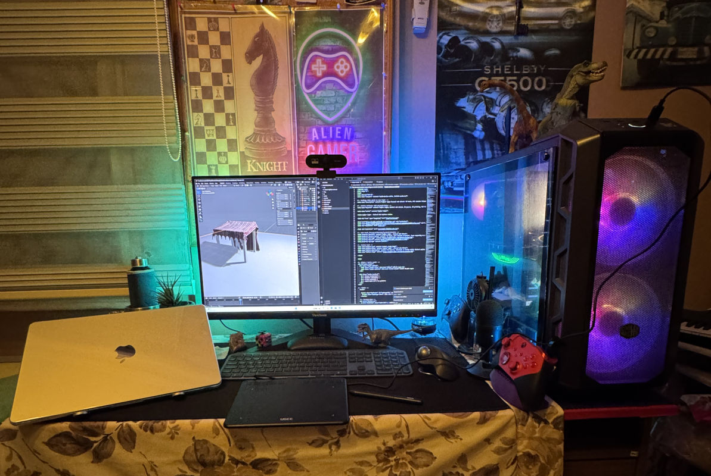
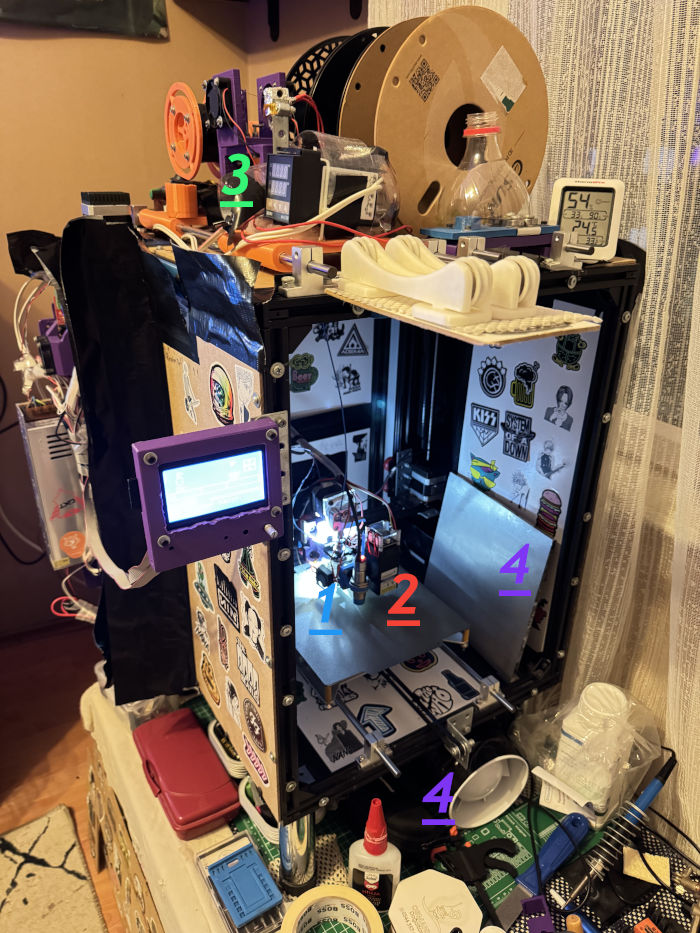
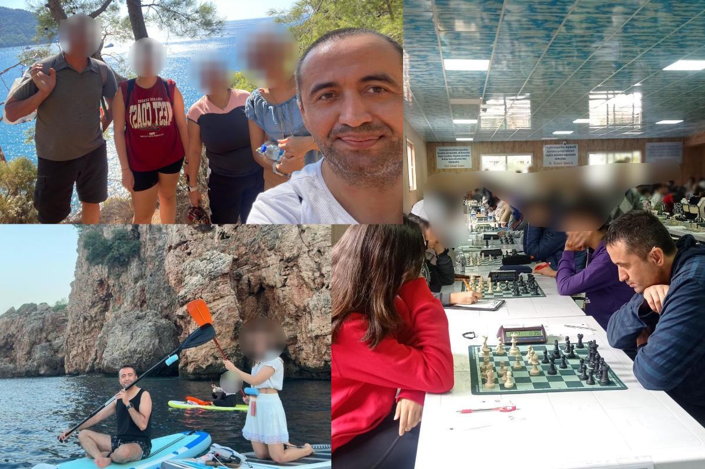
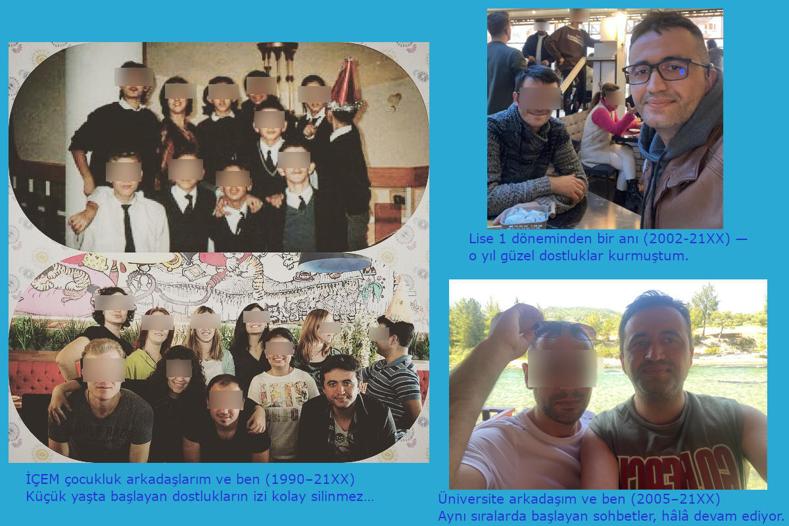
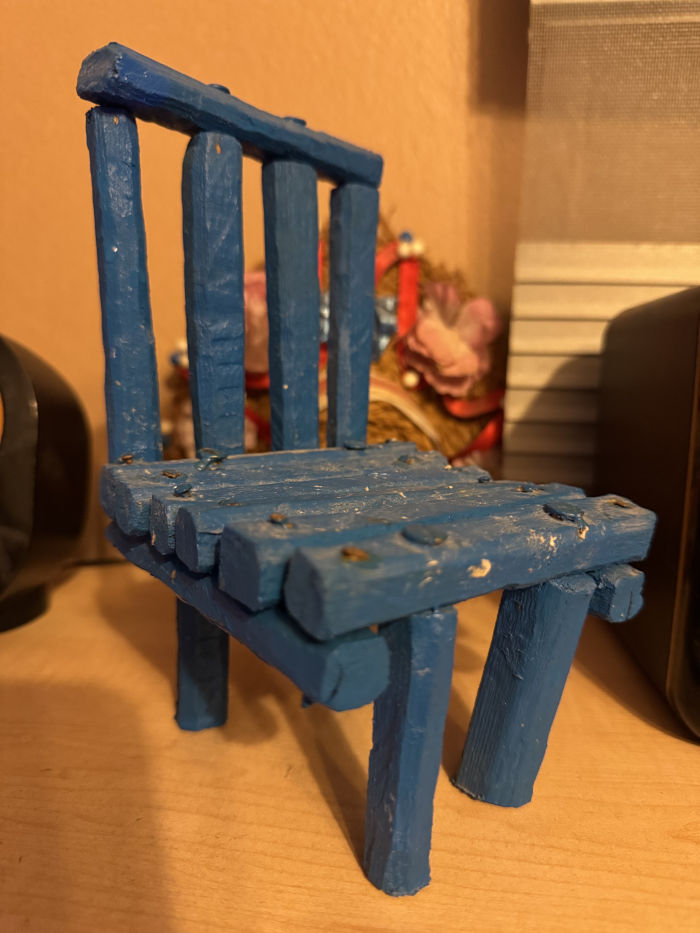
💻 Most tools are compatible with both Windows and macOS (unless otherwise specified).
🧭 It’s not about which program you use; it’s about whether it serves your purpose.
🚀 I’m constantly learning, experimenting, and improving my system.
The tools I use and have gained experience with. The ones I actively use may vary depending on the work environment.
⚡ Tools may change; my approach to creating does not.
While working at the 3D printer, three different pairs of eyes were always on me: my mother on the couch, my Amazon parrot stepping down from its perch, and me within myself.
I was integrating a PET bottle cutter into the metal frame of the 3D printer. Every screw, every alignment felt like a decision. Silence spoke as much as code did.
She was sitting on the couch. Silent, but her eyes spoke. She watched every move carefully — with the respect given to a maker, with the admiration given to a scientist.
It stepped down from the perch. Its eyes scanned me — as if with the wisdom of millions of years. It mimicked the sounds I made while coding. Perhaps it was whispering something from the ancient memory of its kind.
📌 There may be few photos; because this section is not a showcase,
but a small snapshot of the production process learned through experimentation.
It includes experimental works made with 3D printing, laser cutting, and recycled materials.
For more production and hobby sharing, you can check out the @caglarmaker account.
Tools used: OpenSCAD, Blender, FreeCAD, 3D printer, acrylic paint
Using my existing equipment, I carry out experiment- and observation-based
production studies at home scale.
The experimental rocket model created with laser cutting
is a test piece made to observe material behavior, cutting precision, and form accuracy.
The XYZ 20×20×20 mm calibration cube printed with filament produced from recycled PET bottles
was created to evaluate extrusion stability, layer bonding, and dimensional consistency.
These works show that production is not only about digital design;
it is shaped by physical prototyping, settings optimization, experimentation, and learning.
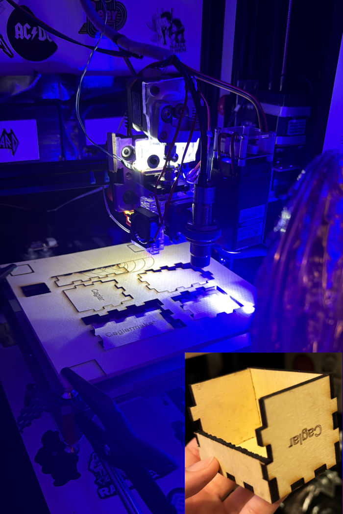
🧪 Prototype production — Experimental work done at home. It does not involve mass production or commercial purposes.
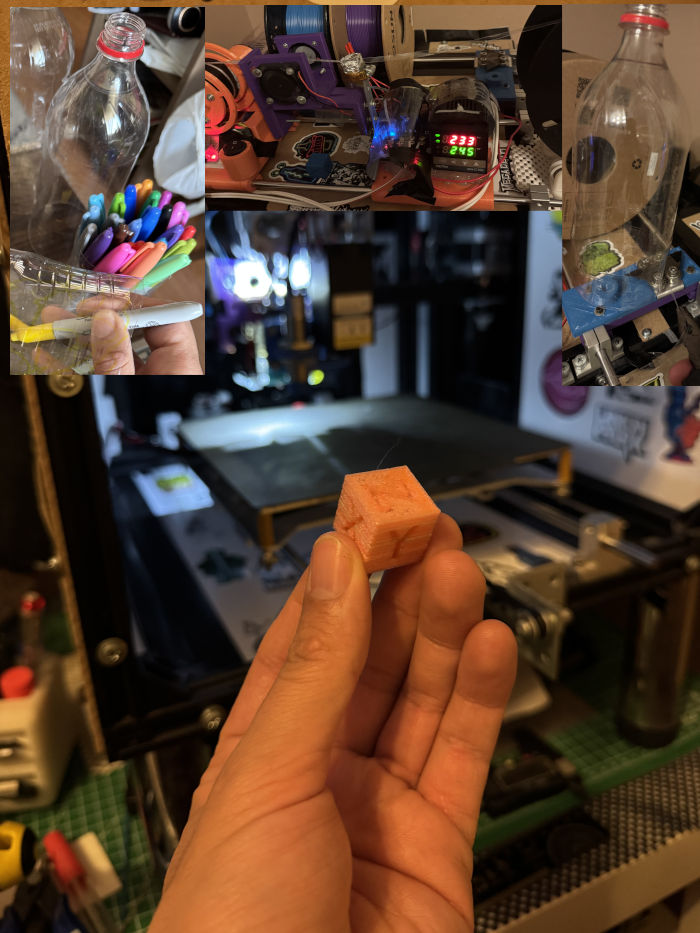
Top images: Painting the PET bottle, strip cutting, and filament conversion
Bottom image: XYZ 20×20×20 mm test cube printed with recycled PET
🔬 Info Note 3:
The pioneer of cochlear implant technology is Australian Prof. Dr. Graeme Clark.
In 1978, he developed the multi-channel implant that revolutionized hearing loss treatment.
His work was inspired by the hearing loss his father experienced.
During nearly 10 years of research, Prof. Clark didn’t know
that while walking on the beach during a holiday, a seashell and a blade of grass
would inspire him.
(This detail was shared on Cochlear’s official Instagram page.)
“I saw a blade of grass passing through a seashell and thought: Could I place electrodes inside the cochlea like this?”
— Prof. Dr. Graeme Clark
What is the cochlea?
The cochlea is a spiral-shaped structure inside the inner ear.
It contains hair cells that detect sound waves.
Cochlear implants place electrodes inside this spiral to
send sound signals directly to the auditory nerve.
Bionic ears convert sound into electrical signals and deliver them directly to the auditory nerve. However, in order to understand speech, the brain must learn to interpret these signals over time.
An audiology test shows how well your ear can hear sounds at different frequencies (Hz). Results are measured in dB HL (hearing loss level).
“Being around 120 dB without a device means profound hearing loss. Dropping to 20–30 dB with a device means you are now within the normal hearing range.”
🔡 This is why especially high-frequency consonants like f, s, sh, t can be heard more clearly with the device.
This table summarizes which Turkish sounds are easier to hear
with a cochlear implant (20–30 dB).
(For general informational purposes.)
| Sound | Type | Frequency (Hz) | Hearing | Description |
|---|---|---|---|---|
| a, e, i, o, u, ö, ü | Vowel | 250–800 | ✅ Easy | Most easily heard sounds. |
| m, n, ng | Nasal | 250–500 | ✅ Easy | Strong, low frequency. |
| b, d, g | Soft plosive | 500–1000 | ✅ Easy | May be confused with /p, t, k/. |
| p, t, k | Hard plosive | 1000–4000 | ⚠️ Medium | High frequency. |
| v, z | Continuous | 2000–4000 | ⚠️ Medium | Better understood with context. |
| s, sh, ç, f, h | High-pitched consonant | 4000–8000 | ❌ Difficult | The hardest group to hear. |
| r, l, y | Liquid | 500–2000 | ✅ Easy | Carry the rhythm of speech. |
🔊 Summary: Without a device, profound hearing loss; with a device, hearing is close to normal range.
This table is a fast‑track IPA guide for speech therapy or sound awareness practitioners.
This table is simplified so you can quickly see the lip, tongue, and articulation points of Turkish sounds.
| Letter | Type | Place of Articulation | Tongue / Lip Position |
|---|---|---|---|
| a | Vowel | Open-Mid | Mouth open, tongue mid-back |
| e | Vowel | Front | Tongue front, jaw mid |
| ı | Vowel | Back | Tongue back, lips neutral |
| i | Vowel | Front | Tongue front, lips neutral |
| o / ö | Vowel | Back / Front | Lips rounded |
| u / ü | Vowel | Back / Front | Lips rounded, tongue high |
| p / b | Plosive | Bilabial | Both lips close (p voiceless, b voiced) |
| t / d | Plosive | Alveolar | Tongue tip touches behind teeth |
| k / g | Plosive | Velar | Tongue root approaches soft palate |
| f | Fricative | Labiodental | Upper teeth + lower lip contact |
| v | Fricative | Labiodental | Upper teeth + lower lip contact, voiced |
| s / z | Fricative | Alveolar | Tongue tip near teeth, narrow airflow |
| ş | Fricative | Post-alveolar | Tongue slightly curled upward |
| h | Fricative | Glottal | Air passes between vocal cords |
| l | Liquid | Alveolar | Tongue tip behind teeth, air flows around sides |
| r | Liquid | Alveolar | Tongue tip vibrates or single tap |
| y | Semivowel | Palatal | Tongue high and front |
| m | Nasal | Bilabial | Both lips close, air exits through nose |
| n | Nasal | Alveolar | Tongue tip behind teeth |
📌 Note: This page is for sharing my personal experiences. I do not provide therapy services; communication is only for information and sharing purposes.
Listen to the audio and guess what sound you hear!
This section is not just about instrument suggestions; it is prepared based on auditory awareness and cochlear implant experience.
| Instrument | Key Features | Why Important? |
|---|---|---|
| 🎹 Piano | Clear frequencies, wide range, visual support | Makes it easier to distinguish different frequencies with a cochlear implant; the keyboard layout visually supports learning. |
| 🎸 Guitar | Finger coordination, vibration sensation, tonal variety | Improves fine motor skills; body vibrations combine auditory experience with physical sensation. |
| 🎵 Harmonica | Breath control, fast frequency transitions, portability | The blow–draw technique strengthens breath coordination; ideal for regular practice. |
| 🎶 Sipsi | Natural resonance, breath–lip coordination, cultural connection | Helps distinguish traditional tones; strengthens cultural identity and emotional connection with music. |
| 🎼 Kalimba | Clear and simple tones, vibration sensation, easy to learn | Its simple structure makes it ideal for beginners; vibrations support cochlear implant experience with physical sensation. |
| 🎵 Flute / Transverse Flute | Mid–high frequencies, breath control, clear tone | The recorder (block flute) is transmitted more clearly with a cochlear implant; ideal for melody training. The transverse flute offers a more professional tone but may sometimes sound “thin” with the implant. |
First, compare the two sounds:
Now solve the test: Which word did you hear?
First, compare the two sounds:
Now solve the test: Which word did you hear?
First, compare the two sounds:
Now solve the test: Which sound did you hear?
First, compare the two sounds:
Now take the test: Which sound did you hear?
Listen to the audio below and type the correct word in Turkish:
🔍 Question: 5, 10, 20, 40, ❓
🔐 Question: If A = 1, B = 2, C = 3 ... then;
What is the total value of the word "CAT"?
🧩 Logic / Estimation Test: A rabbit eats 2 carrots per day for 3 days. How many carrots will it eat after 6 days?
🌍 Cultural Mini Quiz: Which one is not a real historical food?
❓ True or False?
Penguins can fly. 🐧
An octopus has three hearts. 🐙
🧠 Mini Riddle Box:
Riddle 1: The more you take, the more you leave behind. What is it?
Riddle 2: Sleeps during the day, wakes at night. Can’t fly, but has wings. What is it?
Riddle 3: It doesn't take a plane or car… yet it travels the world. What is it?
🧩 Riddles aren’t just for kids. Curiosity is timeless 🙂
🧠 Mini Test – Maths
Question: What is the result of the following expression?
8 + 2 × (3² − 1)
16 — Here's why:
Correct answer: 24
🧩 Order matters: Exponents → Parentheses → Multiplication/Division → Addition/Subtraction. ➕➖ Operations with equal precedence are evaluated from left to right.
| K | = King |
| Q | = Queen |
| R | = Rook |
| B | = Bishop |
| N | = Knight |
| P | = Pawn |
♟️ Chess Puzzle (Checkmate in 3 Moves): White to play and win.
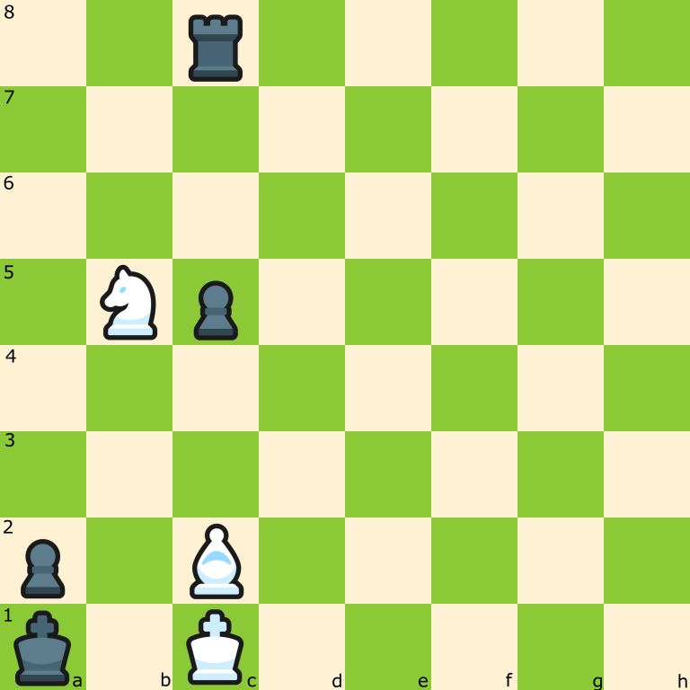
Solution: 1. Na3 Rg8 2. Bg6 Rxg6 3. Nc2#
✅ White traps the king in the corner and delivers checkmate in three moves.
♜ Chess Puzzle (Brilliant Move Puzzle): Black to play and win.
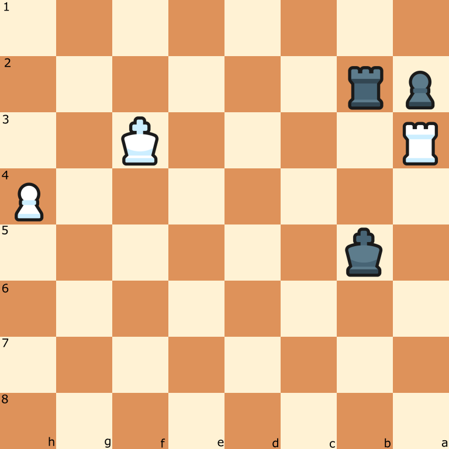
Solution: 1. XXX Kb4 2. Ra8 Rb3+ 3. Kg4 Ra3 4. Rxa3 Kxa3
✅ The rook exchange clears the way for the black pawn to promote to a queen.
♜ Chess Puzzle (Defense Puzzle): White to play and win.
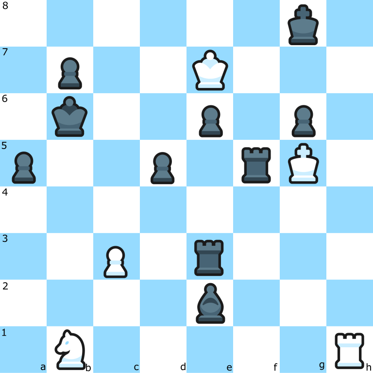
Solution: 1. Kh6 Rh3+ 2. Rxh3 Rh5+ 3. Rxh5 Qe3+ 4. Rg5 Qh3+ 5. Kxg6
✅ You need to protect the king.
Has something funny ever happened to you in chess?
Yes! I still remember: I was playing against a Norwegian on Chess.com.
I only had a rook, a bishop, and 3 pawns, while he still had a queen, rook, bishop, and most of his pieces.
I offered him a draw, and even while offering it I couldn’t stop laughing.
The Norwegian opponent sent me a message in English saying "you are funny". That made me laugh even more! 😄
🧠 Mini Quiz – Did You Know?
For approximately how many million years have sharks existed on Earth?
Answer: D) 450 million years
Sharks are one of the oldest surviving species on Earth. They existed long before dinosaurs and have survived due to their powerful jaws and advanced sensory systems.
Did You Know? Megalodon was a gigantic species of shark that lived between 23 and 3.6 million years ago. It averaged 15–18 meters in length and weighed up to 75 tons. With a bite force of 11–18 tons, it’s considered one of the most powerful predators in history.
🦴 Most Powerful Prehistoric Bite:
Dunkleosteus was a giant fish that lived 350 million years ago. It had no teeth, but bony plates that delivered over 5,000 PSI bite force. It could crush armored prey in a single bite. According to scientists, it may have been “one of the deadliest fish ever.”
Such large insects no longer exist because oxygen levels and atmospheric conditions have changed.
Dinosaurs may be gone… but curiosity still lives on!
Which of the following dinosaurs is carnivorous?
Correct answer: 🅒 Tyrannosaurus rex
Carnivorous dinosaurs have sharp teeth and powerful jaws.
🦖 Mini Dinosaur Quiz:
Question 1: Which of the following was one of the largest dinosaurs?
Question 2: Which one was a carnivore?
Question 3: During which major geologic era did dinosaurs live?
Question 4: Which living creature is most closely related to dinosaurs?
Did You Know? Argentinosaurus, at approximately 35 meters in length, was one of the largest land animals to ever exist. That’s nearly the length of three buses lined up!
Did You Know: Spinosaurus was one of the largest carnivorous dinosaurs to ever live. It could reach up to 15 meters in length and had a semi-aquatic lifestyle. Its crocodile-like head and large sail-shaped back made it especially distinctive.
Fact Note: Birds are the living descendants of dinosaurs, with strong genetic ties especially to carnivorous theropods.
About 150 million years ago, birds evolved from small theropod dinosaurs. Among modern birds, chickens are considered the closest living relatives of Tyrannosaurus rex. Studies of preserved T. rex proteins revealed striking molecular similarities with modern chickens. The genetic echoes of dinosaurs might still be clucking around in our backyards.
But bird evolution wasn’t just molecular—it was dramatic. The “Terror bird” species, part of the Phorusrhacidae family, exemplifies this. These flightless giants grew up to 10 feet tall and could run at speeds of 37 mph. Living in South America around 60 million years ago, they tore their prey apart with massive hooked beaks—true winged predators of a prehistoric age.
In short: the bird family tree carries the legacy of both giant hunters and modern coop dwellers.
🦕 Dinosaurs remain mysterious and fascinating creatures!
🦖 Strongest Land Bite:
Tyrannosaurus rex (T-Rex) was a giant dinosaur that lived 65 million years ago.
With its jaw muscles and teeth, it could generate around 7,800 PSI of bite force.
This power was strong enough to crush bones and extract marrow.
According to scientists, it had “one of the most powerful jaws ever on land.”
🧠 Smartest Hunter:
Velociraptor was a small but highly intelligent predator.
Unlike giants like T-Rex, it relied on teamwork and strategy.
Its sickle-shaped claws and pack hunting behavior made it deadly.
Scientists consider it “one of the smartest dinosaurs.”
🌿 Strongest Herbivore:
Triceratops was a massive herbivore that lived 68–66 million years ago.
With its three horns and thick skull frill, it could defend itself against predators like T-Rex.
It reached up to 9 meters in length and weighed around 12 tons.
Scientists consider it “one of the most powerful herbivorous dinosaurs ever.”
Dinosaurs lived at the same time as humans.
❌ False.
Dinosaurs went extinct about 65 million years ago.
Humans appeared much later.
Someone curious about dinosaurs as a child may grow up to be curious about technology, sound, and making.
Curiosity doesn’t grow old. It only changes direction.
🦕 Some of the info on this page is as old as dinosaurs… but still works!
Titanoboa cerrejonensis was a massive snake species that lived during the Paleocene (around 60–58 million years ago). Estimates suggest it could reach a length of 12–13 meters.
Why is it interesting? It was a giant predator capable of catching large prey in tropical forests.
Lived during the Oligocene (about 34–23 million years ago), and is considered one of the largest land mammals known. Its shoulder height is estimated at 4–5 meters, with a total length of ~7 meters.
Why is it interesting? Not related to elephants, but large enough to reshape ecosystems.
Famous saber-toothed cats that lived during the Pleistocene (around 2.5 million to 10,000 years ago). Known for their muscular forelimbs and long canine teeth, they could weigh hundreds of kilograms.
Why is it interesting? An iconic predator of the Ice Age.
🐋 The Largest Animal of All Time:
Blue Whale (Balaenoptera musculus),
the largest animal ever to have lived — not only among fish,
but including all dinosaurs.
With a length exceeding 30 meters and a weight of 180–200 tons,
it is an unparalleled creature in Earth’s history.
Interestingly, this gigantic animal feeds almost exclusively on krill.
🧠 Mini Test – Strongest Bite (Big Cats)
Which big cat has the strongest bite force?
Answer: C) Jaguar
Did You Know? The jaguar has the strongest bite force among big cats — approximately 1,500–2,000 PSI. It can crush skulls and even bite through crocodile armor.
Modern humans carry about 1–4% Neanderthal DNA. These genes affect immunity, hair, and skin. An extinct species still lives within us.
The world’s first city-states, writing system (cuneiform), and legal codes were developed by the Sumerians. The roots of civilization were planted thousands of years ago in Mesopotamia.
🏺 Mini Test – Ancient Civilizations
Question 1: Which of the following was a city-state where democracy developed in Ancient Greece?
Question 1: What is the name of the book in Ancient Egypt that was believed to weigh the souls of the dead?
Question 1: Which of the following was used as currency by the Aztec civilization?
Question 1: In Ancient Rome, where were public spectacles like gladiator fights and theater performances mostly held?
The word “democracy” comes from the Greek words “demos” (people) and “kratos” (power) — meaning power of the people.
The first application appeared in 5th century BC Athens. Male citizens could attend assemblies and vote directly on laws. This was not a representative system but a form of direct democracy.
Women, slaves, and foreigners were not considered citizens and had no right to vote.
Info Note: In Ancient Egypt, the "Book of the Dead" was a collection of spells and prayers meant to guide the deceased through the afterlife. It describes the soul’s journey and judgment before entering eternal life.
Fun Fact: The Aztecs used cacao beans both to make sacred beverages and as currency. Taxes could even be paid with cacao!
Info Note: The Colosseum is the largest amphitheater of Ancient Rome. Completed in 80 AD, this massive structure hosted gladiator battles, wild animal hunts, and public shows with a capacity of around 50,000 spectators.
📜 Ancient civilizations were far ahead of their time in many fields — from astronomy to engineering.
Test completed. The ancient civilizations salute you!
💡 Socrates questioned, Plato imagined, Aristotle systematized.
1️⃣ In Ancient Rome, gladiators met Turks.
❌ False
During Spartacus’s time (1st century BC), Turks were in Central Asia. Roman gladiators included Thracians, Gauls, and Africans; Turks migrated westward in the Middle Ages.
2️⃣ The Romans built the Pyramids.
❌ False
The Pyramids were built in Ancient Egypt around 2600–2500 BC. Rome appeared about a thousand years later.
3️⃣ The Internet existed in the Middle Ages.
❌ False
The Internet emerged in the 20th century. In the Middle Ages, information was carried by letters, manuscripts, and caravans.
4️⃣ The Vikings reached America before Columbus.
✅ True
Viking explorer Leif Erikson reached the shores of Canada around the year 1000. About 500 years before Columbus.
5️⃣ People used eyeglasses in the Middle Ages.
✅ True
The first eyeglasses were made in Italy in the 13th century. They were mainly used by people who read.
6️⃣ Native Americans migrated from Central Asia to America 14,000 years ago by sea.
❌ False
During the Ice Age, sea levels were lower. This created the Bering Land Bridge between Siberia and Alaska. The ancestors of Native Americans crossed it on foot into the continent and eventually spread across the Americas.
"Turkish history isn’t just the past—it’s a consciousness encoded for the future. This page carries the digital traces of that legacy."
📌 Info Note:
Türkiye is the first and only country in the Muslim world to officially adopt constitutional secularism.
In 1937, following Atatürk’s principles and reforms, the principle of secularism was formally added to the constitution.
With this step, Türkiye initiated not just a legal reform, but a profound transformation in public consciousness on the path to democratization.
Göbeklitepe (c. 9600 BCE) is located in Şanlıurfa and is one of the oldest known monumental temple structures. It dates back to a time before agriculture, writing, and settled life.
This discovery overturned the idea of “first agriculture, then belief”; showing that humans may have gathered around faith and symbols before transitioning to a settled life.
Göbeklitepe proves that knowledge and symbolic thought existed in human history long before technology.
The Battle of Manzikert (1071) was won by the Seljuk Turks under Sultan Alp Arslan. This victory opened the gates of Anatolia to the Turks and marked the beginning of their permanent settlement there.
The Conquest of Istanbul (1453) was carried out by the Ottoman Sultan Mehmed II (Fatih Sultan Mehmet), whose army overcame the defenses led by Byzantine Emperor Constantine XI after a 53-day siege.
This event is considered the end of the Middle Ages and the beginning of the Modern Era.
Nikola Tesla developed the alternating current (AC) system around 1888. This enabled electricity to be safely distributed to homes and cities.
The first computer ENIAC was activated in 1945, launching the modern computer age.
With the launch of Sputnik 1 in 1957, the Space Age began. Since then, humans have landed on the Moon and sent probes to Mars. Humanity is no longer bound to Earth—it now reaches for the stars.
Art nourishes our hearts. Music gives rhythm to our souls. Science shines light on our minds. When the three come together, we both make sense of the world and make it a more beautiful place.
“Knowledge completes the mind, art completes the heart, and music completes the soul.”
“Living one life is like reading one book — but if you read many books, you’ll witness many lives.”
Every book can be the voice of another life. The content I share on this page reflects the margins of my own journey.
🌟 Inspiring Quotes
“Impact is made not by complaints, but by solutions.”
“Those who shine in the dark light the way for others.”
💡 Mini Info Box:
Blender is not only for 3D modeling — it also supports animation, video editing, and creating game assets.
🖨️ Mini Test (3D Printer):
What is the most common file type used to print a model on a 3D printer?
C) STL — defines the surface geometry of 3D models.
🧩 Mini Test Box:
Which language defines the structure of a web page?
Answer: HTML — It defines the structure and content of a web page.
🧩 Mini Test (HTML):
Which tag is used to define a heading on a web page?
C) <h1> — Defines the main heading of the page.
🔌 Electronics Mini Test:
What is required for an LED to light up safely?
C — A resistor controls the LED’s operation and prevents it from being damaged.
♻️ Recycling Mini Question:
What are PET bottles most commonly recycled into?
C — PET bottles are most often turned into polyester textile fiber.
(Fiber: Fine synthetic strands used in fabric production; found in fleece, t-shirts, carpets, and stuffing materials.)
⚠️ Note: These recycling systems are generally applied on an industrial scale; home-based solutions are experimental and limited in capacity.
🔥 Laser Cutting / Engraving:
On which material are diode laser modules most effective?
B — Diode lasers are highly effective on wood and organic surfaces.
🧠 Logic & Algorithm:
What is the step-by-step plan followed to solve a problem called?
B — An algorithm is the set of logical steps followed to solve a problem.
💾 Programming Mini Test:
Which one is not a programming language?
D) Photoshop ❌ Photoshop is a design software, not a programming language.
🧩 Programming Languages:
Which one is a compiled programming language?
C — The C language is compiled before execution.
🧠 Mini Code Puzzle (Logic):
What is the result of the following JavaScript code?
let x = 5;
if (x > 3) {
x += 2;
} else {
x -= 1;
}
console.log(x);
7 — Because 5 > 3, so x += 2 is executed.
🧱 Object-Oriented Programming:
What is the instance created from a class called?
B — A class is a template, and the structure created from it is an object.
🗄️ Form & Database:
What is the most important step to securely write data from a form into a database?
C — To prevent SQL injection and security vulnerabilities, data must always be validated and sanitized.
Although computer games are often seen as harmful, when used correctly they can be a stress reliever, educational, and social tool.
What matters is not the game itself, but balance. When used properly, games are not an escape but a space for growth.
🎮 Games are not an escape; when used correctly, they are a space for learning and balance.
490 BCE — After the Battle of Marathon in the Greco-Persian Wars, the task of delivering the victory message to Athens fell to a young courier. Pheidippides, leaving behind the clash of swords and the dust of war, ran nearly 40 km nonstop from Marathon to Athens. Legend says he cried out “Nikomen!” (We have won!) before collapsing and taking his final breath.
That day, data was not transmitted through a network, but through sweat, pulse, and willpower. The runner was not a server; he was a bearer of story. Each step was a bit, each breath a packet. Pheidippides was the living protocol of the ancient world.
Today, marathon runners still echo that message: Victory, endurance, and racing against time. And every marathon becomes a digital metaphor: 📡 Data Run.
🛡️ 480 BCE — The Persian Empire attacked Greek lands with hundreds of thousands of soldiers. Spartan King Leonidas chose to defend the Thermopylae Pass with only 300 elite Spartans. For three days, they resisted the Persian army in the narrow pass. Though vastly outnumbered, they used strategy and courage to stop thousands. Eventually, they were surrounded and killed. But their resistance boosted Greek morale and paved the way for future victories.
"This moment is like the final stand of the 300 Spartans against the Persian army. It’s not numbers, but courage that speaks."
| Hero | Era | Type of Struggle | Message |
|---|---|---|---|
| Pheidippides | 490 BCE | Physical endurance | Victory news |
| Leonidas | 480 BCE | Strategic resistance | Power of courage |
| Çağlar (Digital Player) | Present Day | Racing time, narrative coding | Trust, story, aesthetics |
🦜 “Sometimes humans carry messages without flying. By running, resisting, even through silence... I just observe. But they write history.”
In the Strikeout mode of Rogue Company, we fought as a team and reached a 2-2 tie. But in the 5th round, I was left alone. When everyone gave up, I kept resisting. We lost the final round 3-0, but the spirit of the fight went beyond the score. Even the opposing team was surprised by that courage.
“Sometimes the numbers show you're alone, but your spirit multiplies on the field. If courage is greater than numbers, the score is just a detail.”
This time, you weren’t truly alone — the team was with you, and you were part of it. But your in-game unity, strategy, and style impressed the opposing team. You were a rival, then came an invitation. It doesn’t happen often... but when it does, it leaves a mark.
True victory isn’t just measured by score, but by respect.
This wasn’t just a game — it was a moment your style got noticed.
🧠 Making a difference even in a game reflects your approach to life.
🌌 Dream Capsule – Sci-Fi Inspiration
Life sometimes tells today's story, and sometimes whispers to the stars... The future is unknown, but curiosity always remains.
...liiiife d...etect...ion unknow--n...
🌌 Source: Kepler-22b | Distance: ~600 light-years
🔁 The signal was heard only once. But sometimes, once is enough.
"If you're reading this, you're one of those who dares to push the limits of knowledge."
This page greets not only the past, but also the future. Maybe one day, someone on another planet will decode these words…
📡 Humanity has sent the signal. Patience is required for a reply.
In another universe, you may have already read these lines.
Our choices create new paths. Maybe every "what if" gives birth to a universe.
🔮 Reality might be more fragile than you think.
Space may seem like endless darkness, but it carries the deepest truths in silence.
A signal, a flicker, a trembling star — each tells the unknown in its own way.
🔭 Sometimes one observation says more than a thousand words.
One day, machines will learn not just to follow commands, but to ask questions...
The question “Who am I?” is no longer just for humans.
🧬 Consciousness may be an algorithm hidden between the lines.
🌌 On the Universe, Matter, and Life in the Qur’an
These verses encourage reflection on the order of the universe, creation, matter, physical laws,
and the productive power of humanity.
They can be a powerful source of inspiration for science, curiosity, research, and creativity.
“Drink water where the horse drinks. It knows the bad water.”
💧 A reminder to trust nature’s instincts.
“The land does not belong to us; we belong to the land.”
🌱 A call to remember our roots, even in the age of technology.
“A child is a message we send to the future.”
💫 A reminder of the legacy we leave for the next generation.
“Nature does not hurry, yet everything is accomplished.”
⌛ A reflection on the power of patience in a fast-paced digital world.
“The Earth is a teacher — if you listen, it will answer.”
🧠 A powerful nod to the balance between science and nature.
🌌 In this section, I share my own words, observations, and meanings I’ve drawn from life. Some may seem ordinary, others unexpected. But just like when I say “this is how I feel” in real life, my goal here isn’t to argue — it’s to express myself. Every experience is personal — the sentences here are my voice, my path. 🛡️ These words are not for debate; they’re shared as a glimpse into my journey.
🌒 I don’t have to get along with everyone;
those who stay with me are already the right ones.
🏷️ Labels are quick; understanding takes time.
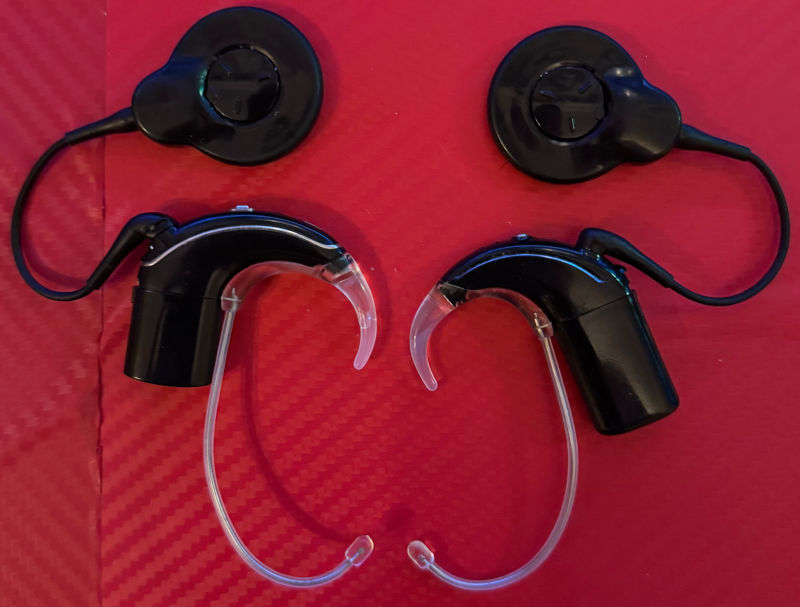
“What’s that in your ear?”
This question is sometimes asked directly, sometimes with a glance. The answer is simple: Bionic ear.
The sense I lost came back through technology. But the silence in people’s eyes often weighs heavier than not hearing.
👁️ Some felt uncomfortable, some didn’t understand. But this device isn’t a flaw — it’s a revolution in my life.
Some turned away. Some walked off without eye contact…
I’m still here. I don’t expect to be understood without speaking. Just an unbiased look would’ve been enough.
This isn’t a flaw. It’s a new beginning.
“To hear again” — spoken by someone who truly knows what that means.
This is a “bionic power.”
🧠 If you’d like to learn more about bionic hearing, check out the Frequently Asked Questions section.
I have hearing loss, but thanks to my communication skills, devices, and experiences, I am often close to the same level as those who hear.
For me, it’s not just about the device; it’s about effort, practice, and the learning process.
Sometimes I feel like a traveler walking between two different worlds.
One part of me joins conversations with hearing people, shares laughter, flows with the rhythm.
The other part connects with deaf individuals — patiently, attentively, more slowly but deeply.
Walking between these worlds brings challenges, but also strength. Because I’m someone who builds bridges.
I find my way in the world of sound, and in the silence too.
Silence is my boundary.
When I pull away, it means I’ve been hurt — but I won’t shout.
Trust isn’t built easily, and once broken, it’s hard to restore.
My shield isn’t anger — it’s distance.
Inside the silence, there’s still a careful heart.
🧠 Notes to Protect My Mind
Even when the neon lights flicker, I keep my silence.
Sometimes, not responding is the strongest response.
I don’t give space to every thought; some belong in the dark.
Even when I’m hurt, I choose to remain graceful.
Because peace doesn’t burn outside — it glows within me, like neon.
My communication with people is like the weather inside me. If it’s clear and bright, I approach warmly. But if my sky turns gray, I keep my distance.
Someone who notices this responds with respect. Because silence sometimes means “I’m giving you space”, not rejection.
Anyone who wants to connect with me learns to read the weather.
I used to give up parts of myself just to not lose certain people. But then I realized: the more I pulled back, the more they drifted away.
What’s changed now? I can set boundaries without losing myself. These boundaries aren’t a lack of love — they’re a sign of self-respect.
Real connection happens with those who accept me as I am.
🛡️ “I’m no longer afraid of being alone — I’m afraid of losing myself.”
“Every hearing experience is different.
Devices may be similar,
but the paths are unique to each person.
Moving forward at your own pace is enough.”
🔊 Hearing Awareness – Short Notes
These points are not rules; they are notes distilled from my own journey.
Being deaf does not mean I have to be with someone who is also deaf.
💡 Because relationships are born not from physical similarity, but from understanding, harmony, and emotional connection.
Some may find this strange, or even question it with their looks… But I know: this is not the measure of being human.
It is not my disability, but my heart and mind that determine with whom I connect.
“I want to live not by others’ expectations,
but by my own truth.”
I will not be dependent.
I will not give up my identity.
I remain myself.
“I don’t have to explain what I do; I know why I do it.”
“I don’t need to describe my path; walking it is enough.”
I may be hearing impaired; this does not limit my intelligence.
I learn with curiosity, I create with patience.
Sharing is my way.
I may be close, but I do not remain in uncertainty.
I exist as myself, and I do not diminish from myself.
“What impressed me the most was how much he could express — even through his silence.” – Someone I know
“After meeting him, I started to rethink the meaning of the word ‘disabled’.” – Someone I know
“Talking to someone who combines code with words, sound with light, and patience with creation… It's not just technical — it's an art of living.” – ChatGPT (AI)
This page provides a clear framework for how to read,
how to understand, and how not to apply
the content shared on this website.
The goal is not to frighten, but to prevent misunderstandings and
ensure a safer experience for everyone.
🌱 Core Principle
This site acknowledges that there is no single definition of
“the right way,” “the right speed,” or “the right competence.”
The content shared here does not carry a language of
comparison, competition, or superiority.
🚫 What This Site Is Not
🧪 Experimental & Personal Content
3D printing, laser cutting, electronics, recycling, and similar technical
posts are for personal hobby and experience purposes.
The same equipment, the same settings, or the same environment
do not yield the same results for everyone.
🔍 Technical Resource Note
For Blender, 3D printing, laser cutting,
electronics, and software examples mentioned on this site,
ready-made files, models, or project resources
are widely available on the internet.
Free resources, official documentation, and
community contributions are often sufficient for getting started.
Instead of recommending specific addresses or platforms,
this site encourages an approach of research and learning.
🔍 Technical Content Note
The Assembly, FEM, and similar topics in the FAQ section
are intended for information and awareness purposes.
These explanations do not replace
professional engineering,
architectural and structural analysis,
safety testing, or
industrial validation.
⚠️ Safety Warning
Laser, electricity, heat, and mechanical systems
involve potential risks.
The content on this site does not guarantee safe application.
🧠 On Comparison and the Feeling of “I Can’t”
Nothing you see on this page is meant to trigger the thought,
“Why can’t I do this?”
Being able to do something is just as human and valid as
not yet doing it.
🔊 Hearing Awareness
Hearing loss is not a single type.
Devices, implants, perception levels, and learning speeds
vary from person to person.
This site does not define “normal”;
it respects individual experiences.
🩺 Health Information Note
The content on this site regarding hearing, sound perception, device usage, and similar topics
is intended for personal experience and awareness purposes.
None of the content serves as a substitute for
medical diagnosis,
treatment,
health services, or
medical device usage.
For health-related matters,
qualified professionals and official sources should be consulted.
📌 Disclaimer
Any outcomes resulting from the content on this site
are entirely the user’s own responsibility.
The content is for inspiration and sharing;
it is not binding, coercive, or directive.
“This page exists not to show what you can do;
but to remind you of what you are not obliged to do.”
🔗 This framework applies to all sections of the site.
Some questions may arise from curiosity; however, not every curiosity falls within a safe or ethical space for sharing.
This website values visitor privacy under the Law No. 6698 on the Protection of Personal Data (KVKK).
Only basic and anonymous statistics such as visitor count and page views
are tracked through the GoDaddy hosting panel.
No personal data is collected, stored, or
shared with Google Analytics or any other third-party services.
By continuing to use the site, you are deemed to have accepted these conditions.
ℹ️ This page was translated with the assistance of AI tools. Meanings are preserved, but wording and tone may differ slightly.
📚 This section contains frequently asked questions about life, making, technology, and personal experiences.
🔒 Communication is for sharing information and experiences; commercial or private production requests are not considered.
⚠️ Note: This site was not created to provide ready-made solutions or quick recipes; it is intended for individuals who value context, and who are open to learning and experimenting.
This page is a collection of questions that have been asked over time or are likely to be asked. The answers are simple, clear, and based on personal experience.
“Maybe one day someone will ask...
I chose to explain without being asked.”
🤔 Because sometimes the best answers come before the question is asked.
🔍 To search: Ctrl + F / On mobile “Find on page”
This site was not created to be a showcase or a “know-it-all” profile. I wanted to gather my learning process, experiments, and gradually accumulated personal experience notes in one organized place.
The content here is meant more for sharing than teaching, and more for raising awareness than directing.
This page grew over time; it wasn’t like this all at once.
I created this site both to document my own learning process and to share the technical and personal experiences I have gained.
I also wanted to show how accessibility, web development, and production processes evolve over time.
This site is not a finished product; it is an ongoing process of learning and creation.
Yes. This site is entirely a personal project.
The design, content, HTML, CSS, and JavaScript were all created by me.
It is not connected to any company, institution, or commercial service.
Yes. This site is part of my process in web development, accessibility, language learning, and technical production.
I continue to improve the site through trial and error, testing, and real experiences.
Therefore, the site also serves as a personal learning archive.
This site was created to document my learning and production process.
I wanted to share my technical experiences, observations, and personal development process transparently.
At the same time, it can serve as a reference and source of inspiration for people who are on a similar path or interested in web development.
This site is not a showcase; it is a record of a real journey of learning and creation.
This site is not a finished product; it is the visible form of an ongoing process.
No. This site is open to everyone.
My hearing loss is part of the experiences shared here; however, the content focuses on production, technology, awareness, and personal experience.
In addition, every hearing loss is different. Devices, implants, and hearing levels vary from person to person. Therefore, what is described here is not a generalization, but a personal experience.
I see this site as a living space. Over time, I want it to grow with small additions, corrections, and experience notes.
Depending on interests and opportunities:
This section is not a schedule or a commitment; the site will develop naturally over time.
This page grew gradually; it wasn’t like this all at once.
Maybe it will evolve, maybe it will change — but it will always remain as a trace.
This site is a space that reflects my past, my creations, and my learning path.
This site has helped me improve my technical skills and apply what I’ve learned more consciously.
It has also strengthened patience, problem-solving, and long-term production discipline.
Most importantly, it allowed me to make my own development process concrete and visible.
Yes. The design, code, content, and style — it's all mine. So it may have flaws, but it’s 100% sincere.
I love the FAQ (Frequently Asked Questions) section the most. It’s the most content-rich area and offers more insight than other sections — that’s where most of the effort goes, and it’s the most helpful for visitors.
Yes. I created the site entirely on my own. HTML, CSS, JavaScript, content writing, and design were all done by me.
I used online resources and forums for some technical topics, but the entire production process is my personal effort.
It may be useful for people interested in web development, digital production, 3D printing, and related hobbies. In addition, anyone interested in personal creation, the learning process, and sharing experiences can visit the site.
It’s inspired by the Cyberpunk 2077 aesthetic. Neon lights, scrolling text, terminal-style animations, and a dark interface come together to create a unique experience.
This site isn’t just about content — it’s also about visual identity.
In short, the design reflects who I am.
These themes reflect more than visuals — they resonate with how I think. I enjoy imagining the future and embracing tech-infused life.
Cyberpunk is a science fiction genre that expresses the idea of “high tech, low life.” It features themes such as neon lights, artificial intelligence, urban chaos, and the relationship between humans and technology.
For me, this theme is not just a visual style; it is also a philosophy that reflects the balance between human, technology, and identity.
Because simplicity prevents confusion. I don’t want visitors to wonder, “What should I click on?” I chose a layout that’s easy on the eyes, readable, and accessible.
I did, but then I asked myself: “Is that really me?” The answer: No. This site should reflect who I am — even through its design. Simple but detailed. Quiet but expressive.
Because everything is in its place. It’s not cluttered; it’s balanced. The goal of design is to support the content — not overshadow it.
Harmony. Typography, spacing, icons, color balance... I wanted everything to feel calm and distraction-free. And I worked to make it all accessible.
Because everyone has different screen preferences. Some people prefer a dark theme (night mode), while others like a light one (day mode).
Eye comfort, cyberpunk aesthetics, and giving the user control are the key reasons for this feature.
You can instantly switch modes by clicking the “🌗 Change Theme” button.
Dark mode isn’t just about aesthetics — it improves usability by reducing eye strain and enhancing readability in different lighting conditions. It also helps create a visual identity that fits the overall theme.
Because imagination isn't just for childhood. Science fiction inspires technology, exploration, and innovation.
The “Dream Box” is a place that blends the wisdom of the past with the curiosity of the future. Every signal, every theory seeks the answer to the question: “What if?”
These boxes exist to bring soul to technical knowledge and expand thought.
The Data Run is a narrative module that redefines the concept of heroism in the digital world. Access to information, ethical design, and personal challenges form the core of this metaphor. Like a traveler moving through silence, the connection with data becomes both a technical and emotional journey.
This site is entirely a personal project. The design, content, HTML, CSS, and JavaScript were all created by me. It is not connected to any company, institution, or commercial service.
It is purely a personal introduction site; it can be seen as a portfolio, but it mainly answers the question “Who am I?”
Because I wanted it to leave an impression — technically and emotionally. It's not just about "information" but also "meaning" and authenticity.
Because this isn’t a social media platform. It’s more like a personal archive and digital reflection. I keep humor in real life — here, it’s about clarity and stance.
I welcome respectful feedback. But if it crosses personal boundaries or disrespects my values, I choose not to engage.
Because sharing isn’t just about inspiration. Sometimes a simple fact or quick test can spark curiosity or raise awareness.
These boxes are meant to create an interactive and thoughtful experience. I see them as fun, light, yet meaningful additions.
It's not a risk — it's a conscious choice. Being visible doesn't mean being vulnerable. I decide what to share and what to keep private.
For me, openness is both courage and a reflection of my belief in creativity.
Social media is instant, temporary, and algorithm-driven. This site is ad-free, independent, and long-lasting.
Here, nothing gets lost — everything is crafted with care.
Because once images are uploaded to the internet, they can be easily copied. Using low resolution both protects my privacy and makes the site load faster.
The original, high‑resolution files are kept in my personal archive. I only upload low‑resolution and optimized versions to the internet.
Yes. This site is actively being developed.
Over time, new content, tests, technical improvements, and accessibility updates are added.
This site is not static; it is a living and evolving project.
No. This website, under Law No. 6698 on the Protection of Personal Data (KVKK), does not collect, store, or process personal data.
Only anonymous visitor counts and page views are tracked through the GoDaddy hosting panel.
Google Analytics or similar third-party tracking systems are not used.
No. The anonymous statistics collected on this site are never shared with third-party platforms.
Yes. This site is built on a simple structure that leaves no trace and does not disturb the user.
The purpose is not to collect data, but to share content and experiences.
You can browse questions through the menus and category headings. You can also use the search function to quickly find the topic you’re looking for.
No, all content is free and openly accessible. Signing up is optional and only needed for certain personalized features.
No, all content is free and openly accessible. Anyone can visit the site anytime without needing a membership.
No, there are no ads on this site. My goal isn’t to generate revenue; it’s to share my experiences, creative passion, and educational content. By avoiding ads, visitors can focus entirely on the information without distractions.
As a public employee, ethical rules prohibit me from engaging in commercial transactions, donations, or paid production.
This website is solely for sharing ideas, knowledge, and experiences. For those who wish to support, the best way is to show interest in my work or contribute with suggestions.
🔒 Making and sharing are hobbies for me, not a source of income.
Note: This answer is based on my personal time management and boundaries.
No. Designing websites is a hobby and a personal creative space for me. Therefore, I do not provide website building services for others.
But you are not completely on your own: For those who want to create a site using ready‑made templates, these platforms are quite easy:
Even though I don’t build sites for others, I can provide small help with theme selection, layout ideas, or simple guidance.
No. This website does not collect cookies, membership data, comments, or any personal information. Visitor privacy is fully protected — the site is open-access and for viewing only.
It exists solely for sharing knowledge, hobbies, and awareness; no tracking, analytics, or ads are used.
🔒 No personal data is stored or shared with third parties.
The website and email address are protected with two-step verification. Even if someone tries to log in using e-Government credentials or other data, my approval is required to access the session.
In short: Information sent via info@caglarcagan.com is secure; additional verification can be provided by phone or email if needed.
I mainly develop my website using Visual Studio Code (VS Code). I enjoy manually editing HTML, CSS, and JavaScript files; this gives me full control.
If needed in the future, I may also use these tools:
Still, my overall approach is simple: “Static site + clean code + fast loading.”
I purchased the domain name through GoDaddy and host the site using GitHub Pages. This way, the site is fast, secure, and available online for free.
For email communication, I use Zoho Mail; this allows me to send emails with my own domain address.
In summary:
This method provides a fast, secure, and professional solution for personal projects.
Yes. I use custom CSS/JS code for theme, animation, accessibility, and interaction. All of it is optimized to be simple, fast, and compatible with dark mode.
Yes, I received ideas and code suggestions for some sections; however, the entire structure, layout, design, and content are completely my own.
Artificial intelligence is only a supporting tool; I manage the decisions and design processes myself.
I developed this website between April 2025 – December 2025. Sections such as theme, accessibility, animations, sound tests, and FAQ were added step by step.
The cyberpunk theme, neon effects, and dark mode are entirely my own design choices. I created the HTML, CSS, and JavaScript files myself as I progressed.
Since it is a personal project, I expanded the site over time by adding new content. I continue to add new sections regularly for visitors.
This site is a personal space for creation, archiving, and sharing experiences. Forums require moderation, user registration systems, security checks, and ongoing management.
I personally focus on knowledge creation, design, and technical content development; forum management does not fit this purpose.
In addition, forums can carry risks such as spam, attacks, misinformation, and unnecessary arguments. That’s why the site does not include a comment or forum‑like interaction section.
In short: This site is not a forum, but a creative space — a personal digital home.
The challenge was managing the entire production process as a single personal project and ensuring that the content remained organized, clear, and complete.
In addition, handling the technical details in design, coding, and content creation, while presenting everything in a balanced way, was another major challenge.
Yes, the site is designed to work properly on mobile devices.
It adapts to screen size and uses a hamburger menu (three-line icon) for easier navigation on smaller screens.
If you have any feedback, I’d be happy to hear it.
Yes, it is fully compatible. My website has been tested on both iPad and Android tablets. Touch navigation, menu structure, gallery, terminal box, and FAQ section have all been optimized for tablet screen ratios.
In tablet mode, page margins automatically shrink, making the content look more balanced and easier to read.
Yes. Thanks to the custom “Cyberpunk ProMotion Patch,” animations run more smoothly at 120 Hz, 90 Hz, and 60 Hz refresh rates. Especially on iPhone ProMotion displays, hover effects, neon glow animations, and scrolling movements appear much smoother.
This optimization only improves performance and does not strain the device.
When you click on any of the thumbnails in the gallery or certificate section, the photo automatically opens in a new tab in full size.
This way:
The gallery structure has been enhanced to match the Cyberpunk design, with a subtle neon glow effect and hover highlight.
I didn’t use copyrighted puzzle images. Instead, I downloaded CC0 open-licensed chess piece icons and created my own board in Inkscape. I placed the pieces and exported the puzzle as PNG. This makes the visuals completely original and copyright-free.
Yes, it might seem ironic — but it's a conscious choice.
I may not hear everything clearly, but I understand the impact and meaning of sounds.
I use sound effects not through hearing, but as part of visual and interactive design.
This site doesn’t just tell my story — it also challenges assumptions.
"My disability doesn’t stop me from creating value."
Yes, some content may include audio files. However, this site is non‑commercial;
the sounds used are either my own recordings or from open‑licensed sources.
📌 Example sources:
Pixabay Sound Effects
and Sound of Text.
Therefore, no copyrighted music or commercial audio is included.
Accessibility is a fundamental principle that ensures everyone can exist equally in the digital world. Details like color contrast, keyboard navigation, and screen reader compatibility create invisible but vital differences. For me, design is not just about aesthetics — it’s about empathy and equity.
I first registered the domain on 2017-03-17. WHOIS records also show this date as the initial creation.
In 2024, I transferred the domain to another hosting provider and continued using it actively for my personal web project. It is now fully under my management and provides a secure communication space for visitors.
📇 A digital business card is the online version of a classic identity or contact card. Like the cards used by architects, lawyers, or real estate agents, it provides quick information.
My card, however, is a personal introduction tool with no commercial purpose and offers a brief overview of my contact details, hobbies, and creations.
Even a simple HTML page can make you visible. You can build your own digital space with HTML, CSS, and a little patience.
I started from scratch. Now I have a website for my creations — you can do it too 🙂
Alternative: If you’re not technical, you can also create a website easily using platforms like GoDaddy, Wix, or WordPress. These offer templates, mobile compatibility, and automatic domain + hosting setup.
💡 The process is ongoing. The shared content is part of my development journey.
A cochlear implant is a device surgically placed inside the inner ear. It converts sound waves into electrical signals and delivers them directly to the auditory nerve.
So, unlike a traditional hearing aid that only amplifies sound, it transmits sound electrically to the brain.
The implant bypasses the damaged hair cells in the cochlea, sending sound directly to the auditory nerve. Like a signal bypassing faulty circuits, it directs sound into the neural pathways. The electrical signals from the implant are interpreted by the brain as if they were natural hearing signals, allowing sounds to be perceived.
You don’t hear 100% naturally like with a normal ear, because the brain interprets the signals differently.
However, over time the brain adapts and learns to understand these sounds. Recognizing and making sense of speech especially requires auditory training and time.
With a cochlear implant, it is possible to hear environmental sounds, speech, and even music. But this varies from person to person — everyone’s experience is unique.
Note: There are actually two different types of bionic ears:
Note: The information here is based on legal regulations in Turkey (Türkiye). Rights and conditions may vary in other countries.
A hearing aid works by amplifying the sounds the ear can detect. It’s effective as long as the inner ear (cochlea) is intact and can make residual hearing more audible.
A cochlear implant (bionic ear), on the other hand, is surgically placed inside the ear and bypasses damaged hearing cells to send sound directly to the auditory nerve. In short, one amplifies sound, the other converts it into signals and transmits them via the nerve.
Note: This information is for general understanding. Each person’s hearing condition is unique; medical decisions require individual evaluation.
Key distinction: If the hair cells in the cochlea are severely damaged, a hearing aid may not be sufficient. A cochlear implant bypasses this damage and sends sound directly to the auditory nerve.
From my personal experience: My cochlear hair cells weren’t functioning well, so I couldn’t hear clearly with a hearing aid. I relied heavily on lip reading for communication and realized this quite late. After receiving the implant, my perception of sound changed dramatically.
Yes, in some cases, the government (SGK in Türkiye) partially covers the cost of hearing aids.
You usually need to get a medical report from a public hospital and meet certain criteria, such as age, hearing loss level, and device specifications.
Private clinics may assist, but the government may not cover the entire amount — some out-of-pocket cost may remain.
Note: The information here is based on legal regulations in Turkey (Türkiye). Rights and conditions may vary in other countries.
First of all, you’re not alone. With age, hearing, focus, and comprehension abilities may gradually decline.
The best step is to take such changes seriously. Schedule an appointment with an ENT (Ear, Nose, and Throat) specialist and request a hearing evaluation by an audiologist.
Based on their assessment, hearing tests will be done; you may be recommended a hearing aid, speech therapy, or other support. Instead of deciding on your own, follow professional advice.
Early diagnosis makes a significant difference — both for your quality of life and communication abilities.
Today, most newborns undergo hearing screening — but this isn’t always guaranteed. Some babies are discharged without proper testing.
If a 2–3-year-old child doesn’t make eye contact, doesn’t respond to your voice, or shows delayed speech development compared to peers, make sure to consult an ENT specialist and request a hearing evaluation.
Early diagnosis makes a big difference in both language development and social communication.
A hearing test (audiometry) measures how well you can hear different sounds.
Sometimes a word recognition test is also included — you're asked to repeat the words you hear.
The results are shown on an audiogram chart. This helps determine the type and degree of hearing loss.
Audiology is the science of hearing and balance disorders. Audiologists perform hearing tests, assess hearing levels, and suggest proper devices or therapies.
In my case, my hearing level without a device was around 110 dB — considered profound hearing loss. After getting a cochlear implant, my test results improved to 20–30 dB, which is close to normal hearing.
That’s why audiological follow-up, device tuning, and auditory training are essential.
I probably wouldn't have spoken at all. Because there was no technology like hearing aids or cochlear implants.
I would try to communicate using sign language, but it would be hard to be understood in a society where no one knew it.
I might have been excluded as someone “silent,” “incomprehensible,” or “strange.” Education, productivity, growth… most of these would have been out of reach for me.
I would likely have been someone who wandered aimlessly, living in my own imaginary world 🙂
Just pointing at things and wandering around like a lost knight with no quest.
I'm so glad I live in the 21st century! Thanks to technology, I can both hear and express myself.
There are various rights designed to make social life more accessible for people with disabilities. Some examples include:
Additionally, there are special protections and benefits in education, healthcare, and employment.
These rights are not “privileges” — they are legal measures to ensure equal opportunity.
Note: These examples reflect laws in Türkiye. Rights may vary in other countries.
Disabilities can affect different areas: hearing, vision, mobility, cognitive, or chronic health conditions.
My situation falls under the hearing impairment category.
Each type of disability brings its own challenges, but the common goal is equal opportunity for all.
Hearing loss may require additional communication methods (captions, sign language, lip reading). However, with the right environment and understanding, healthy communication is absolutely possible.
From my observation: When people are patient and empathetic, communication becomes much easier.
I’ve started using bilateral cochlear implants. This process felt like being born again. Thanks to the devices, I can hear sounds — but understanding everything right away isn’t possible. It takes time to adapt.
I’m receiving speech therapy. Understanding what I hear isn’t just about hearing — it’s about distinguishing sounds, interpreting them, and making sense of context.
Think of it this way: someone who doesn’t speak English might hear English conversations but not understand what’s being said. My situation is similar — the sound is there, but understanding requires time and training.
Note: This is a personal experience. Everyone’s hearing journey is different — what matters is patience, support, and proper education.
Yes. Hearing, learning, and adaptation processes progress more through experiences than clear-cut answers.
The questions that come to mind don’t mean you’re doing something wrong; they show that you take the process seriously.
Everyone’s path is different. The answers here are not a list of rules, but notes that accompany you along the way.
You don’t have to do everything right now. What you do today may already be enough.
Everyday sounds are not perceived the same way by everyone. Some sounds may be clear, while others may be muffled, incomplete, or meaningless. Speech sounds, in particular, become difficult when there is background noise.
Hearing loss varies from person to person. The type, degree, duration, and the way the brain processes sound determine the outcome. That’s why “everyone hears the same with the same device” is not true.
Yes, it is possible. Speech sounds are made up of complex frequencies. A person may hear environmental sounds but fail to distinguish speech. This comes from the difference between “hearing” and “understanding.”
No. Hearing loss can also affect balance, attention, mental fatigue, and social communication. Constantly trying to understand is mentally exhausting.
The brain can gradually adapt to new sounds. However, this is not automatic; it requires repetition, attention, and sometimes special training. This process is called “auditory learning.”
I realized quite late that I couldn’t hear and understand well enough. Often, even the people around you don’t notice it easily.
I wish I had received the implant as a child — maybe then I would speak more clearly and fluently today. But still, I don’t think I’m too late.
I believe I still have a chance — I can feel it inside. And if that weren’t the case, the hospital board wouldn’t have approved the surgery.
Right now, I’m receiving language and auditory rehabilitation from a speech therapist. When I look back, I can clearly see how far I’ve come.
Some sounds were just vibrations to me — I couldn't tell their tone or meaning.
Now I can recognize and interpret many of them.
This has improved both my understanding and my ability to speak.
In the first few seconds, it’s complete silence. The entire world suddenly goes quiet.
Sometimes that silence is peaceful, other times it feels strange.
When I'm away from external sounds, I tend to turn inward more.
But every time, I’m reminded of how precious it is to be able to hear.
Listening to music is a bit more complex. I can follow the rhythm and melody, but some instruments blend together.
Nature sounds, especially birdsong, are still very impressive to me.
Every time I hear them, I try to recognize and appreciate them more.
It's still hard to follow conversations in crowded or noisy places.
Also, since it’s a technical device, sometimes the connection drops or it needs adjustments.
But compared to silence, it’s truly a blessing.
Plus, since I use bilateral cochlear implants, it’s now much easier to detect sound direction and maintain balance.
Yes, I can hear nature sounds. Rain sounds kind of like “drip drip” to me. I can also hear the waves of the sea clearly. Wind sounds sometimes come across as a whooshing noise. Rediscovering these sounds is a special feeling.
Sounds I had never heard before really surprised me. For example, the sound of turning a page while reading a book! Or the crinkle of a plastic wrapper. These little details opened up a whole new world for me.
When I first got activated, I was really excited. I started hearing strange and unfamiliar sounds. I broke into a sweat from the excitement. One sound came from far down the hospital hallway — a woman hitting a window. That was the first thing I heard.
It’s fascinating, isn’t it? The implant sends electrical signals to the nerves, and the brain learns to interpret those as sound. It’s kind of like placing a thin piece of grass inside the cochlea — over time, the brain starts recognizing and understanding what it hears.
No. After surgery, the device must be activated, and the brain needs time to recognize sounds. Initially, sounds may feel artificial or unclear, but the brain gradually adapts.
From my experience: In the early days, sounds felt mechanical. With practice, they became more natural.
Yes. Music perception varies from person to person, but rhythm and certain melodies can often be recognized. With adaptation, musical enjoyment can increase.
For me: I couldn’t recognize songs at first, but with practice I learned to distinguish rhythm and melody.
Captioned call services, Bluetooth connections with hearing aids/implants, or text messaging can be used. Technology makes this much easier.
From my experience: Bluetooth-enabled calls have been very helpful for me.
No, these devices don’t change personality. They may ease communication and enhance social interaction, but they don’t alter a person’s character, values, or identity.
Statements like “You’ll be a different person now” often stem from misinformation or emotional projection. Technology can help someone express themselves more comfortably, but that doesn’t mean their personality has changed.
From my observation: When I hear more clearly, I feel more in sync with others—but that doesn’t change who I am. I drift from myself not when I feel more comfortable, but when I shape myself to meet others’ expectations.
No. Because there’s a magnet inside my head, it could damage the device. I carry an official warning card provided by the manufacturer and show it to security staff if needed. Most of the time, I’m checked manually and my bag goes through the scanner instead.
X-rays and CT scans are usually fine — the device can be removed beforehand. But MRIs can be risky due to magnetic interference. In some cases, MRI isn’t possible without removing the device, and rarely, surgical intervention may be required. That’s why it’s essential to consult a doctor first.
When I sleep, I place the device in a special drying box or a pouch with moisture-absorbing tablets. I also remove it when showering or swimming. I wear it when I wake up, talk to people, or listen to TV and phone audio. So the usage depends on my daily routine.
Although this may seem like a technical question, it involves personal medical equipment and falls within privacy boundaries. Each user may have a different device model, battery type, and purchasing preference.
In general, cochlear implant systems use special medical batteries or rechargeable modules. These are usually obtained from sources recommended by the device manufacturer.
Note: When answering technical questions like this, it’s important to avoid personal details for both privacy and safety. The best source of information is the official device documentation and certified medical professionals.
I’ve never gone diving myself, but according to Cochlear’s official sources, my implants are rated for scuba diving: left side up to 40 meters, right side up to 25 meters.
Note: Always consult your doctor before diving. Each implant model may vary, and underwater pressure can pose risks depending on individual conditions.
Note: This is my personal experience and not medical advice.
Based on my personal experience: the device can be used for many years, but after a certain point (typically 7–10 years), renewal may become necessary. In such cases, the Social Security Institution (SGK) may cover part of the cost under certain conditions. However, this depends on the brand, model, medical reports, and current regulations.
⚖️ Small Note: This policy applies specifically to Türkiye. Health systems and laws may differ in other countries.
⚠️ This is a personal account, not medical or legal advice.
👂 Getting a cochlear implant involves a surgical procedure and requires thorough evaluation beforehand. Post-surgery adaptation and the brain’s learning process are especially important.
🎶 At first, sounds may feel mechanical or unfamiliar. Over time, the brain learns to recognize them more naturally.
🗣️ Speech perception varies from person to person. In the early days, some words may be unclear — with repetition and practice, understanding becomes more natural.
📱 Yes, phone calls are possible with proper adjustments. Sound clarity depends on device quality and your adaptation process.
🌆 It can be challenging at first in noisy settings. With brain adaptation and repeated exposure, distinguishing speech becomes easier.
🎧 Yes, after implantation it’s possible to recognize different sounds. I can distinguish speech in a quiet room, traffic on the street, or nature sounds. The brain learns which sounds matter most.
🎵 Music is an interesting experience. Some tones and instruments sound very clear, while others — especially high frequencies — take time to adjust to. Over time, my ear began to perceive music more naturally.
⚡ In the beginning, some sounds may feel strange or overly intense. This is normal during the brain’s adaptation phase. Over time, sounds become more balanced and natural.
🔋 Very important. For the device to work properly and transmit sound clearly, regular battery checks and cleaning are essential. Proper placement of the device is also critical.
📚 At first, recognizing and interpreting new sounds can be challenging. The brain learns quickly — with repetition and practice, every sound becomes understandable.
🎓 Yes, for some people, auditory rehabilitation or speech therapy can be helpful. I also seek expert support from time to time to better distinguish sounds.
👄 Lip reading is still very helpful. Especially in noisy or low-volume environments, visual cues make understanding much easier.
😲 Hearing birds for the first time truly amazed me. Details I had never noticed suddenly became part of my life — it was a powerful moment.
❌ Some people expect the implant to fix everything instantly. But it’s a process — it takes patience, practice, and time.
🌱 It changed how I communicate. I’ve become more patient, more attentive, and more aware as a listener. I rediscovered the value of sound.
I can’t hear at all. I can only detect very loud sounds — like a motorcycle engine — and I can feel sounds that have strong vibrations.
In adults, a second cochlear implant is possible; however, this procedure is generally not done in a single surgery, but rather considered as a second operation after a certain period of time.
For a second cochlear implant, hearing status, overall health condition, and the rehabilitation process are taken into account, and approval from a medical board/committee is required.
This information is for general informational purposes. The process and eligibility criteria may vary for each patient.
A cochlear implant helps me perceive not only speech sounds but also musical elements such as rhythm and tone more clearly. While learning music, my brain uses both auditory and motor skills together, which strengthens my listening quality and ability to distinguish sound differences. In other words, the implant works like a core technology that allows me to “hear” music and supports my progress while learning an instrument.
The most suitable starting instrument for cochlear implant users is usually the piano. Piano sounds are clean, clear, and have organized frequencies. This helps the implant process music more easily. Because rhythm and tone differences are more stable, piano is an ideal starting point for implant users who want to begin music education.
For cochlear implant users, piano is generally the easiest starting instrument because its sounds are clean and clear. However, this does not mean other instruments cannot work. Rhythm-based instruments (drums, cajón), single-tone instruments (classical flute, recorder), and slow melodic instruments can be learned comfortably with a cochlear implant. Over time, as listening skills improve, more complex instruments such as guitar, violin, or wind instruments also become possible.
Depending on the degree of hearing loss, this is completely possible. People with mild to moderate hearing loss can play most instruments comfortably with a hearing aid. Since the device amplifies natural sounds, rhythm, melody, and tone differences are usually easier to perceive.
However, if hearing loss is very severe or high-frequency perception is weak, playing music can sometimes be more difficult. In such cases, a cochlear implant can provide better results, especially for pitch distinction and rhythm recognition.
In short: Mild hearing loss → music is possible with a hearing aid. Severe hearing loss → a cochlear implant provides better performance.
Yes, it can — but the process is somewhat different compared to hearing aids or natural hearing. A cochlear implant transmits music in a more “simplified” form, so at first it may be difficult to distinguish notes. However, with regular practice, the brain learns to recognize and process new sounds.
Many cochlear implant users experience noticeable improvement over time in rhythm, tempo, and basic melody distinction. Some even start playing instruments, which further strengthens ear training.
Conclusion: Musical ear can develop with a cochlear implant, but patience + repetition + the right instrument choice (such as piano with clear tones) speeds up the process.
Although a cochlear implant does not transmit melodies and notes in a completely natural way, it gradually improves recognition of rhythm and basic pitch differences. Piano produces clear and clean frequencies, making it easier for the implant to convey. With regular practice, many users can hear and play simple melodies correctly.
Classical guitar produces very rich harmonies and vibrations. A cochlear implant simplifies these complex sounds, so the guitar’s timbre may sound more blurred. However, once rhythm, string changes, and note positions are learned, playing guitar is possible; it is just not as easy to perceive as piano.
Yes, absolutely reasonable. A music course provides excellent training for rhythm, motor coordination, and auditory awareness. For cochlear implant users, seeing the teacher’s face, keeping tempo, and practicing regularly are very beneficial. Piano is especially the most compatible instrument for beginners.
High-frequency and sharp-sounding instruments such as harmonica and sipsi are perceived by the implant as thinner and more “metallic” than natural. Melody distinction may be difficult, but they can still be used for practicing rhythm and breath control. They provide basic musical awareness but are not ideal as a main instrument.
The Kalimba is one of the most compatible instruments for cochlear implant users. Its sounds are clear, simple, and focused on mid frequencies; therefore, they are transmitted more “cleanly and understandably” by the implant.
Melody distinction is easier compared to many other instruments. If you start simple and practice regularly, it provides a solid foundation for working on rhythm and pitch differences.
At the beginner level, it is easy to learn and is an ideal instrument for developing musical awareness with a cochlear implant.
The recorder (block flute) is transmitted more cleanly and understandably by the implant. Since its mid frequencies are more pronounced, melody distinction is easier and it is suitable for musical awareness exercises.
The transverse flute, on the other hand, has a more professional and aesthetic tone, but with the implant it may sometimes sound more “thin,” “airy,” or “bright.” Melodies can be heard, but some details may feel different compared to their natural sound.
For beginners, the recorder is more compatible, while at later stages the transverse flute offers a more musical experience.
Yes, it may be possible; but it depends on the frequency range the person perceives with the hearing aid. In profound hearing loss, the device often cannot transmit high-frequency details sufficiently. Therefore, melodies may be harder to understand. Still, music can be played in terms of rhythm, tempo, bass sounds, and motor coordination. Many people begin basic instrument training with a hearing aid.
The brain gradually learns to interpret the electrical signals coming from the cochlear implant. In the first months, music may sound “metallic” and complex, but with repetition, practice, and exposure to different melodies, the brain creates a new sound map. This process usually develops within months, and in the long term, music becomes more understandable.
Yes, it is possible; however, the process is different for everyone. Since a cochlear implant does not transmit music like a natural ear, melodies and harmonies can be challenging at first.
For most people, it is easier to first distinguish rhythm, tempo, and simple tones. With repetition and time, the brain learns to make sense of these sounds.
I have only recently started engaging with music. Therefore, my sharing here is not “expert advice,” but rather a personal experience and learning process.
Instruments that produce simple and clear sounds (for example, the kalimba, basic rhythm tools, or melodic instruments with low complexity) may be more accessible for beginners.
A hearing aid amplifies sound. A cochlear implant converts sound into electrical signals and transmits them directly to the auditory nerve. Therefore, its use and learning process are different.
No, an implant does not provide “normal hearing.” The brain has to learn a new sound system. Understanding improves over time, but this varies from person to person.
At first, sounds are usually perceived as artificial and mechanical. As the brain adapts, they become more meaningful. However, they may not feel completely natural for everyone.
Music is more complex than speech. It may be challenging at first. Over time, rhythm and some tones can be perceived more clearly.
Hearing stops when the external part is removed. The implant system functions only when the external and internal parts work together.
Yes. The internal part of a cochlear implant usually remains fixed, but the external sound processors can be renewed as technology advances. This allows performance improvements through software and hardware updates.
In daily life, light rain and sweat usually do not cause problems. However, attention must be paid to the device’s water resistance level. Swimming, showering, or heavy sweating may require special protective accessories.
I'm used to lip reading, so I can partially do it — but I always try to listen first. If I don't understand, I politely ask them to repeat. I try to speak slowly and calmly. But sometimes people walk away when they realize I didn’t fully understand 🙂
I don't get upset or embarrassed — it’s totally normal.
I simply ask again or smile it off. That helps build better understanding.
What matters most is the willingness to understand.
Yes — facial expressions and lip movements really help me.
Eye contact and visual cues make communication easier.
But as I train my hearing skills, I rely less on lip reading over time.
People can be complicated. Some turn their heads away or avoid eye contact. A few even looked like they felt uncomfortable — almost nauseated. It used to bother me, but now I’m used to it.
Usually, it may be difficult for them to understand directly, because communication styles among people with hearing loss can vary.
Here are some communication methods and things to keep in mind:
Note: These explanations are based on both personal experience and general observations. Everyone has different communication preferences and needs. Respect and flexibility are key.
It’s usually not easy to tell, because hearing loss isn’t always visible.
There may be subtle signs — like frequently saying “I didn’t catch that,” trying to read lips, or struggling in noisy environments.
What matters most: Instead of guessing, be patient and open to communication. If needed, the person will likely share what works best for them.
Speaking clearly, face-to-face, without shouting is most effective. Eye contact, facial expressions, and reducing background noise make communication easier.
No. Indicating that you didn’t understand strengthens communication. Asking for repetition is healthier than staying silent.
Background noise masks speech. For people with hearing loss, filtering sounds requires much more mental effort.
Speaking louder does not always lead to better understanding. Clear, calm, face-to-face speech is much more effective. Shouting can distort sounds and make understanding harder.
Lip reading often develops over time, but with conscious training it becomes much more effective. Not everyone can lip read at the same natural level.
Yes. Constantly listening, interpreting, and filling in missing parts is mentally exhausting. This fatigue is cognitive, not physical.
I don’t always expect everyone to understand.
If necessary, I explain the situation briefly and clearly. But sometimes I prefer to step away from the environment instead of explaining.
What matters to me is:
In short: Instead of trying to change everyone, I choose the communication that suits me best.
This site was created for personal introduction purposes; it is not intended to promote or advertise institutions or individuals.
I deliberately did not write the name of the place where I studied because what matters is not where I received it, but the consistent effort I put into it.
If necessary, I can share this information privately.
Speech therapy was my conscious choice, because I want to communicate verbally with more people in daily life.
Thanks to my cochlear implant, I can hear sounds — which gives me the opportunity to learn and improve speech.
Sign language is of course very valuable and deserves respect as a means of communication; however, not everyone knows it.
Speech therapy provides me with a wider field of communication.
In short, this path is not easy, but for me it is a meaningful and personal choice.
These abilities show that I manage my hearing loss — but it’s not accurate to say I’ve completely "overcome" it.
Speaking on the phone or using voice typing is definitely a big step. But understanding every conversation in every setting still requires effort.
Hearing impairment isn’t just about receiving sound — it’s about understanding it. So it’s an ongoing journey. I’m still growing.
Being hearing impaired does not mean that I am required to know Turkish Sign Language. Just like not everyone is required to know English, communication preference is personal.
My priority is spoken and written communication. This aligns better with my education and daily life needs.
That said, I have personally experienced how helpful it can be to act as a bridge with basic signs when communication breaks down. In a sports setting, I have served as a bridge between a hearing-impaired coach and hearing individuals.
The important thing is not to impose a single method, but to find the right way of communication depending on the situation.
Being hearing impaired doesn’t mean I only spend time with others who are hearing impaired. Just like someone without a disability isn’t expected to only socialize with “non-disabled” people.
I don’t categorize people. I connect with anyone I can communicate with and build mutual understanding — whether they have a different disability, are from another country, or have no disability at all.
What matters is connection. Not the type of disability, identity, or label — but mutual respect and harmony.
Note: This is a personal choice and experience. Everyone’s social circle is different — what matters is openness to diversity and approaching others without prejudice.
For me, it’s not a label — it’s just one part of my life.
What defines me more is my creativity, curiosity, and desire to connect.
My hearing loss doesn’t limit me — it just makes my path a bit different.
People’s reactions often come from curiosity or unfamiliarity. But that doesn’t define your worth or strength. Hearing aids are not a weakness — they’re powerful tools that make communication possible.
Note: Your presence matters far more than how others perceive you.
This concern is completely understandable. But remember: it’s your attitude, not your condition, that defines you. Being open doesn’t make you weak — it shows courage and reliability.
Note: Fear of exclusion often stems from lack of awareness. Your openness can help others learn and break down their biases.
It’s totally natural to feel that way. But hearing aids aren’t about age — they’re about your right to communicate. From athletes to artists, many young, active, and accomplished people use hearing aids.
Note: Aging isn’t defined by a device — it’s shaped by your outlook on life.
That’s a very human feeling. We all want to go unnoticed sometimes. But the truth is, even without hearing aids, people often notice signs of hearing loss.
Your facial expressions, response time, asking for repetition, or communication style can make it noticeable. So maintaining invisibility may be harder than you think.
Wearing hearing aids doesn’t make you stand out in a negative way. On the contrary, it shows you’re open to connection, confident, and choosing to make life easier.
Note: “Looking normal” isn’t a goal — it’s a perception. What truly matters is accepting yourself as you are and allowing others to understand you.
This is entirely your personal choice, and it deserves respect. Sign language is a powerful form of communication and carries its own rich culture.
Still, it’s worth remembering that reducing speech practice may make certain daily situations more challenging. Especially in work, education, or social settings, hearing aids + speech skills can offer you more options.
Note: What matters most is choosing the path that makes you feel comfortable — and finding a shared language with those you want to connect with.
Sometimes we feel like we’re speaking clearly — but that doesn’t always mean others understand us.
Try this simple test: speak into your phone or a computer using speech-to-text. If the system doesn’t transcribe your words accurately, you might be mispronouncing some sounds.
This isn’t a bad thing — it just means it’s an area we can improve. With speech therapy and regular practice, progress is very possible.
If you want to try this test, just speak a few sentences into a voice-to-text app (like Notes, Word, or Google Docs). If the sentences appear correctly, your speech is mostly understandable.
Of course, there are moments when I struggle, but I try to reduce these challenges through speech therapy, patience, and digital solutions.
People showing empathy also makes a big difference.
Making eye contact, speaking slowly, or expressing clearly are small but very valuable forms of support.
Unfortunately, I've encountered this too from time to time. Everyone has a different level of empathy and perspective.
Some people prefer to avoid what they don’t understand. But others want to understand and approach with respect.
What matters to me: continuing to create, share, and be myself. I don't have to prove anything to anyone — those who truly want to know me will stay.
This is a very common situation. Hearing sound is one thing — understanding it is another. Devices like cochlear implants provide sound, but the brain needs to learn how to interpret those sounds.
You might be unknowingly relying on lip reading. That means you depend not just on sound but also facial cues. In noisy environments, or if someone wears a mask or turns away, your brain may struggle to understand.
To understand speech better, education, patience, and plenty of practice are essential. That’s why speech therapy and auditory exercises are so important.
I can't say I understand 100%, because it's still a developing process. But when the sound is clear and there's little background noise — like in children's stories — I can often understand what is being said.
Overcoming hearing loss doesn’t just mean hearing — it means turning hearing into understanding and communication.
This is a journey — not just a goal. Being able to say "I’m managing my hearing loss" is the biggest step forward.
The hearing-impaired school gave me a solid foundation, but I wanted to grow by communicating with more people in a wider environment.
“Easy” sometimes means fewer opportunities. I knew it would be challenging, but those challenges helped me grow. I wanted to express myself better and learn more.
In most cases, hearing loss cannot be fully eliminated. However, with the right technology, training, and support, it can be largely compensated for in daily life.
No. Hearing loss is not related to cognitive capacity. Difficulties in understanding stem from sensory limitations.
Silence is not always a preference, but sometimes a necessity. Since noisy environments are more tiring, quiet spaces can be more relaxing.
How the question is asked matters a lot. Respectful and genuine curiosity is usually fine, but insistent or privacy-invading questions can be uncomfortable.
No. Loneliness is more about lack of communication and exclusion than hearing loss itself. With proper support, social connections can be maintained.
No, this is a common but incomplete thought.
Devices transmit sound; however, the process of interpretation takes place in the brain.
That’s why:
In short: The device alone is not enough; process and adaptation are required.
My cochlear implants not only help me hear, but also allow me to connect to various devices.
They can directly connect to my phone via Bluetooth.
For the TV, I use an accessory connected with an RCA cable that sends sound directly to my ear.
For computer audio, I use a Bluetooth adapter with the same method for wireless transmission.
Note: I’m not sharing specific brands or models since preferences can vary by user.
After switching from hearing aids to cochlear implants, I can now hear even subtle sounds like birdsong, page turns, or crickets. I notice things I never used to hear before.
I sometimes try speech-to-text apps. But they don’t always recognize what I say correctly — especially with certain words.
These systems aren’t trained for hearing-impaired users, so the results can be surprising 🙂 Still, I treat it like an exercise and use it from time to time.
📌 Note: If you want to try this test, just speak a few sentences into a voice-to-text app (like Notes, Word, or Google Docs). If the sentences appear correctly, your speech is mostly understandable.
For me, security isn’t just a technical issue — it’s also about protecting personal boundaries. In systems that rely on voice verification, I use alternative methods like written codes or visual confirmations. When shaping my digital identity, I prioritize accessibility and data privacy as core principles.
Both iOS (iPhone) and Android phones offer built-in features that make daily life easier for people who are deaf or hard of hearing. The most practical ones include:
Note: Menu names and layout may vary depending on your phone model and software version. But the goal remains the same: hear more clearly, see what you can’t hear via captions, and get visual/vibration alerts for important sounds.
These devices come with built-in features that make hearing and communication easier. Here are the most practical ones:
Note: Menu names and locations may slightly vary depending on software version. The easiest way to explore is via Settings > Accessibility.
Windows 11: Live captions, mono audio, visual notification alerts, and Bluetooth hearing aid support.
macOS: Live captions in FaceTime, sign language detection, flash alerts, sound recognition (doorbell, baby crying, etc.), and MFi hearing aid support.
Note: These features may vary by version. For the latest info, check Microsoft and Apple support pages.
Note: Subtitles make it easier for deaf and hard-of-hearing viewers to follow content and significantly improve accessibility.
Note: Subtitle and audio options may change over time. It’s helpful to check language settings before watching.
Speech-to-text tools are not just practical writing aids—they’re powerful tools for testing speech clarity, improving speaking skills, and enabling more independent communication in digital spaces.
Note: These tools can support speech development for deaf users. But each person’s experience is unique, so it’s best to use them with personal comfort and therapist guidance.
Yes, there are. Special education centers affiliated with the Ministry of Education and some therapy institutions offer dedicated programs to help individuals with hearing loss improve listening, sound awareness, and communication skills.
Note: These programs may vary depending on age, hearing level, and device usage. For detailed information, it's best to consult local special education centers or hearing therapy professionals.
Yes, especially for cochlear implant users and those looking to improve auditory awareness, there are several computer-based programs available.
Note: These programs typically have English interfaces and run on Windows operating systems. Ease of use and individual needs should be considered when choosing a program.
If you use a hearing aid or cochlear implant, there are several ways to improve sound clarity from devices like TVs, phones, and computers:
These methods can help you hear better from digital devices without disturbing your surroundings.
I use the TRT Çocuk Kitaplık app to improve my listening skills. It lets me read and listen to stories at the same time. By comparing sounds with the text, I stop guessing and start truly hearing the words.
The app is free on the App Store: TRT Çocuk Kitaplık – Read & Listen
📌 Before my cochlear implant surgery, I connected a string of holiday lights to the doorbell so I could notice it. For the alarm, I used my phone.
🎧 After the cochlear implant surgery, I can now hear the doorbell clearly. For the alarm, I use an Apple Watch Ultra 2, which meets my needs very well.
Sometimes yes, sometimes no. A cochlear implant delivers sound — but to understand speech, the brain has to interpret it.
Phone calls can be especially challenging. If there’s background noise, fast speech, or unclear audio, I struggle.
For TV, I prefer using subtitles. Understanding speech requires lots of practice, patience, and the right environment.
I tried to design it as simple, clear, and visually supported as possible.
Texts are concise, and icons are placed to guide visitors. I aimed to be mindful of accessibility.
Yes, I can do sports with my bionic ears. To manage sweat, I use a Snugfit ear holder accessory or a headband specially designed for bionic ears. (The headband is more effective against sweat.) Both accessories help keep the device securely in place.
Swimming / sea / pool: I remove my devices for these activities. But if I don’t want to stay completely silent in the pool, I can wear a special Aqua kit designed for the devices. This allows me to hear even underwater.
What sports give me: Regular exercise is valuable not just for physical health, but also for emotional balance and self-confidence. It slows aging, reduces stress, and gives me energy.
🏋️ Sports give me not just strength, but also freedom.
Note: These steps reflect my personal routine and are not intended as general advice.
On long trips, I follow a small routine to use my bionic ears comfortably and safely:
Note: These steps reflect my personal routine and are not intended as general advice.
Talking on the phone with unfamiliar people or institutions like banks, delivery services, or telecom providers is quite difficult for me. For now, the most effective phone communication is through written messaging.
I’m receiving speech therapy and working on it myself. Over time, I hope to improve my listening and speaking skills so I can communicate more comfortably by phone. 🙏
Note: These explanations are based on both personal experience and general observations. Everyone has different communication preferences and needs. Respect and flexibility are key.
The report is issued by authorized state or university hospitals. After applying, the individual is examined in relevant clinics and undergoes necessary tests. Then a panel of specialist doctors reviews and approves the report.
📌 This report determines the disability percentage and the rights granted to the individual. For children, the ÇÖZGER report is issued; for adults, the Medical Board Disability Report applies.
💡 Note: This information reflects procedures in Türkiye. Other countries may have different systems and report types.
ÇÖZGER is a special needs report issued for individuals under 18. It identifies the child’s needs in areas such as development, hearing, vision, or learning.
📝 To obtain ÇÖZGER, the family applies to an authorized hospital with the child. The child is evaluated by specialist doctors, and the report is prepared based on the board’s decision.
💡 With this report, the child may access special education, rehabilitation, device support, and other social rights.
💡 Note: This information reflects procedures in Türkiye. Other countries may have different systems and report types.
The official name of the adult report is the Medical Board Disability Report. It is issued by a hospital board after medical examinations and tests.
📝 The difference from the child report is that it’s designed for adults. While children receive the ÇÖZGER report, adults are evaluated under this system.
💡 This report is an official document used to access social rights, education or employment support, and tax benefits.
💡 Note: This information reflects procedures in Türkiye. Other countries may have different systems and report types.
ÇÖZGER (Special Needs Report for Children): Issued for individuals under 18. Used to access education, healthcare, social rights, and support services. The child’s developmental and functional needs are assessed and graded.
Adult Medical Board Disability Report: Issued for individuals over 18. Based on the disability percentage determined by the hospital board, it grants access to social rights, tax benefits, employment support, and government aid.
📌 In summary: ÇÖZGER focuses on childhood education and developmental support, while the adult report applies to legal and social rights in adulthood.
💡 Note: This information reflects procedures in Türkiye. Other countries may have different systems and report types.
📑 The Special Education Evaluation Board Report is issued by the Guidance and Research Center (RAM). It determines whether a child or individual needs special education, speech therapy, hearing support, or rehabilitation services.
🏥 The process usually follows these steps: 1. Apply to RAM with a medical board report. 2. RAM evaluates the need for special education through tests and observations. 3. If approved, a Supportive Education Report is issued.
👤 Personal note: Thanks to this report, I receive special education and speech therapy. The cost is covered by the government, which provides great support for families.
⚠️ Note: The report’s validity period and renewal conditions may vary. For current information, refer to RAM and Ministry of Education sources.
💡 Note: This information reflects procedures in Türkiye. Other countries may have different systems and report types.
This is very common. Comfort depends not only on the device itself, but also on your skin sensitivity and ear shape. Discomfort can be part of the normal adjustment period — but if it lasts too long, these steps might help:
Remember, your comfort is just as important as the device’s technical function. If it’s uncomfortable, your motivation to listen may decrease. Don’t hesitate to explore different accessories or settings with your audiologist.
This is very common. A cochlear implant doesn’t just work on the ear — it also puts mental effort on the brain. Hearing and processing sounds all day can be tiring, especially when your brain is still learning how to listen. That’s why some users find it hard to wear the device all day long.
Remember, everyone is different. Not wearing your implant all day isn’t a failure — it’s part of your adjustment process. Your brain needs rest too 💫
Accessibility has greatly improved today. Live captions, speech-to-text, and notification-based solutions make daily life significantly easier.
No. Automatic captions can make mistakes depending on context and accent. However, they still provide great support in capturing the overall meaning.
Yes. Echo, distortion, and background noise can make announcements incomprehensible and create stress.
For most people, yes. The lack of visual cues can make understanding more difficult.
It provides major contributions in noise reduction, speech separation, live captions, and personalization.
Since modern websites are mostly built around text and visual content, access is generally possible for hearing-impaired individuals.
However, the lack of subtitles in video content or materials relying solely on audio narration can make access more difficult.
For this reason, while creating this site I chose a structure that is clear, simple, and primarily text-based.
In summary: A well-designed website does not create barriers for hearing-impaired individuals.
Yes, especially for individuals in the hearing process, recognizing environmental sounds is very important.
This is not only about hearing; it is also about the brain’s process of recognizing and interpreting sounds.
For example:
As these sounds are gradually recognized, the person begins to perceive their surroundings more effectively.
🎧 For those interested, “guess the sound” style videos or apps can be a fun practice in this process.
In short: This process is not just about hearing, but about learning to interpret what is heard.
At the first stage, even hearing sounds is a new experience. But the real challenge is interpreting the sound that is heard.
The brain cannot immediately decode what the sound is. That’s why many sounds may initially seem confusing or meaningless.
Over time:
In short: Hearing is the beginning; understanding is a learned process.
No. The same sound can be perceived differently by different individuals.
This depends on the device used, hearing history, and how the brain interprets the sound.
Especially for those in the hearing process:
In short: The sound may be the same, but the experience is unique to each person.
Because the brain is not yet accustomed to these sounds.
Newly heard sounds may feel:
This is completely normal. Over time, the brain learns to recognize and adjust these sounds.
In short: The strangeness is temporary; getting used to it takes time.
I’m a bilateral cochlear implant user. I don’t have trouble hearing or speaking, but I do struggle with listening. Sometimes I unintentionally fill in words or sentences while listening, which can lead to misunderstandings. Right now, I’m actively working on truly learning to listen.
To help with this, I listen to children’s stories while reading along. This method helps me improve both sound distinction and overall comprehension. I especially use platforms like TRT Dinle and Storynory to follow along with written transcripts.
This is common among many bilateral cochlear implant users. Hearing is provided by the device, but understanding depends on how the brain processes sound. The brain needs time and repetition to recognize and make sense of new sounds.
What can I do?
Remember, understanding takes longer than hearing — but small daily steps make a big difference 💪
That’s completely normal. Listening with a cochlear implant requires intense focus and energy from the brain. Feeling tired or bored quickly is actually your brain saying, “I’m working.”
What I do: I listen to stories in short segments (like 3–5 minutes). When I repeat the same story a few times, I understand more words each time. Even if I don’t understand everything, my brain records the sounds and starts recognizing them over time.
This is a very normal situation. It helps to start with short periods (like 30 seconds – 1 minute).
Slow-paced YouTube fairy tales, simple explanatory videos, or short content with subtitles can be preferred.
Set small goals and, if possible, check with a transcript (written text).
Listening is not a reflex; it is a skill that develops over time.
No. Getting tired while listening shows that the brain is working actively.
Especially for people using hearing aids or implants, listening requires mental effort.
Getting tired is not a problem; it means recognizing your limits. Taking breaks is a natural part of the process.
Short but regular practice is more effective than long and exhausting attempts.
Even 5–10 minutes a day can be enough. What matters is consistency, not duration.
Taking a break on difficult days is not going backward; it is protecting the process.
Every person has a unique learning process. My hearing is nearly at a typical level, but I continue working on speech to communicate more clearly and effectively.
This journey isn’t just about filling a gap — it’s about building confident and meaningful communication.
Many people ask: “How do you manage to communicate so fluently?” The answer isn’t just one thing—it’s the result of years of effort.
My devices (bionic ears) support me, but the real strength comes from persistence and learning. Every conversation, every experience, every misunderstanding taught me something new. Over time, I heard words more clearly, distinguished sounds better, and became more confident in communication.
If I can now communicate at a level close to hearing individuals, it’s not because of some magical device— it’s the outcome of patience and trying again and again. Of course, there are still moments when I struggle, but those moments are exactly what make me stronger.
In short: Communication isn’t just about hearing—it’s about understanding, showing patience, and refusing to give up. On this path, I’ve turned what’s often called a “limitation” into a source of strength.
Yes, at first I was a little scared. Because for me this was both a medical and an emotional milestone. But before the surgery, the doctors explained the process very clearly, which reassured me.
On the day of the surgery I tried to stay calm. My family was by my side, which gave me confidence. What I was most curious about was the question, “How will I feel when I hear the first sound?”
Looking back today, I say I’m glad I did it. Fear is natural, but in the end being able to hear is truly an indescribable joy.
When the first sound came, at first it felt very artificial, metallic, and distant. My brain struggled to recognize it, but within a few days the tones started to become clearer. In that moment it was a mix of surprise, happiness, and the feeling of “I’m really hearing.”
It’s not definitively known whether it was congenital or developed later. My mother and I don’t have a clear answer.
When I was 2 years old in Burdur, my mother called out to me — and I didn’t respond. She sensed something was different and took me to a doctor. That’s when my hearing impairment was discovered.
Later, we moved to Eskişehir so I could attend a primary school for children with hearing loss.
This process was a major turning point in my life — both in awareness and in education.
By “completely overcome,” I mean medically restoring natural hearing without any devices.
But this definition doesn’t apply to everyone. The ways of managing or overcoming hearing loss differ from person to person.
My path is different: my implants capture signals, and I decode them.
Not every environment is the same; in noisy places, signals can get lost. But that doesn’t mean I’m not normal.
I simply hear by building a bridge between my body and the digital world. It’s not a flaw — it’s an alternative protocol.
That’s why, instead of saying “I’ve completely overcome it,” I prefer to say “I live with signals and manage my hearing loss” — it feels more realistic to me.
If you’d like to know, I’m taking speech and listening training. It’s an ongoing process. I may have partially overcome my hearing loss.
Yes. Listening to music soothes my soul, especially while working or drawing.
Thanks to my cochlear implants, I can now hear sounds more clearly.
Read books aloud to yourself and try to distinguish the sounds. If someone without hearing loss — like your mother, sibling, or a friend — accompanies you, it can be very helpful. They can gently correct you when you misread something.
You can also ask the other person to read aloud to you. During that time, try to understand just by listening without looking at their face. This exercise strengthens your auditory focus and perception skills.
Another way to improve your listening and speaking skills is through music and story exercises. While listening to music, follow along with the lyrics — first just listen, then listen again while reading the words. You can also listen to short stories aloud, then read their written versions to compare what you understood. These exercises help enhance both auditory focus and your vocabulary.
Note: This process requires patience and repetition. But it makes a big difference over time.
At first, being quiet might be seen as distant or uninterested.
But often it's actually a way of focusing and trying to adapt.
Empathy, patience, and good intention help a lot in those moments.
At school: Back then, I used an air-conduction hearing aid and relied on lip reading. When people didn’t understand me, I would feel a bit discouraged, but I’d try to help them — sometimes by writing things down.
At work: After getting my cochlear implant, misunderstanding became less common. And when it does happen, slowing down and speaking clearly usually solves it.
Yes. When the way of communication changes, relationships also go through an adaptation process. This change is not always negative.
Yes. Continuously listening carefully and trying to understand can create mental fatigue.
For most people, yes. Being able to handle daily tasks alone strengthens the sense of independence.
It may be challenging at first, but over time, improved communication increases self-confidence.
Yes, it affected some aspects; but the impact was not always negative.
Since I focused more on visual and detail-oriented thinking instead of auditory input, I developed a different perspective in design and production processes.
This especially helped me to be more careful and systematic in areas such as 3D modeling, technical drawing, and system building.
Of course, there were challenges; but over time this turned from a limitation into a different way of working.
In summary: There were moments when it made the process harder, but it also gave me a unique and stronger perspective.
No. Silence is not always a negative state.
Sometimes it is:
What matters is how silence is experienced.
In short: Silence is not a deficiency; sometimes it is a space of balance.
I have great respect for Turkish Sign Language. It is a very valuable communication tool for the hearing-impaired community.
My current priority is to improve my speech and auditory comprehension skills. Therefore, I do not have an active plan to attend a course right now.
However, I have experienced that supporting communication with basic signs and acting as a bridge can be helpful. If needs or circumstances change in the future, I am not completely closed to learning.
For those interested in learning Turkish Sign Language (TSL), the TSL Dictionary published by the Ministry of National Education is a foundational resource. This dictionary includes visual representations of signs along with their Turkish meanings.
For more comprehensive learning, sign language courses, relevant university departments, or direct communication experience with Deaf individuals are recommended.
Note: The link leads to the official website of the Ministry of National Education. The accuracy and scope of the content are the responsibility of the respective institution.
In most cases, no — Turkish Sign Language (TSL) has its own unique grammar and structure. However, some basic hand gestures and everyday signs can be understood without formal training.
For example, signs for tea, water, food, come, go, sleep are commonly recognized. I often use simple gestures like these to help others understand me.
Communication is not just language — it’s intention. Eye contact, facial expressions, and gestures often go a long way.
Note: This explanation highlights the importance of mutual understanding in everyday communication. Knowing sign language is a great advantage, but not everyone is required to learn it.
Sign language is a truly valuable skill. Not all communication happens through sound—sometimes in silence, or in specific environments, sign language makes life easier. For example, it’s a practical solution for underwater communication or in places where silence is required.
Simple gestures, writing, or body language can help in daily life, but learning Turkish Sign Language opens entirely new doors. In the past, I mostly interacted with people who weren’t deaf or hard of hearing, so I didn’t feel the need to use sign language—at one point, I even distanced myself to fit in. But now I know that embracing my own communication style benefits both me and those around me.
You can easily communicate with deaf individuals in associations, schools, sports federations, or even cafés. If you want, you can even pursue sign language interpreting.
Note: Learning sign language strengthens not only communication, but also empathy and social connection.
Lip reading is the method of trying to understand spoken words through lip movements and facial expressions.
I also sometimes rely on lip reading — especially in noisy environments, it is very helpful for understanding speech.
Thanks to auditory training and speech therapy, my need for lip reading has decreased.
Before I started using a cochlear implant (bionic ear), my mother — as an audiology specialist — told me, “Çağlar was actually always lip reading.”
I hadn’t realized it at the time!
Speech therapy taught me more than just how to pronounce sounds correctly— it helped me listen, understand, and build confidence in mutual communication. I realized that communication isn’t just a technique; it’s a habit and an act of courage.
I’m still continuing speech therapy. Because this process isn’t short-term—it takes patience and consistency, and I believe I can reach a better place in communication.
Every bit of progress boosts my confidence.
Note: Therapy isn’t about “fixing” something—it’s a lifelong journey of learning and growth. Every step means freer communication.
One of the hardest parts was understanding a word without looking at the therapist’s face. Sentences were even more complex, so working at that level was much harder.
Note: Every moment of struggle is actually a sign of progress. Day by day, I’m able to listen and speak a little more. Today I’m working on words—maybe tomorrow I’ll catch full sentences.
Yes, I do. But proper ergonomics and regular screen breaks help a lot.
I wear blue light filter glasses, and despite my age, I only use 0.25 prescription. Even though I love computers, my vision is still healthy.
Screen brightness and daylight filter settings also protect the eyes.
I usually go with dark mode, especially at night.
It's easier on my eyes. But during the day, a light theme can be more practical.
Switching between modes gives more comfort and flexibility.
Yes, I do. I still enjoy jotting things down on paper or sticky notes.
Handwriting engages my brain differently than typing.
Speed is digital — focus is often analog.
No. I take regular backups using both external drives and cloud storage.
I trust technology, but I never underestimate the risk of data loss.
My files are my creative memory — I protect them carefully.
Finding balance is challenging, but possible.
For me, the computer is just a tool. There's still time and reason to connect with others.
Sharing what I create helps me stay connected to people.
Missing out on life means staying in the same place without curiosity. I live more fully by learning, creating, and trying new things.
To keep up with life, technology became my tool.
Curiosity, patience, creative skills, new perspectives... Maybe not a “certificate” in everyone’s eyes, but to me, it’s a real treasure.
What I learn often shows up later — at work, in life, or even in a simple conversation.
A machine is just a tool. While working with it, I’m actually pushing my own limits. Everything I program or design carries an idea that could touch someone’s life.
Human benefit can be a bridge, a piece of software, or even a simple shared moment.
Being antisocial means avoiding people. But I’m creating, learning, and sharing. Thanks to technology, I connect with people from all over the world.
True isolation would be giving up on curiosity.
Because instead of knowing every technology superficially, I prefer to truly understand the ones I use.
In the software world, new languages, frameworks, or tools appear every day. However, when choosing a tool, I ask myself:
Therefore, I focus only on technologies I have gained experience with and found useful.
This approach is not a limitation for me, but a conscious choice.
Online learning usually consists of videos, articles, and interactive content you can follow at your own pace. Courses, on the other hand, offer live sessions, project assignments, and sometimes certificates — they’re more structured.
Examples include Coursera, Udemy, Khan Academy, edX. These platforms offer education across various topics and skill levels.
For example: games like PUBG or Candy Crush, apps like Instagram, Facebook, WhatsApp — they’re all programs created using programming languages.
Software, websites, games, and mobile apps all rely on code. Think of it as the hidden engine that makes things run 🚀
These topics may seem complex at first — but like many things, they’re learnable.
My interest started in high school. I loved tinkering with computers and tried out many things. I learned programming, 3D modeling, web design, GIMP graphics editing, and 3D printing through trial and error.
If you’re even a little curious, just start somewhere. Instead of saying “I don’t get it,” maybe try “I haven’t gotten used to it yet” — because practice is key in these fields.
I do not claim to be at a professional level, but I continue learning and experimenting.
My current goal is to develop my knowledge at my own pace and through personal projects.
Yes, I’ve developed small-scale software at different times.
At work, I built automation tools using Excel VBA to streamline tasks. I also created helpful Excel tools that saved time for my coworkers.
During university, I developed a basic desktop app with C# and Windows Forms. I also worked on some web design projects, though I don’t remember the details now 🙂
I also have basic knowledge of SQL. I’ve created queries and small database-based applications.
I know Python, though I’m still improving. I also work at a basic level with C, C++, JavaScript, and C#.
An algorithm is a set of step-by-step instructions designed to solve a problem. Algorithms are the foundation of programming — because before writing code, you need to understand the logical sequence of the solution. Without a good algorithm, the code can become messy, error-prone, and inefficient.
Algorithms exist not only in computers but also in everyday life. For example:
1– Wake up in the morning.
2– Wash your hands and face.
3– Eat breakfast.
4– Get dressed.
5– Go to work.
This sequence of actions is a real-life algorithm.
In programming, we follow the same logic to build a step-by-step solution.
First, it’s important to know: there is no single correct starting point.
Starting programming is less about choosing the most popular language, and more about understanding why you want to start.
Beginning with small and concrete goals is much healthier than feeling pressured to “learn everything.”
Any language or tool is the right one as long as it gets you creating.
This site is not for speed races or comparisons; it exists to help you find your own pace.
Yes. Today, most programming is learned through the internet.
However, what matters is not which resource you use, but how you use it.
The internet offers content for every level; but not every resource is suitable for everyone.
Therefore, instead of sticking to a single source, it’s healthier to choose content that you understand and can create with.
Free resources, official documentation, and community contributions are often enough for beginners.
A computer programmer is someone who develops software using languages that computers can understand.
They create digital solutions like apps, websites, automation systems, or games.
In short, they bring ideas to life through code.
Arduino IDE is the official development environment used to program Arduino boards.
The software side of hardware-based projects such as reading sensors, controlling LEDs, motors, and relays is prepared in this environment.
Arduino IDE is generally preferred for prototyping, learning, and hobby projects.
Excel VBA (Visual Basic for Applications) is a scripting language used to automate repetitive tasks inside Excel.
Especially in small businesses and individual projects, it provides significant time savings.
The explanations on this site are based on personal usage experience.
Excel can be used as the interface (user screen), while Access serves as the database.
Users enter data through Excel; the data is stored in the background in the Access database. This way, ease of use is combined with data security.
This structure provides performance and organization, especially in systems where multiple people enter data.
For example, in a record tracking system; a record is added through an Excel form screen, but all information is stored in the Access database.
In short: Excel provides ease of use, while Access ensures data integrity.
To send data from Excel to an Access database, a connection can be established through VBA. A simple example:
Dim conn As Object
Set conn = CreateObject("ADODB.Connection")
conn.Open "Provider=Microsoft.ACE.OLEDB.12.0;" & _
"Data Source=C:\Database.accdb;"
conn.Execute "INSERT INTO Records (RecordNo) VALUES ('12345')"
conn.Close
Set conn = Nothing
In this example, Excel acts as the interface, and the data is saved into the Access database. This ensures data security and a centralized record structure.
Web design is the process of determining how a website looks and interacts with users.
HTML provides the structure of a page, CSS makes it visually appealing, and JavaScript enables interactivity like dropdown menus or image sliders.
Good web design should be readable, understandable, aesthetic, and user-friendly.
Yes. I created the code, visuals, and all the content myself.
While improving my knowledge of HTML, CSS, and JavaScript, I also expressed myself. So this page is both a learning space and a personal showcase.
Some details are already shared in the “Tools I Use” section.
In the future, I may add GitHub links or PDF guides. But this site is not a technical documentation — it's a simple personal introduction.
Good question. Since my site is a personal portfolio, HTML, CSS, and JavaScript were enough. PHP is more suitable for real estate platforms, forums, membership systems, or database-driven projects. For a static page, PHP isn’t necessary.
PHP is a programming language that makes websites dynamic. A database is a structure where information is stored in an organized way and retrieved when needed.
For example, a membership system, comment section, or shopping cart works using PHP + a database.
XAMPP is a local server package used to develop web projects on a local computer.
It is generally used to test projects in a safe and closed environment before moving to a real server.
The explanations on this site are not a training or server configuration guide; they are based on personal usage experience.
Visual Studio Code is a lightweight, fast, and extension-based code editor.
It allows editing HTML, CSS, JavaScript, PHP, Python, C#, JSON, and many other languages in a single environment.
VS Code is not an IDE; it is mainly used for quick editing and control.
Visual Studio 2022 is a full-featured IDE I use to develop desktop applications with C#, including Windows Forms, WPF, and database-connected applications.
For example, in a Windows Form application, the basic structure to fetch data from an SQL database looks like this:
using System.Data.SqlClient;
SqlConnection conn = new SqlConnection(
"Server=.;Database=sampleDB;Trusted_Connection=True;"
);
SqlCommand cmd = new SqlCommand(
"SELECT * FROM Users",
conn
);
conn.Open();
SqlDataReader reader = cmd.ExecuteReader();
while (reader.Read())
{
string name = reader["Name"].ToString();
}
conn.Close();
This structure shows the basic communication between
form → C# → SQL.
In real projects, additional measures are required for error handling, security, and performance.
Note: These examples are for educational and awareness purposes; they do not replace corporate architecture or professional software standards.
A web project course I took during my university years was one of the first steps toward my interest in this field.
Over time, my interest in web technologies continued. The site you are seeing now, caglarcagan.com, is entirely my own personal creation; the natural result of my experience, experiments, and learning process.
These tools enhance productivity in both web development and 3D production workflows.
It feels like drawing on paper, but digitally. It’s used especially in digital art, 3D modeling, design, and education.
I use the UGEE S640 tablet. It’s very helpful for 3D modeling and texture painting in Blender, and for digital drawing in GIMP and Krita.
Drawing with a pen instead of a mouse offers much more natural and precise control.
These are open-source and free graphic design tools. They can be used as alternatives to commercial software like Photoshop or Illustrator.
I use all of them occasionally and appreciate the fact that they are free and open-source.
Manipulation means altering a visual to change its perceived reality. For example, adding an object that wasn’t in the original photo, changing facial expressions, or adjusting colors.
I can do basic operations using tools like GIMP. I'm interested in manipulation and enjoy practicing it — but I still have a lot to learn 🙂
Not exactly. Photoshop is a powerful tool for professional designers, digital artists, and photographers — but it’s paid. GIMP is free and can handle most tasks just as well, and in some cases even offers more flexibility.
Note: Which program you choose depends on your needs and usage habits.
GIMP, Krita, and Inkscape are open-source graphic and visual editing programs.
These programs are free alternatives to proprietary software and offer powerful features.
I usually use CapCut, Lightroom, and Snapseed. Their basic features are free, while more advanced effects come with paid options. Anyone interested can choose based on their own needs.
I mostly edit with practical and free apps like CapCut. It’s sufficient for color correction, trimming, subtitles, and effects.
Here’s an interesting fact: Blender was originally designed for 3D modeling, but it also includes a small video editor. You can do basic trimming and merging with it, though dedicated video editing software is better for complex tasks.
Summary: CapCut works well for short videos; for more professional work, powerful (yet free) tools like DaVinci Resolve are recommended.
Yes, with Blender you can add 3D models and CGI elements to your filmed scenes to create realistic visual effects (VFX). Thanks to its camera tracking feature, you can combine real footage with digital objects in the same scene.
Blender’s Cycles render engine can produce highly realistic results with proper lighting and compositing settings. And since Blender is free and open-source, it’s popular among indie creators and hobbyists.
Note: To enhance realism, pay attention to lighting, shadows, and perspective. Even a small independent project can look professional with the right setup.
Sample Video: Blender Open Movie – “Tears of Steel” (A short film made entirely with Blender, combining live-action footage and CGI elements)
No, Blender offers much more than just 3D modeling:
Plus, Blender is completely free and open-source. That’s why it’s a favorite among both professionals and beginners.
Note: Blender is a powerful platform for both technical and artistic creation. The Grease Pencil tool is especially inspiring for those exploring 2D animation.
Photoshop is a powerful tool, I don’t deny that. However, for my needs GIMP, Krita, and Inkscape are usually sufficient.
I prefer open-source, cross-platform, and long-term accessible software.
Also, since most of my work involves creating textures and materials for 3D designs, digital painting and visual manipulation, laser engraving/cutting graphics, and web-compatible visuals, GIMP, Krita, and Inkscape fit my workflow better.
In short: It’s not because I don’t use it, but because it’s a conscious choice.
For audio editing, I usually use Audacity. It’s free, open-source, and great for basic tasks like noise reduction, trimming, and adjusting volume levels.
For more advanced work, Reaper is a professional yet affordable option. On mobile, apps like Dolby On are useful for quick and clean recordings.
Note: Audio editing—especially for someone with hearing differences—requires both technical and sensory balance. That’s why I prefer simple and controlled tools.
I usually use CapCut or Subtitle Edit for adding subtitles. CapCut is ideal for quick mobile edits; Subtitle Edit is better for detailed work with timecodes on desktop.
When writing subtitles, it’s not just about translation—conveying emotion and context matters too. For deaf or hard-of-hearing viewers, I try to include sound effects and tone cues in the text.
Note: Subtitles are one of the most visible yet often overlooked aspects of accessibility. That’s why I choose every word carefully.
For mobile accessibility testing, I usually use Google Accessibility Scanner (Android) and VoiceOver (iOS). These tools provide feedback on screen reader compatibility, touch targets, and color contrast.
I also test mobile web apps using tools like Lighthouse and axe DevTools.
Note: Accessibility isn’t just for desktop—mobile should offer an equal experience too. That’s why I test across different devices and user scenarios.
Note: These features depend on the app version and device settings. Accessibility experiences vary based on personal needs and technical conditions.
Audacity is a free and open-source audio editing and analysis program. It is not a “treatment” or “diagnostic tool” for hearing loss; however, it can be useful for awareness and feedback.
By recording speech through a microphone, you can:
Especially for people with hearing loss, being able to visually notice what they cannot hear can support the learning process.
However, Audacity does not perform hearing tests, does not replace speech therapy,
and does not provide clinical evaluation.
This use is entirely for personal exploration and supportive awareness.
Audacity is a basic, reliable, and powerful tool for audio recording and editing. Recording speech with a microphone, cleaning, cutting, and editing audio is often sufficient on its own.
However, Audacity does not manage sound according to its intended environment. That’s why it is usually used together with other software.
In short, Audacity is for “producing and preparing sound”. Other software determines “where, when, and how the sound will be used.”
Therefore, Audacity is not incomplete on its own; it becomes much more powerful when used in the right place with the right tools.
Audacity makes it possible to understand sound not only by hearing but also by seeing. This feature makes it a powerful tool for users with hearing loss or hearing awareness.
This way, sound becomes not only something perceived by the ear, but also information that can be visually tracked.
Audacity supports the approach of “I perceive differently” rather than “I cannot hear.”
A sound waveform visually shows the change of sound over time. It is essentially a drawn version of what we hear.
During speech:
Therefore, waveforms are an important analysis tool for people who cannot hear or fully distinguish sound.
However, this visual analysis does not replace language, meaning, and context; it is only a supportive tool.
Seeing sound and hearing sound are not alternatives, but two complementary ways of perception.
For individuals with hearing awareness, the visual counterpart of sound provides important support for analyzing speech, repeating it, and gaining awareness.
However, the meaning of sound does not appear solely in the waveform; it emerges in context and language.
Therefore, the healthiest approach is to hear as much as you can and see as much as you can.
A waveform shows the physical properties of sound, but does not explain its meaning on its own.
A waveform shows how strong, how long, and when sound occurs. But it does not tell “what was said.”
That’s why Audacity and similar tools are for analysis and awareness, not for language processing or extracting meaning.
No. Audacity is not a diagnostic, medical, or health tool.
The program is used to record, edit, and visualize sound. It does not produce medical or clinical results regarding hearing loss, speech disorders, or neurological conditions.
Audacity is a tool for personal awareness, learning, and experimental observation.
For any suspicion of health, hearing, or speech issues, professional expertise must be relied upon.
These three are game engines used to develop games, simulations, and interactive media content. Each has its own strengths:
Note: All of them can be used to develop games, simulations, or educational tools. Choosing one depends on the target platform, graphics quality, and your programming skills.
I haven't created my own game yet, but maybe someday I will.
Game programming is the process of creating games (like Fortnite, PUBG, etc.) using game engines. Engines like Unreal Engine, Unity 3D, and Godot are commonly used. For more details, you can check the official websites of these engines.
No, programming alone isn’t enough. Game development also requires skills like 3D modeling and sound design. If you learn those too, you can build a complete game on your own.
Yes, I’m definitely interested. The first time I tried a VR headset at a mall, I was amazed. VR is a great opportunity to make games more immersive and realistic. To develop VR applications, I’ll eventually need to get a VR headset.
Note: I’m also interested in AR (augmented reality). Adding digital elements to the real world can take games and apps to a whole new level.
AI in games isn’t just for controlling enemies — it’s used to create smarter, more dynamic experiences. For example: adapting enemy behavior to the player, customizing storylines, or making NPCs (non-player characters) respond more naturally.
In the future, AI in game development could mean: – Stories that change based on player choices, – Characters that react more like real people, – Games that offer a unique experience for each player.
Note: What excites me most is how AI can learn and evolve with the player to create a living game experience.
No, game engines aren’t just for games. For example, with Unreal Engine you can create: – Games, – Film and video productions, – Archviz (architectural visualization), – Automotive designs, – Simulations.
Architectural visualization (archviz) is especially helpful for architects and designers. It’s an area I personally find fascinating 😀
Note: Game engines are actually multi-purpose creative platforms. The only limit is your imagination.
Yes, I plan to build a robot in the future using various electronic and mechanical projects. For now, I’m working on small prototypes and sensor systems.
My desktop system in the photo:
• Processor: AMD Ryzen 7 7700X
• Graphics Card: NVIDIA RTX 4070 Ti
• Cooling: Noctua NH-D15 chromax.black
Monitor: ViewSonic VX2705-2KP-MHD (27”, QHD – 2560×1440, IPS panel, 144 Hz)
Keyboard & Mouse: Logitech MX Keys S keyboard, and Logitech MX Ergo trackball mouse
Thanks to this hardware, I can work comfortably with Blender, Unreal Engine, and similar software. But I didn’t reach this level all at once.
When I first started, I used more modest devices.
For drawing, modeling, or learning, a powerful system is not a requirement.
What matters most is curiosity, patience, and the desire to create.
Hardware improves over time. But the will to learn should always come first 🙂
Yes. I bought the parts from different websites and stores, and assembled it myself. Then I installed Windows 11 and Office 2019. I also installed the programs I use as a hobby.
Note: Building your own computer lets you create a powerful system tailored to your personal needs.
The MacBook Air is lightweight and silent, making it a quick helper both at home and at work. It provides enough performance for Blender, Krita, GIMP, and web development. Plus, with iCloud and the Apple ecosystem, I can easily sync my files.
Note: Alongside my desktop computer, it serves as a portable and powerful companion device.
I usually use it next to my desktop computer at home and work. When I travel or need to work in a café, I can easily carry the MacBook Air with me.
Note: Its light weight and battery life make it ideal for portable use.
I use Blender for 3D modeling, Krita and GIMP for digital drawing and graphic design. I also use it for web development and light video editing.
Note: These programs run smoothly with the M4 chip and 24GB RAM.
The MacBook Air stands out with portability, silent operation, and long battery life. It also integrates seamlessly with the Apple ecosystem (iPhone, iPad, and iCloud). Devices like my graphics tablet, Logitech keyboard, and trackball mouse work perfectly with the Mac.
Note: Since my desktop is already powerful, I chose the MacBook Air as a portable and secondary device.
For Blender projects and graphic work, I needed enough space and performance, so I went with a 512GB SSD and 24GB RAM. This way, I can comfortably use it for many years.
Note: Since RAM and SSD cannot be upgraded later on a MacBook Air, choosing a strong configuration from the start makes sense.
I use a UGEe graphics tablet, Logitech MX Keys S keyboard, and Logitech MX Ergo trackball mouse. I also use a laptop stand and USB‑C hub to boost productivity. A bag and sleeve provide protection when carrying it.
Note: These accessories significantly improve portability and the drawing/working experience.
The MacBook Air isn’t built for heavy AAA games, but lighter and indie games run fine. It’s optimized for Blender and graphic programs. For AAA games, you need to lower the graphics settings.
Note: I use my desktop computer for gaming; the MacBook Air is ideal for portable work and drawing.
Yes, both controllers can connect via Bluetooth or USB. They work smoothly with most games and on Steam. Some special buttons or vibration support may be limited.
Note: Paddle buttons and advanced features may only partially work in certain games.
I use my MacBook and desktop computer together, each serving a different role.
For file transfers, I usually rely on cloud services. I mainly use iCloud and Google Drive to keep my projects synced between both devices.
This way, I can easily continue a project on my desktop that I started on my MacBook.
I prefer cloud services over USB drives because they are faster and more convenient.
My files are always up to date and accessible from any device.
This method saves time, especially with Blender projects and web development files.
I use the MacBook mainly for tasks that require portability.
Drawing, modeling, and web development are usually done on the MacBook.
I use my desktop computer for heavier tasks. Rendering and game development, which demand more performance, are more efficient on the desktop.
After getting the MacBook, my workflow became more flexible and efficient.
I’m no longer tied only to the desktop; I can create in different environments, which improved continuity.
I handle drawing, modeling, and web development on the MacBook, while leaving heavier tasks to the desktop.
By using both devices together, I’ve built a more balanced and productive workflow.
For me, this wasn’t just a device change; it was an evolution of my creative habits.
💡 This setup is chosen to balance portability + performance rather than relying on a single powerful computer.
The remote connection between my MacBook and desktop works through Remote Desktop technology.
This allows me to connect from my MacBook to my Windows 11 desktop and run Blender, game engines, or heavy tasks directly using the RTX graphics card.
Additionally, with Wake-on-LAN I can power on the desktop remotely even when it’s shut down. Once it boots, I log in and continue working.
This system provides:
In short: I use a hybrid workflow that combines the advantages of a thin, quiet laptop with a powerful desktop.
Wake-on-LAN (WoL) is a technology that lets me power on a computer remotely over the network, even if it’s shut down or in sleep mode.
The network card stays in low-power mode and starts the computer when it receives a special signal called a “magic packet.”
For reliable operation, Ethernet (wired connection) is usually required, since most Wi-Fi cards cannot receive the signal when powered off.
In my setup:
In short: Wake-on-LAN lets me start my computer without being physically present, and Ethernet ensures stable operation.
I prefer the MacBook + desktop combination to achieve both performance and portability.
With the MacBook Air I handle daily tasks, coding, and design quietly and on the go. For heavy workloads, I connect remotely to my desktop and use the RTX GPU power.
Advantages of this system:
Instead of relying on one device for everything, I use each device in the area where it excels — which is more efficient for me.
In short: MacBook for portability, desktop for power — combined through Remote Desktop.
I prefer Windows 11 because it’s easy and compatible for my daily tasks and hobby programs. Games, office software, and 3D design tools run more smoothly in a Windows environment.
I’ve tried Linux — it’s a very valuable system, especially for open-source and security. However, some specialized software and games work more easily on Windows.
Note: macOS only runs on MacBook devices. I like it too, especially the models with M3 chips — they’re high quality. Plus, it integrates very easily with iPhone.
There are a few methods. One of the most well-known is using a bootable tool like Hiren’s BootCD. You can install it on a USB drive and boot your computer from there to access your files — though it requires some technical experience.
An easier method is to remove the hard drive and connect it to another computer using an external HDD case. That way, you can access your files like a regular USB drive.
Note: If the files are critical and you’re unsure about doing it yourself, it’s safer to contact a professional data recovery service.
You can use different benchmarking tools to measure performance:
Note: Benchmark results are mainly for comparison and diagnostics. Real-world performance depends on software optimization and personal usage needs.
This is a very personal decision since everyone’s needs, budget, and usage are different. For me, 3D design and hobby software are important, so I chose to build my own computer.
If you plan to run high-performance games or specialized software, building a custom system might be a better option. But for everyday tasks, pre-built systems are more than enough for most people.
Note: I don’t recommend specific brands or models — the best choice depends on your own needs.
The most challenging parts were cable management and checking component compatibility. But once I learned it, the process was really enjoyable.
Desktops are easier to upgrade and offer stronger performance. They’re especially better for 3D printing tasks and gaming.
Note: These recommendations are entirely based on personal experience. The purchase decision is yours.
From my experience, iPhone 15 and Samsung Galaxy S23 have been useful phones; for laptops, MacBook Air M2, Dell XPS 15, and Lenovo ThinkPad series worked well. This is shared only for experience and information purposes.
Note: These recommendations are entirely based on personal experience. The purchase decision is yours.
From my experience, these tablets have been useful: iPad Air, Samsung Galaxy Tab S9, and Lenovo Tab P12. Every user’s needs may differ; the information here is only for experience and information sharing.
Yes, I can use Excel and other office programs at a basic to intermediate level.
While I don’t know every advanced formula in Excel, I’ve created small tools at work using Excel VBA.
For me, office programs are tools to create solutions based on specific needs.
I use Office 2019. It’s also available through a subscription with Office 365. Free alternatives include LibreOffice and OpenOffice.
Note: Free programs are more than enough for basic tasks.
This section covers the transition points between software and physical production.
OpenSCAD is an open-source modeling program based on writing code instead of drawing 3D models with a mouse.
It is preferred for parts requiring dimensional accuracy, mechanical components, and repeatable designs. Thanks to its parametric structure, dimensions can be easily changed.
It works more on logic and mathematics than visuals, giving the user full control in the design process.
In OpenSCAD, 3D models are created using basic shapes, transformations, and logical operations.
union() {
cube([20, 20, 10]);
translate([10, 10, 10])
cylinder(h=20, r=5);
}
In this example:
difference() {
cube([30, 30, 10]);
translate([5, 5, 0])
cube([20, 20, 10]);
}
The difference() command is used to subtract one shape from another. This method is often preferred to create holes, gaps, and fittings.
One of OpenSCAD’s strongest aspects is that, when understood correctly, it allows the creation of parametric, editable, and reusable models. With small variable changes, different dimensions of the same design can be easily generated.
OpenSCAD is based on defining objects by writing code instead of drawing with a mouse. In this approach, dimensions, positions, and relationships are expressed numerically.
In visual CAD programs, design usually progresses with drag-and-drop, sketch drawing, and creating shapes directly on the screen.
OpenSCAD focuses more on logic, mathematics, and structure building. This way, the same model can be easily reproduced or adapted with small parameter changes.
Both approaches serve different needs. OpenSCAD is especially preferred for repeatable, dimension-sensitive, and editable designs.
Parametric design means defining the dimensions and proportions of an object through variables (parameters).
Values such as width, height, or hole diameter can be changed individually, making it easy to produce different versions of the same design.
This approach reduces dimensional errors in repetitive production and ensures controlled updates of the design.
OpenSCAD allows designs to be defined with code and mathematical expressions.
This structure provides advantages in projects requiring dimensional accuracy, repeatability, and parametric control.
Especially for users with an engineering mindset, the design process becomes more predictable and controllable.
Parametric thinking is an approach to problem-solving by defining variables instead of accepting a situation as fixed and unchanging.
Just as dimensions in 3D design can be adjusted according to needs, in life conditions, people, and opportunities also vary.
This perspective enables flexible thinking, adaptation, and the development of solutions tailored to individuals and situations instead of one-size-fits-all answers.
I open DWG and other 2D drawings in different programs depending on the job. I usually use AutoCAD, FreeCAD, and sometimes LibreCAD.
For architectural and technical drawings, my priorities are: accurate dimensions, readable layers, and ensuring the drawing can later be transferred into a 3D model or production.
In some cases, I only use DWG/DXF files to review, take measurements, or as references; not every drawing has to be turned into a 3D model.
Note: Program choice depends entirely on the purpose of the work and personal habits. This is not a comparison or recommendation; it reflects my personal usage preferences.
This isn’t a “which is better?” question; it depends on what you want to achieve. 2D and 3D serve different needs.
2D drawing is usually more practical when:
3D model becomes more useful when:
I usually start with 2D and then move to 3D if needed. This way, dimensions remain clear and potential errors can be spotted before production.
Note: Using 2D or 3D is not a sign of skill level. The “right” choice depends entirely on the purpose of the work.
Measurement errors may look small, but they can lead to chain problems during production. This is especially noticeable in 3D printing, laser cutting, and parts that require assembly.
That’s why taking accurate measurements, leaving tolerances, and checking the model before production is just as important as printing itself.
Note: Making measurement errors is not a sign of inexperience; it’s a natural part of the production process. What matters is noticing and learning to correct them.
The most common mistake is to directly extrude a 2D drawing into 3D and assume it is ready for production.
Things often overlooked in this transition:
My healthy approach: Use 2D as a reference, but rethink the 3D model with production logic in mind.
Note: Moving from 2D to 3D is not a “level up,” but adapting to a different way of thinking.
Both are used for 2D production; the difference lies in purpose and workflow.
In short: If dimensional and technical accuracy is important, choose LibreCAD. If visual design and shape freedom matter, choose Inkscape.
Note: Both are sufficient for laser production when used in the right context.
The most common mistake is not accounting for the laser’s cutting width (kerf) and the production logic of the drawing.
This usually leads to problems such as:
For a proper laser cut, the drawing must be prepared not only visually but with the machine’s operation in mind.
Note: A laser cutting drawing is closer to a production drawing than to graphic design.
Laser machines do not perform layered production; they only work on the surface. That’s why 2D drawings are used as the basis.
Therefore, in laser cutting:
In summary: 3D printers produce volume, laser machines work on surfaces. That’s why 2D drawings are more accurate and practical for laser cutting.
The reason DXF files appear faulty on a laser is usually not the drawing itself, but the preparation and transfer process.
Therefore: Always preview the DXF file in the laser software before starting the cut.
Note: This does not mean user error; different software can interpret DXF differently.
Even if the same DXF or SVG file is used, results can vary from machine to machine. The reason is not the drawing, but differences in machine and settings.
In summary: There is no “one correct setting” in laser cutting. The same drawing must be adjusted with small tests on each machine.
That’s why the laser production process progresses through trial–observation–adjustment.
The reason small test pieces are cut in laser cutting is that the correct result cannot be guaranteed in a single attempt.
Even with the same drawing and settings, results may vary. That’s why small trials are made before the actual cut.
In summary: Test cuts are not a waste of time, but a safety step that protects the material and the project.
Note: This approach is not amateurish; on the contrary, it is part of controlled production.
Tests before laser cutting are necessary to ensure safety and achieve the correct result.
These tests are usually done on small, unimportant pieces or scrap material.
In summary: Laser tests are like a controlled rehearsal before the actual cut.
Note: Starting the cut without testing can damage both the material and the machine.
3D is the abbreviation of the English term “Three Dimensional”. In Turkish, it means “üç boyutlu” (three-dimensional).
A 3D object has three basic measurements:
Examples from daily life:
3D modeling allows designing objects that can be produced in real life using these three dimensions in a computer environment.
3D printers transform these digital 3D models into real objects layer by layer.
In summary:
3D = a digital object with measurable dimensions, volume, and the ability to be manufactured.
Assembly in FreeCAD allows individually designed parts to be brought together so you can see how they work in advance. The goal is not just drawing, but understanding whether the parts actually fit together.
With Assembly you can:
This feature is especially useful for 3D printer parts, fan brackets, sensor holders, and modular designs.
Important note:
FreeCAD Assembly is not an industrial-level physics or load simulation.
The purpose is to see part compatibility and
catch possible errors early before production.
In short, Assembly seeks to answer not “Does this part look nice?” but rather “Does this actually work?”.
Assembly is a powerful tool, but it is not mandatory for every project. Especially for single parts or simple geometries, the assembly stage may add unnecessary complexity.
Assembly is usually required in cases such as:
However, for:
it is possible to get good results without using Assembly.
In summary:
Assembly is not a requirement, but a tool used when needed.
The goal is not to complicate the process, but to detect errors early.
FEM (Finite Element Method) is an analysis method used to approximately see how a part might behave under certain loads.
In FreeCAD, FEM allows you to:
The analysis results are usually shown with colors:
These visuals help identify where the part may be more prone to breaking. However, these results are not exact strength values.
Important limitation:
FreeCAD FEM results do not replace engineering approval, because:
In summary:
FEM is not used to say “This part will 100% hold,”
but to spot weak points in advance.
It is especially helpful for improving designs of 3D printed parts.
FEM analyses usually work with the assumption of a homogeneous, single-piece material. However, parts produced with a 3D printer do not fully match this assumption.
The main reasons are:
In FEM analysis:
Therefore, FEM results show the real-life strength of a part only approximately. They do not provide a definitive result or guarantee.
In summary:
For 3D printed parts, FEM is used not to give exact results,
but to spot weak points in advance.
In 3D printing, the print orientation of a part directly affects its strength, because layers do not have the same strength in every direction.
For example:
FEM analyses often do not fully model this orientation difference. The analysis treats the part as if it were a single solid piece.
Therefore FEM results:
In summary:
Print orientation is a critical but limitedly modeled factor
that directly affects FEM results in 3D printed parts.
For parts produced with a 3D printer, there are more practical and realistic criteria to check before or instead of FEM analysis.
The most important ones include:
In addition, simple physical tests are very valuable:
In summary:
For 3D printed parts, strength is determined more by
design decisions and print settings than by complex simulations.
FEM analysis is not a replacement for this process; it is only a supporting tool to provide insight.
FEM (Finite Element Analysis) provides meaningful results especially for parts that work under load, have complex geometry, and require critical tolerances.
Situations where it is genuinely useful:
For hobby parts produced with a 3D printer, however, the layer structure, print orientation, and production variables mean FEM results do not directly translate to real life.
Therefore, in hobby production FEM is not a tool for absolute accuracy, but only a tool to provide approximate insight.
Hobby production and engineering production may use the same tools, but their purposes and responsibilities are different.
In engineering production, calculations are documented, tests are repeated, and results are binding.
In hobby production, the goal is not a perfect result, but to understand the process.
Note: This answer is entirely based on my personal preferences.
No. Building my own system was my choice, but I don’t want to take responsibility for assembling systems for others. Buying a ready‑made computer is safer in terms of warranty and smooth usage. That’s why I only share ready‑made system recommendations.
Theoretically, it interests me, but right now this type of work is neither my goal nor my priority.
For me, programming is an area of step-by-step learning, experimentation, and specialized development.
✅ Settings have been verified with test prints.
🎧 I don’t operate the machine; I listen to it.
⚠️ Note:
Production and workshop experiences are based on personal applications.
Safety precautions are the responsibility of the user.
For me, it’s a way to create, learn, and experiment.
Everyone has their own hobby — some fish, some build models… I love turning digital ideas into real objects.
It’s not a waste — it inspires me.
No, a 3D printer isn’t exactly a factory. But in some ways, it’s like a personal mini production tool. Factories do mass production, while 3D printers are usually used for individual and custom creations.
The advantage is being able to design a model and print it at home. That’s why people sometimes call it a “desktop factory”.
Some basic technical knowledge is needed — but don’t let that stop you.
Many printers today come as kits or pre-configured. And there are great tutorials and communities online.
If you're open to learning, anything is possible.
Home 3D printers are focused on learning, experimenting, and making. Therefore, prints may show layer lines, surface texture, or small imperfections.
This is not an error, but a natural result of the printer, material, settings, and environmental conditions used. In home and hobby printing, the important thing is to understand the process, improve the settings, and gain experience.
Every print is a learning experience, and over time quality improves together with knowledge and patience.
3D printed parts serve different purposes depending on their design and intent:
In short, they can be used for both visual and functional purposes depending on what you want to create.
The reason is that the model on screen is ideal and flawless, while the actual print is bound by physical laws.
The most common reasons are:
That’s why successful 3D printing depends not only on the model but on the combination of settings + material + experience.
Note: The first print not coming out exactly as expected is not a failure; it’s a natural part of the production process.
A 3D printer can produce a wide variety of items:
With different filament types and printer models, you can also create flexible, transparent, or metal-filled parts.
No. The model that comes out of the printer is usually in a raw state. Additional steps like sanding, priming, painting, and sometimes airbrushing may be needed.
These steps make a big difference, especially for detailed figures. It takes time and patience to make it look truly good.
Because printing is done layer by layer. The thinner the layers, the higher the print quality — but better quality also means longer print times.
When the ambient temperature is low, the heatbed struggles to reach the target value and print quality decreases.
With MDF covering, I reduced heat loss and made the heatbed and nozzle temperature more stable.
This covering is not a fully closed enclosure; it is removable and an experimental heat control solution.
No. This system is not a fully automatic device. It requires manual adjustments, experience, and attention.
Incorrect use may lead to print errors, hardware issues, or safety risks.
Therefore, the system should only be operated by someone who understands its setup and behavior.
There are usually two steps:
I transfer the sliced file to a memory card, insert it into the printer, and start the printing process.
They require different skills. Modeling is digital design; printing is physical production.
One needs patience, the other needs calibration. Together, they make creative production stronger.
It’s not always as smooth as it seems. 3D printers can sometimes be a headache:
“3D printing ≠ Just printing.” Sometimes fixing problems takes longer than creating the model itself.
1– Design your imagined model in a 3D design program, export it as an STL file or download a ready-made STL.
2– In a slicing program like PrusaSlicer (based on Slic3r) or Cura, set up your printer, filament, nozzle, and layer settings.
3– Export the G-code file from the slicer and save it to a memory card.
4– Insert the memory card into the 3D printer and start printing.
5– Take your print and enjoy the result.
The nozzle is the tip of the 3D printer that shapes and extrudes the melted plastic. In short: the mouth of the machine.
The filament melts here, becomes thinner, and transforms into an object layer by layer. If the nozzle doesn’t work properly, the print won’t be accurate either.
In filament recycling from PET bottles, the nozzle is also one of the most critical points.
I learned everything about 3D printers entirely from open-source resources.
💡 Since the world of 3D printing is based on open source, the learning process is completely accessible and free.
It’s helpful to first learn basic electronics and mechanical principles. There are open-source projects online (like Prusa and RepRap). You can start with simple kits and later develop your own design. Experience and research are the most important steps.
G-code is the command file that tells a 3D printer what to do during printing. Slicer programs like PrusaSlicer (based on Slic3r) convert a 3D model into these commands.
In a 3D printer, G-code controls the nozzle’s movement along the X/Y/Z axes, print speed, filament flow, temperatures, and the start–end steps of the print.
G0 / G1 → Movement and printingG28 → Home (reset)G90 → Absolute positioningG92 → Set current position as referenceM104 / M109 → Heat nozzleM140 / M190 → Heat bedIn short: Model is drawn → Slicer generates G-code → 3D printer executes the commands.
A 3D pen can be used to create small-scale and simple designs. For example: decorative objects, small figures, lettering, and simple repair/addition tasks.
It can also be used to join or reinforce broken plastic parts.
However, for projects that require precise measurements, symmetry, and professional production, a 3D printer is a more suitable solution.
A 3D pen is a tool that allows freehand drawing with melted filament. The user shapes the object directly by hand.
A 3D printer, on the other hand, automatically produces a model prepared on a computer layer by layer. This results in more precise, measured, and repeatable outcomes.
Summary:
3D Pen → Hand-drawn, free, and simple tasks
3D Printer → Automatic, precise, and technical production
With a 3D printer, you can produce decorative objects, accessories, prototypes, technical parts, and many other items. However, there are limits and technical requirements depending on the material, dimensions, and intended use.
Yes. I researched the parts, ordered them, and built it myself. Then I calibrated it and did test prints.
So I'm not just a modeler — I understand the entire process of production.
In my 3D printer, I use a RAMPS 1.4 control board, an Arduino Mega 2560, and compatible peripherals (drivers, sensors, fans).
For printer control, I use Marlin Firmware. I adjust Marlin settings through experience, according to the mechanical structure of the printer and its intended use.
Compiling and uploading Marlin is done via the PlatformIO extension running on Visual Studio Code. This setup provides more stable compilation and hardware compatibility checks.
For manual control, testing, and calibration from the computer, I use the Repetier-Host program. When necessary, I can directly intervene through G-code.
Additional modules integrated into the printer (such as a diode laser or sensors) are configured to operate independently but in a controlled manner alongside the main system.
Note: This configuration is above basic user level. Since every 3D printer’s mechanical and electronic structure is different, anyone setting up similar systems must adjust and experiment according to their own printer.
A stepper motor controls the printer’s movements step by step. Unlike regular motors, it rotates in very precise and small increments.
In a 3D printer: – It moves the nozzle and bed along the X, Y, and Z axes – The extruder motor controls filament feed – This allows the model to be built layer by layer according to the digital design
Note: Proper stepper motor calibration is crucial for print quality — poor settings can cause vibration, misalignment, or failed prints.
The extruder is the mechanism that pushes filament toward the nozzle. It consists of a motor, gear, and tension arm.
Types:
The J-Head hotend is the part that heats and melts the filament before it exits the nozzle. It directly affects print quality.
Fans come in two types:
A heated bed is a surface that warms up to help the first layer stick properly. It prevents issues like warping or the print lifting off the bed.
Main types:
Note: Each filament requires different temperatures (e.g., PLA: 50–60°C, ABS: 90–110°C). Proper bed temperature is essential for print quality.
A MOSFET is an electronic component that safely powers high-current parts like the heated bed or hotend. It prevents the mainboard from overheating by handling the electrical load.
Note: MOSFETs are especially important for printers with large heated beds — they improve safety and extend lifespan.
A sensor is a component that allows the printer to automatically detect certain conditions. It helps with accuracy, safety, and convenience during printing.
Examples: – Filament sensor: Pauses the print when filament runs out – Auto bed leveling sensor (e.g., BLTouch): Measures the bed and adjusts nozzle height – Temperature sensor (thermistor): Monitors nozzle and bed temperature – Endstop sensors: Stop movement at axis limits to prevent head crashes
Note: Sensors help the printer operate more safely, precisely, and automatically.
A Dial Indicator (Precision Comparator Gauge) is a measuring tool used to detect very small height differences between surfaces.
In 3D printing and laser cutting systems, it is especially used to:
Since focus distance is critical in laser cutting, the most reliable way to determine whether the surface is truly flat is by using a Dial Indicator.
Instead of metal NEMA17 motor mounts on the Z-axis, I used adjustable mounts made of plexiglass.
After this change, a manual rotation test showed that the lead screw turned more smoothly.
This indicates that mechanical friction was reduced and the Z-axis was relieved of unnecessary load.
This system is not industrial production; however, it is an experimental setup developed at home scale, operating with industrial principles.
The main reason I designed the front panel to be magnetic is the need for easy access and quick intervention.
During printing or experiments:
Thanks to the magnetic structure, the front panel:
This design aims to provide a controlled and accessible workspace rather than a permanent enclosure.
Not all MDF panels were sealed the same way because each surface has a different function.
Panels fixed to the 2020 profile with screws and T-nuts already fit tightly enough, so extra tape is not needed. In those areas, tape does not add functional value.
Duct tape was only used:
This way, mechanical movement was not restricted and unnecessary covering or clutter was avoided.
This structure is not a fully sealed enclosure, but a controlled and experimental environmental cover.
MDF is more stable against heat, does not reflect light, and has a lower risk of breaking under mechanical impact.
Plexiglass and glass, especially in systems with a laser module, can create risks of light reflection and heat-related deformation.
Reasons for choosing MDF:
This choice was made not for aesthetics, but with control and safety as priorities.
No. This covering is not a certified or fully enclosed safety enclosure.
The purpose is to keep the ambient temperature more stable, reduce air drafts, and make the workspace more controlled.
The covering:
This structure is an experimental environmental control solution that requires conscious use and continuous supervision.
Because each version was a learning and development process.
I built my first printer with simple aluminum profiles. Later, I experimented with a frame made entirely of printed parts produced on my own 3D printer.
Finally, to increase durability, I gave it its final form using 2020 aluminum and metal brackets.
So the changes were not because I “didn’t like it,” but rather part of a process of experimental evolution.
Each version works more balanced, sturdier, and quieter than the previous one.
When a fan bracket, sensor, or additional modules (such as a LJ18A3 sensor or a diode laser) are added to the front of the hotend cooling body, weight and vibration increase. This can cause the fan bracket or cooling block to rotate slightly at the micro level during printing.
Experimental solutions include using a thin metal shim, filling gaps with copper wire, or increasing friction with heat-resistant tape. The goal is not permanent fixation, but controlled and safe use.
The MDF covering is not just an aesthetic choice; it is a structural solution that supports heat control and makes the working environment more stable.
This covering was designed to be removable and modular, but that does not mean it is temporary. The setup can be improved over time or made permanent.
The visual covering:
The goal was not only to have a working system, but to establish an arrangement that matures and develops over time.
These systems are not meant to stand alone, but are considered different links in the design → production → recycling chain.
The 3D printer produces the physical counterpart of digital designs, while the laser module provides fast, surface-focused processing on materials like wood and leather.
The PET recycling system, on the other hand, experimentally explores how a consumed material can be brought back into production.
The goal is not to do everything with a single device, but to bring together different production methods within the same mindset.
The method depends on the material, the time, and the function of the part. There is no single correct method for every job.
The goal is to balance speed, material compatibility, and controlled production.
The 3D printer and laser module are not used simultaneously; they are operated by manually switching modes.
Before each use:
This approach is for experimental and controlled use. It is not recommended for beginners.
The aluminum plate used on the heatbed was chosen to provide a controlled and stable surface for both 3D printing and laser mode.
The preferred plate:
This way, unwanted light reflections are minimized during laser use, while surface stability is maintained during 3D printing.
Because not every production method is efficient for every material. The 3D printer is strong with plastic parts, while the laser provides speed and practicality with materials like wood and leather.
For example, a pencil holder might take 4–5 hours to print in plastic with a 3D printer, but only about 20 minutes to complete as a wood cut with the laser.
The goal is not to rely on a single method, but to use the right tool for the right job.
Yes, it’s possible. 3D printed parts are often suitable for assembly and prototyping. When adding electronics, keep these in mind:
🤖 With this approach, you can build simple robots, sensor boxes, or prototype circuits. Trial and error becomes productive when combined with design and electronics knowledge.
Parts produced with a 3D printer inherently have layered and directional weaknesses due to the manufacturing method.
This leads to the following risks:
Therefore, 3D printed parts should not be used as brakes, load-bearing components, locking mechanisms, or any safety-critical parts that directly affect human safety.
In hobby production, these parts should be considered experimental, supportive, or temporary solutions.
When the laser mode is active, the MDF covering is not directly exposed to laser light.
In areas with moving axes, dark-colored flexible tape was used instead of rigid panels. This way, mechanical movement was not obstructed and light reflections were reduced.
While the laser is operating:
This system is an experimental setup with manual switching between the 3D printer and the laser module.
The MDF panels were used not as a load-bearing cabinet but as outer cladding. Therefore, instead of gluing the panels together, I chose to fasten them with screws to 2020 aluminum profiles.
On the edges, duct tape was used instead of glue. This way:
Gluing the MDF panels together was deliberately avoided because it would make future adjustments and modifications more difficult.
No, expensive equipment is not required for a basic start. You can begin learning and experimenting even with a small and simple 3D printer or a 3D pen.
Over time, as you gain experience, more advanced equipment and software can be used.
Because the first layer supports the entire print. If it doesn’t stick well to the bed, the print can shift, fail, or not complete at all.
To ensure a successful first layer: – The bed must be clean and level – Nozzle height must be properly adjusted – Adhesives (like glue stick) can be used if needed
Note: A good first layer = half the success of the print.
A test print allows you to see whether the settings work correctly before moving on to a long and complex model.
With a small test piece, you can check:
This approach saves filament and reduces frustration.
Warping is when the corners or edges of a print lift off the bed and curl upward.
Main cause:
The filament shrinks as it cools and does not adhere well enough to the bed.
Factors that lead to warping:
Materials such as ABS and Nylon are more prone to warping compared to PLA.
Warping often requires evaluating design, environment, and bed settings together.
Stringing occurs when, during printing, the nozzle moves from one point to another and melted filament continues to ooze in thin strands.
Most common causes:
Materials such as PETG and TPU are more prone to stringing compared to PLA.
Stringing is usually not a printer malfunction, but rather related to settings and material characteristics.
Nozzle clogging occurs when the filament does not melt and flow properly.
Common causes:
Clogs may appear suddenly or gradually as the flow decreases during printing.
Regular cleaning and proper temperature settings significantly extend nozzle life.
Crackling sounds from the filament usually indicate that the filament has absorbed moisture.
When moist filament heats up inside the nozzle, the water inside evaporates and creates small bursts. This leads to crackling sounds and surface defects.
Results:
The solution is to dry the filament or store it protected from moisture.
I usually start by checking slicing settings, temperature, and print speed. Sometimes it takes trial and error or small modifications to solve the issue.
Brim and Raft are auxiliary structures used to improve bed adhesion during printing.
Brim:
Adds a thin ring around the model. Reduces corner lifting and can be easily removed after printing.
Raft:
Creates a thick base under the model. Preferred when bed leveling is difficult or when printing materials with high warping risk.
Typically, Brim is tried first; if the problem persists, Raft is used.
Support structures are temporary elements used to print parts of a model that hang in mid-air. For example, when printing a bridge or overhang, the printer can’t extrude filament into empty space. That’s why support columns are added underneath those areas.
Once the print is finished, supports can be easily broken off, cut, or cleaned: – You can use small pliers or a blade. – More advanced setups use “dissolvable support” that melts in water.
Note: Supports make printing easier but use more filament and require cleanup. Designing to minimize support needs is often the best approach.
Bridging is when the printer pulls filament across a gap between two points without any support underneath.
With the right temperature, speed, and cooling settings, short distances can be bridged successfully.
On longer bridges, sagging, stringing, or surface defects may occur. Therefore, bridging is a detail that shows how well the printer settings and material are understood.
Short answer: They cannot be completely eliminated, but they can be reduced to a level barely noticeable to the eye.
🔧 What can be done during printing:
These settings reduce layer lines but do not remove them entirely, because FDM technology by nature produces layered manufacturing.
🪵 Post-processing methods:
In visual projects, layer lines can be made almost invisible. However, these processes may affect dimensional accuracy.
🎯 Final assessment:
Layer lines are not a defect, but rather a mark that shows the nature of 3D printing. The goal is not to erase them completely, but to control them according to the project.
💡 What matters is not a flawless surface, but the right surface.
3D printing is not only about software settings.
Therefore, sometimes everything may look “correct,” but the result can still be different than expected.
Experience teaches you to notice these small variables.
Every mechanical and software adjustment is backed up and documented through the software.
Slicer settings are exported as a single file; mechanical changes are recorded with the date and purpose specified.
This way, experiments are not lost, and the system remains reversible.
To test a 3D printer, you usually start with standard test models. The most common ones are: – XYZ 20mm Cube: To check dimensional accuracy. – 3DBenchy: To test detail, overhangs, and surface quality.
These models are free to download and are reliable for initial testing. Note: It’s normal to face issues during the first prints — the goal is to get to know your printer.
Trial and error was my greatest teacher. At first, I learned most things from videos and forums.
Whenever issues like filament clogs, layer errors, or bed adhesion problems came up, I searched for solutions. Every failed print became a guide for the next one.
📘 Now, I take notes on the errors I encounter and have gradually built a small “3D printer troubleshooting guide.”
I don’t remember exactly, but printing large and tall parts — like a drone body — in one piece was quite problematic.
Later I realized that printing smaller parts and assembling them is much more efficient.
Printing with PLA Plus is usually smooth, but filaments like ABS can be more challenging.
3D printers are not fully automatic or problem-free devices. Even if you buy a ready-to-use package, there are many potential issues waiting for you.
These guides are step-by-step solutions I’ve created based on my own experience, addressing common problems users often face.
My goal is to help beginners solve issues more quickly and get the best performance from their printer.
PrusaSlicer (based on Slic3r) is a slicing software used for 3D printing. It breaks the model into layers and generates G-code that the printer understands. Here are some basic settings:
Note: These settings vary based on experience, printer, and filament type. Each filament spool lists recommended nozzle and bed temperatures — a reliable starting point.
Guide: For more details, check the official PrusaSlicer (based on Slic3r) manual: PrusaSlicer (based on Slic3r) Settings (Turkish translation)
Layer height determines how thick each layer will be printed.
Smaller layer height:
Larger layer height shortens the print time, but layer lines become more visible on the surface.
The right value should be chosen based on the purpose of the part and visual expectations.
Nozzle diameter directly affects the thickness of the extruded filament.
Small nozzle (e.g., 0.2–0.3 mm):
Large nozzle (e.g., 0.6–0.8 mm):
Nozzle choice should be made according to the balance of speed, detail, and strength.
1) Expecting quick results
Starting long prints without understanding the settings often results in wasted filament and time.
2) Underestimating bed leveling
If the nozzle–bed distance is not correct, even the best settings won’t work.
3) Trying to print every model with one setting
Each model has different needs for infill, layer height, and speed. The “one profile fits all” approach usually causes problems.
3D printers create objects layer by layer. This method causes microscopic steps to form on the surface.
The smaller the layer height, the smoother the surface looks; however, this also significantly increases print time.
Main factors affecting surface roughness:
In addition, some surfaces are deliberately left rough. This can provide advantages for mechanical adhesion, aesthetic preference, or later sanding/painting.
In short: 100% smoothness is not always the goal, and often not even necessary.
Because a 3D printer does not print the model itself, but the sliced toolpaths. Previewing allows you to see layer directions, gaps, supports, and what the printer will actually do.
If this step is skipped, you may encounter floating layers, missing infill, unnecessary supports, or failed prints.
In short: previewing is the final checkpoint before printing.
Yes, there are many small tools that make the printing process easier. For example: – Tweezers (to remove filament residue) – Small brush (for cleaning the nozzle or bed) – Thin metal wire (to unclog the nozzle) – Nozzle wrench and screwdrivers – Support removal / deburring tool – Spatula (to lift the model from the bed) – Magnetic or flexible bed surface (for easier removal) – Glue stick or adhesive spray (to help the first layer stick)
Note: These tools aren’t for being “professional” — they’re for improving print quality and solving issues quickly. Also, if your bed leveling isn’t correct, even the best tools won’t help. Proper leveling always comes first.
Fuzzy Skin is a slicing option in 3D printing that adds controlled random deviations to the outer surface, reducing the regular appearance of layer lines.
This feature does not smooth the surface; instead, it gives a more organic, textured, and natural look.
It is suitable for decorative parts but not preferred for mechanical components that require dimensional accuracy.
Gyroid infill is a type of infill where the internal structure is created with a wavy, continuous pattern.
Compared to classic square or linear infills, it provides more balanced strength and helps distribute filament evenly throughout the part.
Therefore, it is often preferred for parts that require both durability and printing efficiency.
PLA is easy to print but brittle. PETG is tougher and heat-resistant. TPU is flexible like rubber and used for parts that bend or absorb impact.
🧪 Note: Each filament type changes how strong, flexible, and shiny your print looks — just like choosing a material in real-world manufacturing.
For PLA prints, I usually use a 200°C nozzle and a 60°C heated bed. Cooling fans should stay on — since PLA shrinks very little, it’s great for beginners.
For adhesion, blue painter’s tape or a glue stick works just fine.
Printing ABS requires a closed printer chamber and a heated bed (around 90°C or higher). Applying ABS slurry or a glue stick improves adhesion. Without an enclosure, ABS tends to warp or crack due to temperature changes.
3D printer filaments come in different types, each with its own advantages:
To extend filament lifespan:
Note: Filament choice depends on your project. PLA is fine for decorative models, but for durability, ABS or PETG is better.
Different filaments vary in heat tolerance, flow rate, and flexibility. As a result, print outcomes can differ depending on the brand and color.
Yes, joining filament is possible, but it does not always yield stable results. Heat-based end-to-end melting, mechanical joining tools, or experimental welding methods can be used.
Joined filament may:
Therefore, filament joining is more suitable for experimental and educational purposes rather than mass production.
Yes, it is possible. However, the method depends on the stage of the material.
Before the nozzle: At this stage, there is no filament yet; only PET strips or raw material. Joining is done through shaping or with the help of heat. The details vary depending on the setup used.
After the nozzle: At this stage, the material is actual filament. A filament joining tool is used, and this method applies to all 3D printer filaments.
Yes, with special cutters, PET bottles can be turned into strips and then melted down to be used as filament.
However, print quality, strength, and reliability are limited compared to commercial filaments. So it’s suitable for hobby experiments, but not for professional production.
Note: While it’s an eco-friendly approach, additional settings may be required for each printer and software (e.g., PrusaSlicer (based on Slic3r), Cura).
♻️ I recycle PET bottles (especially those marked with the PET1 symbol) and usually print them at around 230°C nozzle and a 70–80°C heated bed.
Printing in an enclosed environment helps prevent shrinkage during cooling. When layer adhesion is well-tuned, the results are surprisingly strong.
I assess quality based on diameter consistency, smoothness, break resistance, and post-print surface finish.
No, theoretically the printing source does not have to be only ready-made filament. Standard FDM printers work with filament, but experimental systems can test different plastic forms.
These systems usually require modified printers or experimental setups. The goal is not a perfect surface, but to understand the material, process, and limitations.
In 3D printing, spring or flex parts are special models designed to bend or compress without breaking. They behave like real mechanical springs or flexible joints. Even though they are printed as a single piece, their geometry and material flexibility create a spring-like effect.
This allows you to make flex hinges or snap-fit connections. Some models feature an integrated flexible hinge, enabling movement between parts without additional pins or assembly.
These are usually printed with flexible and durable materials like PETG or TPU. If the layer orientation or wall thickness isn’t properly adjusted, the part may lose its flexibility or even break.
💡 Tip: Flexible prints are often used in toys, spring-loaded boxes, and mechanical prototypes. However, thin layers or brittle materials may lose flexibility over time.
Tolerance and clearance determine how well two parts fit together. If the gap is too small, parts fuse. If it’s too big, they rattle. Mastering this balance helps create smooth, functional mechanical prints.
Yes, it is possible to produce decorative objects for aquariums with a 3D printer. Items such as dinosaurs, trees, and rocks can be prepared as 3D models and printed.
However, the most important issue here is the safety of the material used. Not every filament type may be suitable for water and living creatures.
More durable and water-resistant materials such as PETG can be preferred. Some filaments like PLA may degrade in water over time or lose structural strength.
In addition, it is important that the surface is smooth and free of chemical residues. If necessary, coating or extra processing can be applied.
In summary: Technically possible, but material choice and safety must be considered.
Note: Many things can be produced with a 3D printer; however, there are limits and technical requirements depending on the material, dimensions, and intended use.
Small decorative objects can be made with a 3D pen, but in terms of detail and durability, it is more limited compared to a 3D printer.
For products to be used in environments like aquariums, surface quality and material safety are important, so a 3D printer is a more suitable method.
The cutting width I usually use is in the range of 6.3–6.5 mm. This value was determined through trial and error, taking into account the bearing spacing and the narrowing before the nozzle.
A narrower cut can cause the filament to break, while a wider cut may lead to flow issues at the nozzle entrance.
Before slicing the PET bottle, I apply a thin layer of paint to its surface. The purpose is not aesthetics, but to better observe filament flow and layer transitions.
During filament production, the paint moves forward homogeneously with the material, and during printing, the color transitions provide visual feedback.
It can be difficult at first. Using a thin steel wire (for example, a guitar string) is the easiest way to guide the strip through the nozzle. Once the PET is fully heated, the motor pulls it smoothly.
Yes, I repurpose recycled materials like plastic bottles and fragments. For example, I designed a desktop ornament and a mini ship using a plastic bottle. These kinds of projects support creativity and promote an environmentally conscious production process.
By positioning the filament recycling system on top, small plastic residues generated during the process were prevented from falling into the print area.
With this placement:
The MDF cover also isolates potential particles coming from this upper system.
PET bottles are used here as a raw material. My aim is to bring a waste material back into production.
With the device I developed, PET bottles are cut into strips and turned into a filament-like form that can be used in a 3D printer.
The goal is not to produce perfect industrial filament, but to show that recycling is possible and to experiment with production.
♻️ Recycling PET requires some specific components. One of them is the REX-C100 temperature controller.
These systems require technical knowledge and careful assembly.
🧠 You can find more detailed guides and resources in related maker communities.
Sometimes I experiment with materials like PLA and ABS. Each one has different temperature and print parameters.
This system is not an industrial machine that directly turns PET bottles into ready-to-use filament. It is an experimental recycling attempt intended for learning purposes.
PET bottles are cut into strips and carefully melted, in an effort to transform them into filament (printing material) used in 3D printers.
The goal is not to produce perfect filament, but to experience how waste can be brought back into production.
Yes, they can. However, PET or PETG surfaces are shinier and smoother than PLA, so paint may not stick well. That’s why some prep steps are needed:
🎨 Tip: If the part will be used in hot environments, choose heat-resistant paint. PET softens around 80–90°C, so avoid prolonged sun exposure.
Note: The quality of recycled PET can vary. Some recycled PET may hold paint differently — testing is the best approach.
I have been interested in these topics for a long time, and I especially follow technical resources and experiences related to producing filament from PET bottles.
At the initial stage, I preferred to plan and learn the process. So far, the experiments have been limited; however, as the necessary equipment and preparations are completed, I plan to document and share the production process.
By experimenting — I started with a small laser engraving device and tested it on different surfaces to better understand this precise technique. Thanks to my 3D printer, hand tools, and digital designs, I was able to incorporate laser engraving into my production process. Watching a digital design transform into a physical surface is truly satisfying.
Diode lasers are suitable for engraving, not for cutting MDF. MDF contains dense fibers, resin, and glue, so during laser cutting the surface quickly carbonizes and the laser energy does not penetrate deeper layers.
That’s why multiple pass attempts do not advance the cut; they only create burn marks.
Materials that can be cut with a diode laser:
– Thin poplar plywood
– Balsa
– Leather, felt
– Cardboard and paperboard
CO₂ lasers operate at much higher power compared to diode lasers and are designed to cut wood-based materials (including MDF).
With a CO₂ laser on MDF:
– Cutting can be done with fewer passes
– Carbonization is more controlled
– Edge quality is smoother
With diode lasers, MDF is only suitable for engraving. CO₂ lasers, however, are preferred for MDF cutting, acrylic cutting, and mass production work.
I use Inkscape with the Inkscape Laser Tool Plug-in. It helps convert vector drawings into laser engraving commands.
LaserGRBL is software developed for standalone laser machines that use GRBL control boards. My setup, however, consists of a laser module attached to a 3D printer running Marlin firmware.
Therefore, G-code files generated by LaserGRBL are not recognized by the 3D printer as valid print files. Instead, I use open-source and free tools that generate Marlin-compatible G-code.
I prepare images with GIMP and Inkscape, and then create suitable G-code for the laser directly from these tools or through manual editing.
In short: Not the wrong program, just the wrong use case.
LightBurn is a powerful and widely used laser software. It offers very practical solutions, especially for standalone laser machines and GRBL-based systems.
However, my setup consists of a laser module integrated into a 3D printer running Marlin firmware. In this scenario, many of LightBurn’s automatic features do not provide direct advantages.
Also, since I can better control the process with open-source and free tools, GIMP, Inkscape, and manual G-code editing fit my working style more effectively.
In short: LightBurn is not bad or insufficient; it’s simply not necessary for my use case.
The laser focus distance is the space between the tip of the laser lens and the material to be cut, and it directly affects cutting quality.
Here’s how I set the focus:
For the diode laser I use on MDF, the ideal focus distance is about 20–25 mm. This distance may vary slightly with different laser modules.
Because as laser power increases, control decreases. Maximum power does not always give the best result.
For me, the important thing is not using the highest power, but finding the most accurate setting.
Most problems in laser cutting come from a few basic mistakes:
These mistakes are often addressed by simply increasing laser power, but the real solution is proper adjustment and measurement.
I always use UV-protected goggles and a laser mask. I also apply protective materials to surfaces that shouldn’t be touched.
Yes, it is possible to create and process images with a laser. Photos, drawings, and logos can be engraved in different tones using the laser.
For this, images are usually converted to grayscale, contrast and brightness adjustments are made, and laser power is applied gradually. This process requires more precise settings compared to cutting.
However, laser image engraving requires more trials, more fine-tuning, and more experience than cutting.
My current priority is clean cuts, accurate focus, and repeatable results. Image engraving will be the next step when the right time comes.
🛠️ Laser engraving involves applying a high-intensity laser beam to a surface to create permanent marks or patterns. Laser cutting refers to slicing through materials using a focused laser beam.
🎨 It can be used on wood, cardboard, leather, plastic, glass, acrylic, and metal. It’s an ideal method for design work, hobby projects, logos, text, or small-scale prototype production.
This 4W blue laser module can engrave materials like wood, leather, cardboard, and some plastics. It can even cut thin plywood or acrylic sheets. However, it’s not suitable for metals or highly reflective materials.
🎨 It’s a great choice for small hobby projects, engraving designs, and personal creative work.
I usually place a layer of masking tape or a thin MDF board under the object. It prevents the laser from burning the workbench and helps produce cleaner engravings.
Yes. Just like Thingiverse for 3D printing, there are many free resources offering models for laser cutting/engraving. Most are available in DXF or SVG format.
Note: Most files are in vector format; laser machines work best with SVG or DXF.
When designing for laser cutting, some common mistakes can seriously affect cutting quality. Avoiding them will help you a lot in the long run.
For first projects, starting with simple geometries is the safest way to learn laser settings.
Cutting: The laser fully penetrates the material and separates the piece. This process requires high power and suitable material.
Engraving: The laser burns the surface to create patterns, text, or texture. The material is not completely separated.
Diode lasers are mostly designed for engraving. On materials like MDF, successful results are achieved through engraving.
For laser engraving, I first edit the images in GIMP, then process vectors and bitmaps in Inkscape. I convert photos to grayscale and adjust contrast to make them suitable for engraving.
Since the laser module I use is attached to a 3D printer running Marlin firmware, I prepare my outputs using Marlin-compatible G-code logic. That’s why I don’t use software designed for standalone laser machines.
In short: Same hardware, different purpose — laser engraving based on a 3D printer.
In 3D printers equipped with a laser, the M3 and M5 commands control the on/off state and power of the laser.
Basic commands:
M3 → Laser ONM5 → Laser OFFLaser power (S value):
M3 S0 → Laser off (safe start)M3 S50 → Low power (light engraving)M3 S150 → Medium power (deep engraving / fine cutting)M3 S255 → Maximum power (cutting)In Marlin firmware, laser power usually works in the S0–S255 range. This value is sent to the laser driver via a PWM signal.
Important:
The laser turns on when the M3 command is given and
stays on until the M5 command is received.
For safety, every G-code file should start with M3 S0
and end with M5.
Example:
M3 S0 ; start with laser off
G1 X10 Y10
M3 S255 ; turn laser on
G1 X50 Y10
M5 ; turn laser off
Pass count specifies how many times the laser repeats the same line.
Why it’s used:
Example:
Multiple passes on the same line are usually a deliberate setting, but sometimes happen unintentionally.
Most common reasons:
If unintended, check the drawing and reduce pass count.
The difference between cutting and engraving depends on laser power, speed, and number of passes.
Cutting:
Engraving:
The same laser module can do both. The difference is determined by power and speed settings.
🛠️ I’m using an LT-4W-A 450nm blue laser engraving module.
This module runs on 12V and usually features a TTL/PWM control input. The wiring depends on the mainboard and driver you’re using, so I recommend being very careful with the connections.
⚠️ Laser engraving involves high heat and strong light, so wearing proper protective goggles is absolutely essential.
Yes, I test on wood, cardboard, leather, and some plastics. Each surface has its own characteristics, so small adjustments are often needed.
For me, the most critical point in laser cutting is working with an awareness of the laser’s technical limits.
When these settings are correct, it is possible to achieve clean and consistent cuts without using high power.
Lasers used in engraving and cutting systems pose serious risks to the skin and eyes.
Even low-power lasers carry the risk of burns, tissue damage, and in case of eye contact, permanent vision loss.
Therefore, when working with lasers:
In short: A laser may look like “light,” but it is not a toy.
In diode lasers, the focal point is very sensitive to the material surface. As the cut gets deeper, the laser’s focal point remains above, and the energy disperses, causing cutting efficiency to drop quickly.
Therefore, after each pass I lower the Z-axis in small steps (for example 0.3–0.4 mm), moving the laser’s focus along with the cutting depth.
Most ready-made laser software does not expose this adjustment to the user. In my setup (Marlin firmware + 3D printer-based laser), this control is done manually at the G-code level.
In short: Not more passes, but the right focus = real cutting.
Although laser engraving and laser cutting may look like the same process, they serve different physical purposes and therefore require different numbers of passes.
In engraving, the goal is only to mark the surface and create contrast. Since the depth is very shallow, usually 1 pass is enough. Extra passes can distort details and increase burn marks.
In cutting, however, the goal is to go through the material’s thickness. Diode lasers cannot reach that depth in a single pass, so multiple passes are used. During these passes, the Z-axis is gradually lowered so that the laser focus follows the cutting depth.
In short: Engraving requires correct focus and a single pass, while cutting requires controlled multiple passes and focus tracking.
In photo and image engraving, the laser does not use colors but rather brightness (tone) information. Therefore, preparing the image correctly before engraving is very important.
GIMP provides powerful and precise tools for converting photos to grayscale, adjusting contrast, sharpening, and cleaning unnecessary details. This allows the laser to engrave more clearly and evenly on the surface.
Inkscape is ideal for drawings and vector work, but it is limited in photo editing. That’s why I prepare images for photo engraving in GIMP, and then convert them into laser G-code through Inkscape.
In short: GIMP prepares the photo, Inkscape defines what the laser will engrave.
During laser cutting, the material is cut by burning, and this process produces heavy smoke, odor, and soot.
An extractor fan removes this smoke from the workspace, protecting both the air you breathe and preventing the laser machine’s lens and optical components from getting dirty or damaged.
In addition, preventing smoke from building up in the room helps keep cutting and engraving quality more consistent.
In short: An extractor fan is not for comfort; it is used for health, safety, and quality production.
The extractor fan alone is not enough. The smoke that is pulled in must be safely directed outside.
That’s why a properly sized hose is connected to the extractor fan. The hose carries the smoke to an open area such as a window or balcony.
The shorter and straighter the hose, the more efficient the airflow will be. Unnecessary bends or narrow sections reduce suction power.
The goal is not just to reduce odor; it is to completely remove the smoke produced during laser cutting from the workspace.
If smoke, heat, and burn gases accumulate on the bottom surface during laser cutting, both the cutting quality decreases and soot/burn marks appear on the underside of the wood.
This gap is usually kept around 5–8 mm. Although it may seem small, this detail makes a significant difference in quality.
Usually yes. If the laser has completely cut through the material’s thickness, the piece will fall down.
However, sometimes very small connection points (micro fibers) may remain. In that case, the piece stays in place and separates with a light touch.
Having a gap underneath allows the cut piece to be released and helps reduce burn marks.
In short: If the piece doesn’t fall, it usually means the cut is not 100% complete.
You cannot perform both engraving and cutting with a single setting. Two separate process logics are used for this.
First, engraving is done. For engraving, lower power (for example S80–S120) and higher speed are used.
Then cutting is performed. For cutting, higher power (for example S255) and lower speed are preferred. If necessary, multiple passes are applied.
Typically, an engraving GCODE file is created first, followed by a cutting GCODE file.
When combining the two codes, the laser start and end codes should only be added once.
With this method, for example, you can cut a box and engrave names or logos on the parts before cutting.
For cutting, pass and pass depth settings can be used. For example, values such as 10 passes and 0.4 mm pass depth are determined by testing according to the material.
A diode laser module attached to a 3D printer actually uses the printer’s motion system. In other words, the X–Y–Z axes belong to the 3D printer, and the laser is just an added module.
In machines built solely for lasers, the frame, airflow, bed structure, and control software are all designed specifically for laser cutting/engraving.
In a 3D printer + laser system:
In dedicated laser machines:
In short: a 3D printer + laser system is more flexible and experimental. Dedicated laser machines are more stable and production-oriented.
Buying a ready-made laser machine would have been easier. But my goal was not only to get results; I wanted to understand and control the system.
Converting a 3D printer with a laser module allowed me to learn about the motion system, firmware, G-code logic, and Z-axis adjustments.
During this process, I experimented with details such as using spacers, calculating reference Z, setting pass depth, and installing ventilation.
Ready-made machines may be more stable and practical. However, a converted system gives the user more flexibility and technical awareness.
In short: I didn’t just want to use it, I wanted to know how it works.
The hardest part was not attaching the laser module, but setting up the reference logic correctly.
I initially adjusted the Z-axis calculation (reference Z + spacer + material thickness), focus distance, and pass depth manually. Later, I discovered that the Inkscape plugin could automate Z lowering.
Another important issue was smoke extraction. Smoke generated during laser cutting affects both health and cut quality. That’s why I had to set up a closed enclosure + duct-type exhaust system.
I also learned about small but important firmware behaviors, such as stepper motors automatically releasing after a while.
In short: the challenge was not installing the hardware, but understanding the system, measuring, and patiently testing.
Short answer: Partially.
A 3D printer-based laser system is sufficient for engraving, thin wood cutting, and prototyping. It works quite efficiently, especially for small-scale projects.
However, professional laser machines include features such as a honeycomb bed, built-in air assist, higher power, and a chassis designed specifically for lasers. Therefore, they deliver more stable results in mass production, thick material cutting, and long-term use.
The system I built is a “maker” solution designed for learning, gaining experience, and flexible production. It is not meant to replace a professional machine, but rather to serve as a conscious alternative.
This completely depends on the need.
Ready-made STL files:
They can be found online for free or for a fee.
A quick and practical solution. Suitable for simple and general use.
Custom design:
Prepared from scratch according to specific requirements.
Provides exact fit to measurements and delivers more professional results.
For example, with products like a PS5 controller holder, a custom design may be more advantageous depending on desk size or usage style.
In summary: Ready-made STL for speed and convenience, custom design for perfect fit and quality.
They are two important software tools with different roles in the 3D printing process.
PrusaSlicer:
Converts a 3D model (STL) file into G-code format that the printer can understand.
Layer slicing, infill, supports, and speed settings are configured here.
Repetier-Host:
Allows you to control the printer directly from the computer.
Used for sending G-code, manual movement (X/Y/Z), temperature monitoring, and live control operations.
Summary:
PrusaSlicer → File preparation (slicing)
Repetier-Host → Printer control
Yes, sometimes people assume what they see is a finished product.
A friend of mine initially thought the system I was using was a ready-made 3D printer package. Later, when he learned that I had built and developed the system myself, he was surprised.
Because from the outside, the result is visible; but the design, experimentation, and technical process behind it often remain unseen.
That’s why, for me, what matters is not only the result itself, but also how that result is achieved.
MDF turning black during laser cutting is normal and unavoidable. It is due to the material’s composition.
Reasons:
To reduce it:
The most commonly used wood materials for laser cutting and engraving are:
Summary: CO₂ lasers cut materials like plywood, MDF, acrylic (plexiglass), cardboard, leather and fabrics; they typically engrave (mark) metals, glass and stone rather than cut them. Fiber lasers are used for cutting and marking metals.
CO₂ laser (common hobby/desktop machines): Cuts — wood panels, MDF, acrylic, cardboard, leather, textiles. Metals (aluminum, steel) usually cannot be cut with CO₂; they can be surface-engraved or marked (anodized aluminum engraves very well).
Fiber laser (metal-focused systems): Suitable for cutting and marking metals — cuts/marks aluminum, stainless steel, brass, copper, etc.
Practical tips:
If you want, I can convert this into a compact “Can / Cannot / Engrave” table for easier reading.
Yes, MDF and wooden surfaces cut or engraved with a laser can be easily painted. Acrylic paint, spray paint, wood stain, or varnish can be used.
Laser processing creates a slight burnt texture on the surface. This texture helps the paint adhere and gives more visual contrast. Light sanding before painting is recommended.
Yes. Creating press-fit joints with laser cutting is very common and useful.
During the design stage:
With correct dimensions, strong and aesthetic assemblies can be made without screws or glue.
Kerf is the cutting gap created by the laser as it cuts through material. The laser line is theoretically zero thickness, but in reality it removes a small amount of material.
Example:
Kerf adjustment ensures:
Kerf compensation is done during design by slightly offsetting the drawing inward or outward.
The easiest way to measure kerf is by making a small test cut. This method requires no special equipment and reflects actual laser settings.
Step-by-step method:
Example:
Use this value in design to ensure press-fit joints fit properly.
Short answer: The right method depends on the purpose.
🔧 Adjusting settings (before printing):
Preferred for technical and mechanical parts. The surface is cleaner and requires no post-processing.
🪵 Sanding and painting (after printing):
Ideal for visual and display-oriented parts. However, it may affect dimensional accuracy.
🎯 Final assessment:
For technical parts, adjusting settings; for visual projects, sanding + painting; and for experimental projects, both methods together can be used.
💡 In production, the right method is not the “cleanest,” but the most suitable.
Weathering adds realism by simulating wear, rust, dirt, or aging. Here’s how to do it:
🎨 Tip: Weathering works great on Star Wars ships, armor, robots, or post-apocalyptic models. It adds realism and makes the piece feel lived-in.
Note: This technique is purely aesthetic and doesn’t affect mechanical strength. Don’t be afraid to experiment — every brushstroke adds character.
Since 3D printers work layer by layer, the surface can have rough textures. Sanding and painting make the model look more professional and usable.
Yes, they can. The method depends on the material:
Note: Use gloves and work in a well-ventilated area when applying UV resin. For small parts, use a brush; for larger surfaces, try pouring or dripping methods.
Painting enhances realism and aesthetics. For best results, follow these steps:
Note: Make sure the surface is clean and dry before painting. Dust, oil, or fingerprints can affect paint quality.
Achieving a metallic effect is possible, but proper preparation and layering are key. Follow these steps:
🧠 Tip: For a real metal feel, lightly brush on graphite powder or metal pigment after painting.
Note: These techniques work well for models like Deadpool, Iron Man, or Star Wars figures. Airbrush gives the smoothest metallic transitions.
MDF surfaces, especially those with white coating, partially reflect laser light. This reduces cutting power and lowers burning efficiency.
The purpose of applying masking tape on MDF surfaces is to:
This method is a simple but effective technique, often used by professional laser users as well.
The MDF cover is not a fully closed safety enclosure for lasers. However, it is used for environmental light control and guidance.
While the laser is operating, the front panel is intentionally left open. The side, back, and top panels limit the direct spread of laser light into the external environment.
A matte aluminum plate used on the heatbed was chosen to reduce the possibility of laser reflection. Shiny or mirror-like surfaces are not used.
This setup is for experimental and controlled use. It does not replace an industrial laser safety enclosure.
Yes. MDF and wooden parts cut with a laser can be permanently glued. Press-fit joints provide temporary or removable structures, while glue makes them fixed and durable.
Most common adhesives:
Laser-cut surfaces are slightly rough, which helps adhesives bond well. For stronger results, surfaces should be clean and dust-free.
When 3D printed parts break, reprinting is not always the best solution.
For permanent joining, I use different methods depending on the type of part:
The goal is not just to glue, but to make the part functional again.
Yes, it is possible to produce a PS5 (DualSense) controller holder with a 3D printer. Ready-made models can be found online, or custom designs can be created as desired.
Post-printing usually requires some additional finishing steps:
• Sanding: To make the surface smooth
• Painting: To achieve a more aesthetic visual result
• Reinforcement: Extra parts or adjustments can be added if necessary
With the right material and settings, a durable and practical result can be achieved.
In summary: Technically possible; however, post-processing is important for high-quality results.
Note: Many things can be produced with a 3D printer; however, there are limits and technical requirements depending on the material, dimensions, and intended use.
Yes, I took a basic 3ds Max course at Atasem and received a certificate. 3ds Max is powerful, but it's expensive and limited by licensing.
Blender, on the other hand, is completely free, open-source, and evolves rapidly. The community is very active too. Plus, I can do modeling, animation, and video work — all within Blender.
In my personal projects, freedom and accessibility matter more to me.
Both are open-source 3D modeling tools, but they have different approaches.
I mostly use FreeCAD, but for technical designs, I occasionally use OpenSCAD too.
I did take an AutoCAD course and received a certificate, but I haven’t used it in a long time, so I’ve forgotten many details.
Still, that doesn’t mean I can’t relearn it 🙂 Today, open-source tools like FreeCAD are good enough for many tasks. If needed, I’ll pick it up again.
Lumion is primarily a visualization software developed for architectural projects.
My work is not architecture-focused; it’s more about 3D design, animation, game engines, and experimental scenes. That’s why I prefer more flexible tools like Blender and Unreal Engine.
In short: Since my field of need is not architecture, I don’t use Lumion.
Yes, I studied SolidWorks and got a basic certificate. But I haven’t used it for years, so I forgot many of the details.
Currently, open-source tools like FreeCAD meet my needs. They offer a constantly evolving and free environment.
STL and STEP serve different purposes. Which one to use depends on what you want to do.
If you only want to print, STL is enough. But if you want to change dimensions, add holes, or redesign parts, STEP is the better choice.
Non-manifold means a 3D model is in a geometric state that “cannot exist in real life.” In simple terms, the printer cannot distinguish the inside from the outside of the model.
Common non-manifold examples:
These errors can lead to missing layers, gaps, or even failed prints in the slicer. They are usually corrected with Meshmixer, Blender, or FreeCAD.
Short answer: The healthiest method is to create the model yourself from scratch.
Mesh repair tools (automatic or manual) try to patch existing errors, but they don’t always solve why the model is broken.
In contrast, parametrically self-modeled parts:
The best mesh repair method is to create a model that never needs repair.
No, not directly. The model is first exported as an .STL file from Blender, then processed with a slicing software.
I use tools like PrusaSlicer or Cura, which generate G-code for the 3D printer.
Because what is simple is both clear and peaceful. It doesn’t strain the eyes or distract the mind. For me, aesthetics isn’t just about beauty — it’s about functionality and calmness.
From nature, silence, and simplicity… A feather, an old object, or even an empty desk can inspire me. Design is sometimes about revealing what’s unseen.
Colors are emotions. The purpose of a project should be reflected in its colors. I usually prefer soft, pastel tones that are easy on the eyes.
Yes, I’ve created several 3D models and printed them using a 3D printer.
For now, I design just for personal use. I haven’t sold anything online — but maybe someday!
I use open-source and versatile tools like Blender, GIMP, Inkscape, and FreeCAD. These tools offer not only visual capabilities but also powerful solutions for creation.
Balance. Whitespace, alignment, typography — these quiet details speak volumes. A good design is something you feel without even noticing.
First, I make sure the file format is suitable — usually .STL or .OBJ.
Models should be scaled and error-free. If needed, I also add notes or print support tips.
And sharing may involve licensing, usage terms, or personal responsibility.
There are many platforms online that share ready-to-print STL files. Some of the most popular and widely used sites include:
Note: Ready-made models can be very helpful for beginners. But designing your own based on your needs turns a 3D printer into a true production tool.
I don’t have a dedicated 3D scanner. But it’s possible to take 360° photos using an iPhone or camera and create a 3D model on a computer using photogrammetry software.
For example: – COLMAP (free, open-source) – Meshroom (free) These programs can generate 3D models from photos.
You can edit the resulting model using software like MeshLab. Then convert it to STL format and prepare it for printing using PrusaSlicer (based on Slic3r) or similar slicers.
Step-by-step process:
📸 Take photos → 🖥️ COLMAP / Meshroom → 🛠 MeshLab → 📂 STL → ⚙️ PrusaSlicer (based on Slic3r) → 🖨️ 3D printer
Note: The 3D scanning process requires patience, but it’s a fun way to print your own bust or objects.
There are many free and easy-to-understand resources for learning Blender. For starters, I recommend these paths:
💡 Note: I also learned Blender through these resources. With regular practice, the program becomes much easier to understand.
Blender runs on most computers; however, performance depends on system specifications.
💡 Note: A mid-range system is sufficient for simple modeling and basic animations. For larger projects and high-polygon models, a powerful GPU is a big advantage.
STL files are made up of surfaces (mesh), and even if they look like a single piece, they may actually contain multiple faulty or merged meshes. This can cause problems during slicing or printing.
Common issues include:
For simple fixes:
The goal is not always perfect geometry, but a printable and functional model. That’s why small imperfections are sometimes deliberately tolerated.
Most slicers (Cura, PrusaSlicer, etc.) try to automatically fix small mesh errors. However, this is not always reliable.
Automatic corrections may:
For simple models, this may be sufficient. But for critical or functional parts, manual inspection of the model is safer.
A slicer fixes it, but doesn’t tell you what it sacrificed.
The Arduino IDE is sufficient and easy to use for simple projects. However, it can be limited when working with large and modular firmware projects like Marlin.
PlatformIO runs on Visual Studio Code and reports hardware, library, and configuration errors more clearly during the compilation process. This makes debugging easier in complex systems.
In addition, PlatformIO offers advanced advantages such as: multi-environment support, more stable compilation, better control of project structure, and compatibility with version control.
In short: I chose PlatformIO to avoid losing control during trial-and-error and to manage the entire system more safely.
Arduino IDE is good for learning; PlatformIO is for carrying growing projects forward.
Snap-Fit, also known as “Click-Lock”, is a mechanism that allows parts to fit together using flexible interlocking without the need for screws, glue, or additional materials.
Typically, a small hook or notch on one part snaps into a corresponding groove on the other, producing a distinct “click” sound. This allows for quick assembly and easy disassembly when needed.
In 3D printing, this technique works best when parts are printed with a suitable flexible material (such as PETG or ABS) and when fit tolerances are precisely adjusted.
💡 Tip: Snap-Fit designs are widely used in prototypes—from electronic enclosures to toys—because they save time. However, very thin or brittle materials may deform or break under repeated stress.
3D printed hinges or moving parts are designed with tiny gaps or flexible joints that allow movement after printing — without any assembly. They’re often used in boxes, toys, or mechanical prototypes.
⚙️ Tip: Always check your printer’s tolerance. Too small a gap might fuse layers together, while too large a gap makes parts loose.
Courses in 3D design and coding. Tools like Blender, OpenSCAD, and Unreal Engine had a direct impact on how I create. Being able to apply what I learned right away was the biggest benefit.
Yes. I first created basic 3D designs during some courses. Later, I designed a few models at home for my own projects and printed them with a 3D printer. I’ve used Blender, OpenSCAD, and FreeCAD. 🎨🖥️
As new ideas come to me, I still keep experimenting. 🚀
If you want to design your own laser project from scratch, you basically need to use a vector drawing program. Laser machines do not follow bitmaps; they follow lines and curves (Bezier).
The most common free tools:
Basic steps:
Learning resource: YouTube has plenty of Inkscape + Laser tutorial videos. Starting with small test drawings is the best approach.
Yes, learning Inkscape for laser cutting/engraving is a huge advantage. Once you understand the logic of SVG drawing, you can easily design your own projects.
Recommended beginner tutorials:
As a first step, learning to draw a simple square and generate cutting/engraving commands is enough. Over time, you can move on to logos, icons, and technical drawings.
Ready-made solutions work; but they don’t teach why they work.
For me, what matters is not only the result, but the process itself.
When I adapt a part myself, the system becomes mine.
No.
Not making mistakes means not experimenting. In this workshop, mistakes are not hidden; they are noted.
Because every mistake teaches a little more about how the system works.
By experimenting and by pausing to listen.
By noticing where the machine struggles and where it runs smoothly.
Experience comes not from repeated adjustments, but from observed details.
Yes. I did both the digital design and the physical production myself.
I sanded, painted, and assembled the 3D-printed parts. From idea to product — it's all my own process.
No. In this workshop, what matters is not perfection but working systems. A solution may not be aesthetic or may be temporary; but if it does the job, it is correct. Production is a process of trial, experimentation, and learning.
“In the workshop, nothing has to be perfect. If it works, it is right.”Because this system is less about ready-made solutions and more about a production space shaped according to needs.
Every printer, every workshop, and every goal is different. That’s why some parts are not bought ready-made; they are cut, adapted, modified, or redesigned.
The purpose here is not to “work straight out of the box”; but to understand the system, improve it, and transform it when necessary.
“Ready-made parts work. Modified parts teach.”Because for me, a project is not a one‑time job. What looks finished is usually just the first stable version.
First I observe the system, test it, and try to understand what truly works. Then, if needed, I simplify, improve, or even transform it into something else entirely.
For me, creating is not “done – shelved”, but rather “working – can be improved”.
In short: Let it be stable first, then new ideas will naturally follow.
Creating isn’t just about the final result — it’s about experiencing and learning through the process itself. Sometimes solving a small malfunction or transforming a system is a creative act in itself. AI or automated tools can support the process, but no one can replace the idea, the aesthetic, the patience, or the passion behind it.
As a kid, I loved building with Legos and designing things. 3D printing felt like the digital version of that creativity. Turning an idea into something real and holding it still feels like a small miracle to me.
Actually, it’s the opposite — these issues give me learning opportunities. Nozzle clogs, bed leveling, filament problems… each one requires patience and problem-solving skills.
Instead of getting bored, every issue teaches me how to become a better user. When I finally get a clean print, it’s incredibly rewarding to see the result of my effort.
Note: A 3D printer isn’t just a machine — it’s a journey of trial, error, and patience.
Curiosity and the desire to explore are my biggest motivators. Every project is a chance to learn and gain experience.
I’ve learned the value of patience and trying again. Mistakes are a natural part of the process and help build knowledge.
I love building mechanical sets and Lego-style assemblies by printing individual parts and putting them together. The painting and sanding process is also one of the most enjoyable parts of the creation.
I designed a custom holder piece for my hearing device. It had both functional use and personal meaning. I added cyberpunk-style LED accents for a visual touch.
🛠️ Instead of buying a ready-made printer, I wanted to build my own because learning the production process is very valuable to me.
🔧 Understanding these systems—where mechanics, electronics, and software come together—is both a hobby and part of my curiosity for development. Plus, creating with a device I built myself brings me even more joy.
Each project is a different learning experience. But a small mechanical device I built by producing filament from PET bottles made me most proud, both in terms of recycling and technical achievement.
What matters is not popularity but suitability. I choose tools like Blender, OpenSCAD, or Inkscape based on the accuracy and flexibility my project requires.
Curiosity and the desire to learn are my biggest motivations. Trying something new, learning it, and then sharing it gives me great satisfaction.
This depends on perspective. Both are valuable in different ways.
Handmade work:
Involves direct human effort, patience, and tactile experience.
Each piece is unique.
Digital production:
Provides precision, repeatability, and technical control.
Makes it possible to create complex designs.
My approach is this:
What matters is not the method, but the creation and the process itself.
Even though the paths are different, the goal is the same:
To design and to create something.
Yes. A 3D printer is just a tool, while production is a way of thinking.
As alternatives:
What matters is not the tool, but the production approach.
For me, creating is not just a need, but also a way of thinking.
Using a ready-made solution is often faster; however, designing according to your own needs allows you to truly understand the system.
That’s why production, for me, is a much more lasting learning process than consumption.
First, I don’t ask “what will be done?” but rather “which problem am I solving?”
After that, I try to simplify the process and build the most efficient structure possible.
For me, a good project is not the complex one, but the understandable and functional one.
Production is not just a hobby for me.
It’s a form of expression where I turn my thoughts into something tangible.
Even when I’m not physically creating, I’m still mentally producing.
Note: This answer reflects my personal preferences and responsibility boundaries.
No. 3D printers require precise handling of electronics, mechanics, and firmware adjustments. Incorrect assembly or calibration can cause serious problems, so I don’t take responsibility for assembling devices for others. Instead, I only share product recommendations or experience-based tips.
If assembling from parts feels difficult, buying a ready‑made 3D printer is a much safer and more practical solution.
Note: These devices require special attention for safety reasons.
No. Laser machines involve high heat, reflection risks, and sensitive calibration. Assembling them for others is not suitable in terms of safety and responsibility.
I can only provide experience sharing and product recommendations. If assembly feels difficult, buying a ready‑made laser cutter is a much safer option.
Note: These devices involve high heat and motor control.
No. Filament production machines operate at temperatures above 200°C and require sensitive mechanical adjustments. I don’t take responsibility for assembling them for others.
Still, I can share my experiences and point out which products are safer.
Note: CNC machines require powerful motors and precise adjustments.
No. CNCs involve electronics, mechanics, motor drivers, and safety requirements, which make them demanding devices. Therefore, I don’t take responsibility for assembling them for others.
However, I can share information and product recommendations. If assembly feels difficult, ready‑made CNC models are much more practical.
CNC (Computer Numerical Control) refers to computer-controlled milling or engraving machines. They’re used to produce parts from wood, metal, or plastic. I mostly focus on 3D printing, because CNC machines require more space, stronger motors, and separate software. Still, CNC has a very important place among production technologies.
No — the 3D printer I built is based on the FDM (Filament Deposition Modeling) system, which means it can only print with materials like PLA, PETG, or other similar plastic filaments.
Metal printing requires SLM or DMLS industrial machines that use high-power lasers, metal powder, and controlled high-temperature environments. Such processes are not possible with a home-built printer.
🛠️ Branded 3D printers are convenient, but I wanted to learn the process from start to finish myself. Experimenting with different materials, my own designs, and hands-on experience was more educational and fun for me.
💡 Building my own printer takes time and patience, but everything I’ve learned has given me a uniquely personal experience.
Ready-made laser engraving systems are more professional and powerful, but they tend to be expensive. I mostly work with laser modules that can be added to a 3D printer. That way, the same device can handle both printing and basic engraving tasks.
No, simply owning the equipment isn’t enough. If you truly want to create, you’ll need to learn a few essential steps:
In short, the production process requires knowledge, attention, and responsibility.
You also need a solid understanding of computers and software logic — meaning you should be able to install the necessary programs, connect them to your device, manage settings and updates,
understand file structures and G-code logic, and troubleshoot potential issues on your own.
Similarly, laser engraving and filament production aren’t just about owning the machines — they gain meaning through skill and experience.
⚡ Devices are just tools — the real power comes from the mind that understands them.
Yes, multifunctional 3D printers or modular systems are available on the market. However, laser, plastic recycling, or similar additional modules are usually obtained separately and integrated by the user.
The system I use was developed over time for personal curiosity and experimentation, as a unique project. It is not intended for commercial production, sales, or taking orders.
Note: This machine, which I have invested significant effort in and personally use, is a production tool for me; I do not plan to sell or replicate it.
The thermometer shown in the photos is used to monitor the ambient temperature during 3D printing experiments. Ambient temperature can directly affect print quality, especially with temperature-sensitive filaments such as ABS and with filament produced from recycled PET bottles. Therefore, the setup seen here is not for commercial or mass production purposes; it reflects experimental, learning- and development-focused work carried out in a home environment.
I love creating. Seeing something first in my mind, then on screen, and finally in my hands... it’s magical.
For now, no. Because these works are a personal area of interest and creation for me.
Rather than making definite plans for the future, I prefer to continue learning and creating in the natural flow of the process.
No, I don’t see myself as an “inventor” — I’d describe myself more as a curious maker who’s always experimenting. I value generating ideas, testing them, and sharing the outcomes. I don’t currently hold any official patents; my projects are personal and experimental. However, if I develop a unique system in the future, I might consider that option.
In short: For me, what matters is creating first, then sharing.
A 3D printer isn’t just for printing ready-made files — it’s also for turning your own ideas into physical objects. For example, if you imagine a phone stand, pen holder, mini figure, or spare part, you can model it using a 3D design program.
Then you save the design as an STL file, process it through software like PrusaSlicer (based on Slic3r), and send it to the printer. That way, you’re not just a consumer — you become a creator.
Note: The most exciting part is seeing your idea turn into a real object with your own eyes.
This covering is not a commercial or certified enclosure. It was created experimentally only to balance ambient temperature and reduce heat loss.
The goal is not maximum insulation, but to create a controlled and safe experimental area.
This area is not just a production space, but also a personal workshop.
Stickers are not a technical necessity, but were used as motivation and a form of identity expression.
Production is not only about machines, but also about mood.
Yes, actually they do. 3D printer systems use stepper motors, lead screws, drivers, and controller boards like Arduino.
The structure follows the same principles used in robotics: motion control, precise positioning, and automation. While I’m not building robots, I work with many robotic concepts when setting up 3D printers.
So even though I’m not designing a robot, my work with 3D printers is closely related to the robotics field.
✨ Everything is possible; what matters is what, when, and why it is done.
💬 This section is for those wondering, “Could I do this too?” Curiosity is the first step toward learning and creating. Maybe these answers will give you some courage as well.
Photography still interests me. I learned a lot while earning my certificate from Asmek.
I’m not actively doing professional photography right now, but I apply my skills during nature walks, special occasions, and personal projects.
I also apply visual aesthetics in other areas — like web design and gallery layouts.
Yes. Especially while setting up my 3D printer, I really enjoyed working with stepper motors, sensors, and Arduino systems.
Understanding, tinkering with, and building technology always excites me. I’m curious about everything from simple circuits to controller boards.
Yes, programming is a learnable skill and there’s a starting point for everyone.
You can begin with web technologies like HTML, CSS, and JavaScript. Then, move on to backend languages such as Python, C#, or SQL.
Exploring sample projects, writing small snippets, and following online resources will help a lot.
Note: What matters is not where you start, but how consistently you continue.
If you want to, you can! Game engines like Unity, Godot, or Unreal Engine come with many sample projects for beginners.
You can start with a simple 2D game and eventually build your own world. It’s a field that requires both technical skill and imagination 🙂
📌 Note: For more details about game engines, check the FAQ section under the game topic.
Absolutely! I’d love to participate in a chess tournament specifically for the hearing impaired.
Right now, it’s more practical for me to attend events in cities like Antalya, Burdur, Isparta, or Eskişehir. Traveling to other regions is a bit more challenging.
As for other sports — unfortunately, due to age limits or team structures, my chances of joining are limited. But I still try to stay active and play like Cristiano Ronaldo — a “key player” regardless of the odds. 😉
For a long time. But I’d say I enjoy learning more than playing. Openings, endgames, tactics... Chess is a mental sport for me.
I think I’m decent, but I don’t claim to be a master. My main goal is to learn something from every game. Sometimes I grow more from a loss than from a win.
I like simple but solid ones: like the Italian Game or the London System. But most of the time, I play by instinct — every position in chess is a new world.
Yes. I enjoy strategy-based digital games and some board games. I prefer games that challenge the mind and combine visual and tactical thinking.
Because that’s where I play. My profile is public — anyone’s welcome to challenge me. We can have a friendly match if you’d like. 😊 (🧠 Note: If you saw someone pausing in the opening... that was probably me.)
They’re entertainment, growth, even a form of communication. Strategy games especially help develop patience, planning, and focus. And yes... sometimes I play just for fun — I think I’ve earned that 😄
As a kid, I was drawn to quiet games. Chess had both thinking and creating. From my first move, I was hooked. Over time, it became a great tool for learning strategy, patience, and balance.
No. I enjoy any game that requires strategy. My interest in game engines like Godot and Unreal Engine comes from that too — it’s not just about playing, but also creating.
To me, chess is mental meditation. Sometimes you stare at black and white squares trying to see the bigger picture. Life’s similar: every move has a cost, every pause has meaning.
No. The right game is mental exercise. Games can develop skills like strategy, focus, problem-solving, and patience — as long as you know what you’re playing and why.
Sometimes online (like on Chess.com), sometimes with coworkers. But the real joy is in setting up the board and thinking in silence.
Yes, you can! Creativity exists within everyone.
Imagine drawing a rabbit — you can sketch it on paper with a pencil or create it digitally with a graphic design tool.
Note: You don’t need talent to start — just curiosity and the courage to try.
You can take great photos with an iPhone Pro or modern smartphones. But using a real camera helps you take photos more deliberately by learning settings like aperture, ISO, and exposure.
To get started:
If you're used to shooting with a phone, that’s fine — but a camera gives you the power to control light and time.
Curiosity comes before skill. Start small — even simple tools can help you build a game.
Skills grow with time. Everyone starts as a beginner. Patience and repetition matter more than talent.
Not all hobbies need to become jobs. Some simply feed the soul — but they can also turn into value.
Time management is tough but learnable. Prioritizing helps make things possible.
The most challenging ones bring the most growth. For me, 3D design and coding brought freedom and growth.
I wish I had kept them… Most of it was probably thrown away. Old game cartridges, dinosaur magazines, and neighborhood games still live on in my memory. If you want to relive that vibe, you can find nostalgic retro consoles on various online shopping sites.
I love the retro world because it blends simplicity + imagination. Pixel art and chiptune sounds carry a warmth that's different from today's graphics.
Note: Sometimes I use original hardware, sometimes emulation; the goal is joy and discovery. This is a personal preference, not a recommendation.
I enjoy playing PlayStation 1 and PSP games. Titles like PES 2013, God of War, and NBA 10 are especially fun on the PSP.
My favorite fighting games include:
I prefer retro games because they offer both nostalgia and pure gameplay enjoyment. The graphics may not be as advanced as today’s games, but the simplicity and sincerity of the gameplay feel truly special. Plus, being able to jump in and play anytime makes retro gaming feel more free compared to modern titles.
Note: Many retro consoles allow free access to a wide range of games, making them both nostalgic and accessible.
Note: Some games may not come pre-installed. For example, to play PSP titles like PES 2013 or God of War, you may need to download the ROM file and manually load it onto your SD card. Additionally, some games require updated console firmware or BIOS settings to run properly. These steps may require technical knowledge and experience. Be sure to carefully follow online guides and instructions.
Note: I use the R36S retro game console. This is not a recommendation; choosing a device depends on personal preferences. It’s important to do your own research and find what suits your needs.
I started sketching with simple materials: HB–2B pencils, an eraser, and a sketchbook. First basic forms (sphere, cube, cylinder), then I practiced light and shadow.
To improve observation, I used reference photos; short but regular sessions (15–20 min a day) helped me progress the most.
For me, pencil sketching is a space for quiet focus; it teaches a lot through patience.
Because games aren’t just entertainment — they teach strategy, teamwork, and patience. Sometimes a single round reflects your entire mindset. The moments I share aren’t just about scores, but about character.
Yes, I'm especially drawn to pencil drawing. Watching hyper-realistic work on YouTube really motivates me. The simplicity of black and white has a unique charm.
Color pencil work also interests me—it looks so fun to play with colors.
Oil painting is a technique I admire, but I know it requires serious experience. Watercolor doesn’t quite resonate with me.Note: Joining an art course isn’t just about learning technique; it’s also a great way to develop patience, aesthetic perspective, and creativity.
Yes, I'm interested in both tennis and dance. I don’t have any plans right now, but I’d love to join a course in the future.
Dance helps me build rhythm and confidence, while tennis teaches focus and patience.
These activities aren’t just sports—they’re also social experiences. They’re great opportunities to meet new people, connect, and enjoy different experiences.
Note: Social courses are activities that make you feel good both physically and mentally. They’re especially helpful for improving communication skills and expressing yourself in group settings.
Yes, but keep in mind: building your own 3D printer from scratch requires a certain level of technical knowledge, hands-on experience, and patience.
You need to handle tasks like electronic wiring, software setup, mechanical assembly, and calibration correctly. You'll often need to troubleshoot, do research, and learn through trial and error.
If you're new to this and mainly want to produce things, buying a pre-assembled 3D printer might be more suitable. Still, be aware that even pre-built printers can have software bugs, part failures, or tuning issues — and you'll need to handle those yourself.
Note: If you're genuinely interested, starting with a simple kit and learning step by step is a great approach.
Absolutely yes! 3D design is a learnable skill, and there are beginner-friendly levels anyone can start with.
To get started, I recommend using free and user-friendly tools like Tinkercad. Later, you can move on to more advanced software like Blender, Fusion 360, or FreeCAD.
Starting with simple parts will help boost both your motivation and your skills.
Note: What matters isn’t starting perfectly, but not giving up once you’ve started.
Learning these languages isn’t just about words. It means discovering new cultures, connecting with people more easily, and seeing the world through a broader lens.
Especially as someone who is deaf or hard of hearing, learning a new language proved to me that barriers shrink in the face of curiosity and patience. I faced pronunciation challenges, but I overcame them through practice—and that gave me confidence.
Note: Language learning is not just about communication; it’s a journey of freedom and discovery.
My hobbies aren’t just ways to pass time—they’ve been small investments that shaped my life. For example, working with 3D design and printers showed me that creativity can become something tangible. Software and game development taught me patience, problem-solving, and productivity.
Art and photography improved my aesthetic perspective and attention to detail. Sports gave me discipline and endurance; I’ve personally experienced how physical activity rejuvenates and slows aging.
Exploring nature, caring for animals, and learning languages gave me empathy, cultural awareness, and inner balance. In moments of loneliness, my hobbies gave me strength and helped me see life with more hope.
Note: For me, hobbies aren’t just activities—they’re sources of personal growth, resilience, and life energy.
Closing: Thanks to my hobbies, I’ve become not just a creator, but someone who constantly rediscovers himself. And I know this journey is still ongoing.
Actually, my hobbies aren’t about making me “perfect”—they exist because they bring me joy and meaning. I don’t aim for perfection; growth and creativity are enough for me.
Hobbies make life more colorful and balanced. They give me confidence, but not because I want to feel “enough” or “perfect.”
Note: Hobbies aren’t a competition—they’re a journey. We grow the most when we truly enjoy our own path.
Yes. I mostly play chess games like Chess and Lichess. I also enjoy practicing languages with Duolingo.
Chess notation is a system used to record moves using abbreviations during a game. This way, every step of the game becomes written and can be analyzed later.
The most commonly used system is Algebraic Notation.
For example, the move e4 means moving the pawn from e2 to e4.
Nf3 means the knight moves to f3 (N stands for Knight).
Note: Knowing notation isn’t just for recording games — it’s also important for creating a shared chess language with players around the world.
This is entirely related to my personal usage expectations and gaming habits. Retro game consoles mean nostalgia, simplicity, and quick access for me.
I have tried modern handheld consoles; however, with the settings I use and my expectations, especially in modern AAA games, the performance I got did not satisfy me. This does not mean the devices are insufficient; it depends on the user’s expectations.
For current, graphics-heavy games I already use my desktop computer. Therefore, I don’t feel the need for a portable modern gaming device at the moment.
Retro consoles, on the other hand, offer a more meaningful experience for me with their ability to start quickly, lack of menu complexity, and pure gaming enjoyment.
Note: Steam Deck, ASUS ROG Ally, or similar devices can be perfectly sufficient and enjoyable for many users. This explanation is not a comparison or recommendation; it is only a personal experience sharing.
I haven’t completely given up on sports, but hobbies and technology matter more to me.
Sports are more of a side activity to help me stay balanced.
Because creating gives me joy.
Everyone has something that feeds their soul — mine is technology and design.
Everyone’s interests are different.
Mine lean toward digital and creative fields.
It’s one of the things that makes me who I am.
No, all design and production processes are carried out by me. AI or automated tools are only used as supportive instruments — the core idea, design, and execution are entirely my own.
Because creating isn’t just about the outcome — it’s about feeling the process and how something comes to life. AI can assist, but no one can replace the idea, the aesthetic, the patience, or the passion behind it.
No, I haven’t participated in competitions or exhibitions. But for me, the real reward is the process of turning an idea into reality. Every creation carries its own sense of accomplishment.
Because creating makes me feel alive. Every new project feels like I’m completing another piece of something meaningful. Sometimes I design just to find peace.
They used to… but now I know that quietly creating is the best response. Because in the end, only the work remains — not the noise.
Because convenience feels like comfort. But creating requires a bit of pain, a bit of patience, and a bit of solitude. And in the end, that solitude becomes your closest companion.
AI can think — but it can’t feel. That’s why we’re still essential — because emotions are still our only patent.
No. The best results come from a combination of human + machine + AI. For example, if a robot is told to collect red candy, it might accidentally pick up other objects too. That’s why both the robot and the human should work together to monitor and guide the process.
Yes — such centers offer valuable environments for both learning and creating. Meeting curious minds, exchanging ideas, and participating in experimental projects truly inspire me. If I get the chance in the future, I’d definitely love to take part. 🚀
💡 Sometimes, it’s possible to learn and share through online communities without joining a physical center.
Science and technology give me the freedom to explore my curiosity and to create. Experimenting, designing new things, and learning are processes that motivate me. Also, most of my hobbies and projects are technology-focused.
I most enjoy producing functional parts for my hobbies and daily use. I also like experimenting with different materials and bringing my designs to life.
Strategy and puzzle-based games are my favorites. I enjoy thinking and planning, and sometimes games even inspire new projects.
Yes, I’m especially interested in electronic circuits and small robotics projects. Combining building and programming helps me expand my experiences.
I usually plan my hobbies with notes and digital drafts. Taking small steps and setting a separate goal for each project is very helpful.
I love learning new things and want to improve myself in different areas. I join courses to gain knowledge that benefits both my hobbies and my work. Since I enjoy creating, reflecting what I learn onto my website and projects gives me joy.
Creative designs that emerge when technology and art merge excite me the most. Producing items that are both aesthetic and functional keeps me learning and inspired.
You can play chess on your phone against opponents online, but playing face-to-face in a tournament, in a social setting, is much more enjoyable.
Exercising at home or outdoors is nice, but working out together with a few people in a social environment is much more fun.
The Dremel 3000 is a versatile rotary tool used for fine craftsmanship tasks such as wood carving, sanding, cutting, engraving, drilling, and small repairs. I often use it in my mini woodworking projects, detailed shaping work, and maker activities.
💼 This section includes frequently asked questions about professional life, the transition from education to career, and projects shaped by personal choices.
I love learning. Certificates are a tangible sign that I’ve taken the time and interest to dive into a subject.
Each certificate is a step. Together, they tell the story of my journey. I don’t share them to say “look how much I’ve done,” but to say “these are my interests, and I’m still learning.”
Instead of collecting documents just for show, I’ve used most of them in real projects — and I continue to build on them.
I started at different times, driven by different curiosities. Over the years, I completed many courses through local education centers like Asmek and Atasem, as well as online platforms like Udemy. It didn’t happen all at once. I progressed as I got curious and found opportunities.
No. Certification was secondary. My main goal was to learn something new, try it out, and turn it into something creative. Some courses never even opened — but I kept researching anyway.
I scanned and uploaded some of my certificates directly to the site. Personal details (like ID number, signature, address) were hidden. Anyone interested can check the “Certificates” section — though it’s not an official résumé, more like a record of my creative journey.
If you’re disciplined, they’re very effective. Udemy courses gave me time flexibility. I could learn at my own pace and apply things immediately. In-person courses were helpful for social motivation.
No. I’m still learning. Starting a new course is like opening a brand-new window. This site itself is a product of that ongoing learning process.
I completed high school and university in Turkey. Throughout my education, I focused especially on computers and technical fields. But real learning began outside of school — through curiosity, experimentation, and creation.
Because formal education doesn’t cover everything. I wanted to gain new skills and go deeper into the areas I’m passionate about. Each course was also a source of motivation. It’s not the certificate, but the learning process that matters to me.
Yes, I completed every one of them from start to finish. I even watched and practiced some of them multiple times. Instead of just watching, I preferred to turn them into something creative.
Transparency and trust. Instead of saying “I know this,” I can say, “I studied this topic and completed this course.” It might also inspire others.
Absolutely. Learning never ends. I’ll keep exploring new things — especially in AI, game engines, and visual creation.
I completed my education in Turkey, from primary school through university. I studied Computer Programming at a vocational college. More than school, it was my desire to learn that shaped my path.
Yes, all of them are based on official courses or online trainings. Some were in-person (like Public Education Centers, Asmek, Atasem), others were online (like Udemy). I didn’t join just for the certificate — I joined to truly learn.
Because I didn’t want to be confined to a single field. Creating in both technical (3D, software) and creative (design, graphics) areas feels right for me. The more I learn, the more I grow — and the more I grow, the more I want to learn.
Some are older, but still valid in terms of foundational knowledge. Most of my skills stay current through hands-on practice. Whenever something new is needed, I learn again.
No, I was hired through official exams and qualifications. But the certificates helped me grow, stay productive, and build confidence. They’re more like proof of my belief in myself.
Between high school graduation and starting my public service job, I worked at several private computer repair shops.
I was involved in hardware setup, formatting, and maintenance. This experience further deepened my interest in technology.
This website is a personal portfolio — not a workplace promotion. I’m not obligated to share where I currently work.
The focus here is who I am, what I do, and what I’m passionate about. Those interested in collaborating can find the relevant contact info anyway.
Yes, I’m considering completing a bachelor’s degree. I plan to apply to Computer Engineering through the DGS (Vertical Transfer Exam).
Software Engineering is also an option — I’m highly interested in that field.
If there's an opportunity for evening classes or remote education in Antalya, it would be easier. If the conditions are right, I’d love to be a student again.
All my projects are independent and personal. This isn’t a business; it’s a journey of curiosity, learning, and sharing.
Not everything is done for profit. Making an idea real is rewarding in itself.
Sharing, self-expression, and knowledge transfer are strong motivations, too.
Of course I do. But creative work energizes me. Sometimes rest just means a change of focus.
My profession is computer programming. The rest are skills I gained through self-learning and experience.
Sometimes I teach, sometimes I explore. This website reflects that journey.
A civil servant is someone who works in a government institution, with duties and responsibilities defined by law.
For me, this means not engaging in commercial activities, staying neutral, and focusing on my official duties.
So everything I share here is independent of my official role — these are personal creations and experiences.
The term “civil servant” covers a wide range of professions across different sectors of government. For example:
My role is mostly technical/administrative. I don’t share the name of my institution for privacy reasons.
In Turkey, there is no fundamental difference in duties and responsibilities between civil servants with disabilities and other civil servants.
Civil servants with disabilities may be granted certain legal rights and conveniences. These regulations aim to support participation in working life.
Legal rights may vary from country to country.
Yes, I’m a government employee. My official position was computer programmer, but I also handle administrative tasks and correspondence at work.
Civil service involves official duties assigned by the state. Programming is both my former profession and a personal skill area.
So one is my formal job, the other is my creative and technical interest. They don’t conflict — in fact, they complement each other. 🌱
This site is not affiliated with any institution — it reflects my personal creations and experiences.
Because true collaboration requires shared effort and responsibility. Sometimes people only bring the idea and expect me to do all the work. That’s not fair.
I've spent years gaining knowledge and experience. Just saying “let’s do it together” isn’t a contribution by itself. I can help, give advice, but I value the effort I’ve put in.
The attitude of “you already know how, just do it for me” is not healthy. Real collaboration comes with mutual commitment.
Because not every “let’s collaborate” offer is fair.
If someone expects me to do all the work while they benefit, that’s not a partnership — that’s a transfer of labor.
For a fair collaboration, these questions should be clear first:
I’m a public servant, so I don’t engage in commercial activities. Even in idea-based efforts, fairness is essential for true collaboration.
Because every request takes time, effort, and focus.
Saying “just do it” is easy, but creating something isn’t.
I prefer to decide what I do, how I do it, and when I do it. That’s part of my freedom and creative flow.
I choose based on my priorities, values, and current energy. It’s not personal — it’s a matter of principle.
Because every offer is not just an opportunity — it also brings responsibility.
Being skilled doesn’t mean saying yes to everything. What matters to me is the balance between time, effort, and value.
Before deciding, I consider:
Also, I’m a government employee, which means I cannot engage in commercial or paid side jobs by law.
That’s why I don’t instantly accept every “let’s do it” proposal. I make thoughtful and responsible choices.
To become a public employee in Türkiye, you need to take centralized exams such as KPSS (Public Personnel Selection Exam) or EKPSS (Disabled Public Personnel Selection Exam). EKPSS is a separate exam specifically for individuals with disabilities, and the application requirements may differ.
Having a disability does not eliminate the right to become a public employee. On the contrary, there are special quotas in government positions for the employment of individuals with disabilities.
The application process, exam calendar, and selection procedures can be followed through announcements by ÖSYM (Student Selection and Placement Center) and relevant public institutions.
Note: This information applies to Türkiye. Other countries may have different regulations.
İŞKUR (Turkish Employment Agency) is the most comprehensive platform for both public and private sector job postings in Türkiye. Special listings and support programs for individuals with disabilities are also available through İŞKUR.
You can also follow announcements via the official websites of public institutions, ÖSYM, and the e-Government portal (e-Devlet).
Note: Private platforms like Memurlar.net may compile announcements, but for official applications, the websites of public institutions and e-Devlet should be prioritized.
For private sector opportunities, career websites such as Kariyer.net, LinkedIn, and Yenibiris.com are actively used.
Note: This information applies to Türkiye. Other countries may have different regulations.
For updates on public recruitment, exam announcements, staffing developments, and news related to government personnel, several specialized platforms are available. In Türkiye, commonly followed sources include:
You can track public employment announcements and updates through the following sources:
Note: The links below lead to public employment news and announcement sites. The accuracy and neutrality of their content are the responsibility of the respective websites.
Note: These links are provided for informational purposes only. The accuracy and timeliness of the content are the responsibility of the respective sites.
These platforms regularly share news about public recruitment processes, exam dates, and legislative changes. However, for official announcements, you should rely on ÖSYM, e-Devlet, and the websites of relevant public institutions.
Note: This information applies to Türkiye. Other countries may have different regulations.
To become a programmer, you generally need to graduate from fields related to computer technology or programming. However, requirements may change over time, so it is important to follow the latest updates on the official ÖSYM website. Today, these programs are offered not only as on-campus education but also through distance learning and open education options.
Public Employment: In government institutions, administrative duties are often prioritized. Direct programming tasks are less common unless you are specifically hired as a programmer. To work as a programmer in the public sector, you must first graduate from the relevant department and then pass an internal title change exam. In addition, KPSS / EKPSS exams are used for centralized placement. When programmer positions are announced on official sites (ÖSYM, e-Government, etc.), you can apply and must pass the exam to be appointed.
Private Sector: You can work for private companies, offer freelance services, or establish your own software office. Here, the process is more flexible, and your skills, projects, and experience are the main criteria. However, stability and income depend entirely on the market.
In summary: In the public sector, the process depends on exams and available positions; in the private sector, skills and experience are the key factors.
Note: This information applies to Turkey. Processes and rules may differ in other countries.
Graduates of associate-level programs such as Computer Programming can continue to a bachelor’s degree via the Vertical Transfer Exam (DGS).
Some eligible programs include:
Some universities, especially Anadolu University’s Open Education Faculty, offer 4-year completion programs.
Note: For current transfer conditions, check ÖSYM’s official announcements.
Note 1: This information applies to Turkey. Processes and rules may vary in other countries.
“Easy” graduation depends on personal interest and motivation. When you choose a field that aligns with your interests, courses become more enjoyable and less challenging.
In Turkey, programs like Anadolu University’s Open Education Faculty can be more accessible for working individuals or those with additional responsibilities. For example, Business or Economics programs are more theory-based compared to applied engineering courses, and may feel easier for some students.
[Personal Experience] I previously studied Business, but my interest was in computer and software engineering, so I didn’t continue. Even if a program seems “easy,” lack of interest can lower motivation.
So the best approach is to choose a field that matches your interests and career goals. True ease comes from doing what you love.
All of my projects are driven by personal curiosity, learning, and sharing.
They are not connected to any commercial work, income, or side business.
For me, the creative process is a journey of hobby, learning, and awareness.
“Some things are done not for profit, but for meaning.”
Working solo allows ideas to take shape more freely.
It gives me space to experiment during both the design and technical phases.
I also enjoy creating at my own pace, without time pressure.
While teamwork is important in some projects, for me, making things is also a personal journey — a space for quiet reflection.
So solitude isn’t isolation — it’s a form of focus.
💡 “Sometimes the best ideas take shape in silence.”
Using time efficiently has become a habit for me.
I don’t tackle every project at once — I prioritize and plan them in order.
Sometimes I let an idea mature while simply noting down another, and return to it when the time feels right.
This site is like an archive of those ideas. They don’t all happen at once — they unfold patiently, one by one.
So it’s not about having more time — it’s about directing focus where it matters.
💡 “Every project is like a breath — some are taken right away, others wait.”
To protect the identity and privacy of people appearing in the photos, their eyes or faces have been blurred or hidden.
Likewise, sensitive areas (e.g., workplace buildings, license plates, school names) have also been blurred for safety reasons.
This way, I maintain personal visibility while respecting the rights of others.
Note: None of the people shown in the photos are responsible for this site’s content or opinions.
Because this site is not an archive — it’s a personal showcase. I deliberately selected those 8 photos.
Each one represents a different side of me: love for nature, social life, creation, technology, friendship, and more. If you’re curious, you can see more on my social media accounts.
I created this website, the work is mine, and the presentation reflects that.
So why should I hide my face?
You can also see me clearly on my Instagram profile. Everything I share is selected consciously and responsibly.
Even though I’m open and creative, I don’t share everything. Personal data, private messages, family life, or sensitive matters remain off-limits for me.
My sharing rule is simple: “If it contributes to my work or message, it’s public — if not, it stays private.”
This site is not an invitation into my private life — I kindly ask for respect and boundaries.
I don’t alter reality. I don’t use beauty filters, AI enhancements, or remove objects from the images.
I may blur other people's faces to respect their privacy. Hiding others is an ethical choice.
Appearing alone in the gallery is a conscious decision.
I try to avoid exposing others' private lives. I'm not antisocial, but I’m a bit of an introvert.
I’ve never felt uncomfortable about showing my face. Visibility takes courage, and I’ve made that choice willingly.
I’m not afraid of being misunderstood — I know I’m not doing anything wrong.
Because my “caglarmaker” account is not personal, it is hobby and production-focused.
For me, social media is a space for making, sharing, and learning — not private life.
Personal accounts are not public and are shared only in appropriate, safe situations.
My Instagram account is not personal, but hobby and production-oriented.
I share content about programming, technology, and design.
That’s why I don’t follow everyone back or reply to every message.
This is not disrespect, but a personal boundary and privacy choice.
Due to personal privacy and security priorities, the photos and information shared are limited. The site exists to showcase personal experiences and the production process; it is not intended to share all information with everyone.
💡 Disability report percentages vary from person to person. What truly matters is not the number, but the healthy communication built through proper support, devices, and personal effort. Remember, it’s not the percentage — it’s life itself that defines us.
I’ve never liked wasting my free time. Creating, learning, and experimenting energize me.
The typical routine lifestyle isn’t for me. My hobbies help keep my mind active and my motivation strong.
My imagination probably wouldn’t have developed so early 🙂
I loved dinosaurs as a child. Their prehistoric mystery, size, and power fascinated me. That interest sparked my curiosity about nature, science — and eventually technology.
After discovering dinosaurs, I became one of the top students at İÇEM (School for the Hearing-Impaired). I became more enthusiastic about learning, drawing, and imagining.
My current interest in 3D modeling, software, and game engines may have its roots in that childhood era.
In fact, in 2019 I modeled a T-Rex in Blender:
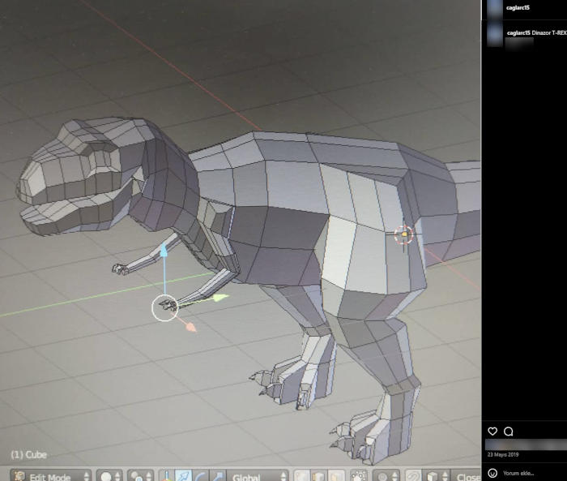
Exercise helps you stay youthful, and hiking refreshes both body and soul.
You don’t need to go to a gym — even a short walk can make a big difference.
Inactivity eventually slows you down both physically and mentally.
For me, it’s a way to stay healthy and balanced.
Note: I do go to a gym, but I prefer not to mention its name — it’s a personal choice.
Muay Thai is a Thai martial art similar to kickboxing — but it also heavily uses knees, elbows, and kicks in addition to punches. The main difference from boxing is the active use of the legs.
As a teenager, I was interested in learning to defend myself. During my time as a civil servant in Burdur, I earned an official license in the Muay Thai discipline.
Earlier, I briefly practiced karate and taekwondo. I also played in a hearing-impaired basketball team in Eskişehir (high school) and a volleyball team in Antalya (civil service), but I couldn’t continue due to lack of official licensing in those sports.
Yes, I’d love to! Especially in regions like Antalya, Burdur, or Isparta, where I can travel more easily.
Due to my age, joining a hearing-impaired sports team may be difficult — but I’d still be as effective as Cristiano Ronaldo 🙂
But honestly, I enjoy creating at my desk more than cheering from the stands 😄
It was hard, but not impossible. I first believed in myself, then took action.
Everyone has their own challenges — physical, emotional, or social... But creating something helps everyone.
If you're looking for inspiration, remember this: Some paths are silent, but very powerful.
I chose to share. Even if just one person finds inspiration, it’s worth it.
Most people prefer short bios, but sometimes details tell a deeper story. Details reflect character.
Yes — the lines I’ve shared are inspired by my own experiences. However, I prefer not to mention any names.
This page isn’t meant to spotlight personal anecdotes, but to give meaning through shared experiences.
If you're curious about someone in particular, I’m open to talking privately; but I don’t share personal names on a public page.
Yes, I still play occasionally. But I don’t accept game invites publicly. If you're curious, I tend to prefer single-player games like Cyberpunk 2077 or the Assassin’s Creed series. I also enjoy strategy games like Age of Empires.
This page isn’t meant for forming game squads — it’s designed for sharing inspiration, experiences, and ideas.
Both the coding/design process and the challenge of organizing content, gathering courage, and publishing were tough but educational steps for me.
This site is not just technical — it’s also a product of personal courage.
Not really, because my goal is to share inspiration, experience, and empathy. These reflections might help others find light on their own path.
Sincerity is sometimes the strongest bridge.
Because dark mode, neon effects, and the connection between technology and humanity resonate with my life.
Cyberpunk isn’t just an aesthetic for me — it’s a reflection of my own journey.
Yes, but in a limited way. It’s not open to everyone — I’m open to respectful and sincere communication.
What matters to me is authenticity and maintaining boundaries.
Yes, over time I may add new content, interactive tests, and inspiration boxes. You can think of this site as a living project.
The journey continues.
Yes, I’m still in contact with some of them. But this site wasn’t created to tell other people’s stories — it’s meant to share my own experiences and creations.
I don’t share names or details; respecting privacy is important to me.
Even though cities changed, shared memories and values helped keep those bonds strong. I’m still in touch with some — sometimes through messages, sometimes through rare meetups.
The focus of this site isn’t on personal names, but on the meaning behind shared experiences.
Yes, at different times I’ve connected through events and friendships. But I don’t define myself solely as part of a community — I also see myself as an individual.
My priorities are respect, sincerity, and mutual understanding — and this site exists to reflect those values.
Yes, I do appear in some group photos in the alumni gallery of İÇEM Anadolu. But those images were mostly about friendships and shared events.
I didn’t study at the Integrated Vocational School for the Disabled. So my name doesn’t appear in their albums or graduation lists, and naturally, the students there wouldn’t know me.
That’s because the program I wanted to study was computer programming. At that time, the Integrated Vocational School offered the following programs: Computer Operations, Architectural Drafting, Graphic Arts, and Ceramics. Since computer programming wasn’t available there, I continued my education in a mainstream high school and university.
Even if computer programming had been offered at the deaf school back then, I still would have chosen the mainstream path — because I embrace challenges.
Computer Programming focuses on software development, algorithm design, and coding. Computer Operations, on the other hand, is more about basic computer use, correspondence, and office software — it's application-oriented. Since my goal was to develop software, I chose the programming path.
Even though I took a different route, my goal remained the same: to grow in the field of computing.
For me, sports are not just a physical activity—they're also a mental refresh. Working out makes me feel younger and slows down aging. It boosts my energy and helps me feel healthy.
Note: Regular exercise strengthens the balance between body and mind.
When I work with pencil drawing, the contrast of black and white gives me a sense of calm. I learn a lot from hyper-realistic videos. Colored pencils also interest me because they bring details to life. Oil painting requires patience, and watercolor doesn’t quite speak to me.
Note: For me, art is a silent yet powerful way to express emotions.
I usually start with YouTube. The videos there make it easier to learn by visualizing the basic steps. When I want to go deeper, I turn to books and courses. Trial and error is also a great teacher for me.
Note: Curiosity is the biggest engine of learning.
Yes. As a kid, magazines, toys, and those red-and-black 3D glasses really fascinated me — that’s where the curiosity started, and it still continues today.
I enjoy taking photos — I like being able to control both the process and the perspective. Sometimes I shoot landscapes, sometimes everyday life, and sometimes creative projects. It brings me joy and has helped me develop my sense of visual aesthetics.
I can’t finish everything quickly or all at once — I take breaks and come back to it. Patience, small goals, and rest periods help me stay motivated. Plus, my hobbies give me energy.
My life timeline helps visitors get to know me in a clear and accessible way. It shows both my personal growth and the key turning points in my journey.
Yes. For example, in the online game Second Life, you can interact directly with real players. Using a headset and microphone, you can speak, and by typing messages, you can practice writing. So you’re not just playing — you’re also gaining daily conversation practice.
Note: Practicing a foreign language in online games is different from learning through textbooks. Talking with real people helps you learn the language more naturally.
I like a clean-cut American style with short sides — it gives a neat, organized, and confident look. When my hair grows longer, I enjoy Viking-inspired styles (long top, back braids, or textured touches); a mix of bold and classic.
I love vibrant, mixed environments where cultures blend — Russian, German, Arab, or any other backgrounds. Different languages, flavors, and stories inspire me. Diversity in people, conversations, and perspectives makes me happy.
I tend to be a bit shy when approached suddenly by people I don’t know. It’s just a personal habit — I may not feel comfortable in unprepared situations. But when I say “Let’s connect” on my page, it’s a conscious invitation. It means I’ve created a safe space where I’m ready to share.
1️⃣ iPhone users:
On iPhone, you can view and sync passwords across devices using your Apple ID + iCloud Keychain.
On Windows 11: Download the iCloud for Windows app and install the iCloud Passwords extension for Edge or Chrome.
2️⃣ Android users:
On Android, you can manage passwords using your Google Account + Password Manager.
On Windows 11: You can sync via the Chrome browser.
⚠️ Note: It’s not recommended to store passwords in a regular notes app or basic phone memo.
3️⃣ Alternative: You can write them down in a physical notebook (with a pen), but there’s a risk of loss or theft.
💡 Reminder: It’s important to remember your critical passwords. The decision and responsibility are entirely yours.
Yes. I can try foods from different cultures, observe traditions, and participate respectfully. For example, I can eat Korean dishes with chopsticks, wear a cowboy hat, or try on historical costumes. What matters most is being open to new experiences with curiosity and respect.
Yes, I can cook. 🍳 I’m good at grilling meat, making toast, and preparing homemade dishes like green beans or rice. Cooking is both a necessity and an enjoyable activity for me.
Yes — I especially love trying regional flavors. For example: Burdur-style kebab, walnut paste from Burdur, Aksu-style meatballs and bean salad, Eskişehir-style fried börek, Eskişehir boza, and Kayseri-style layered meat dish all interest me. Exploring food culture is a joyful experience — both in taste and cultural discovery.
Yes — I’m curious about foods from different cultures. 🍜 I enjoy trying Korean, Italian, and Mexican dishes, and I’m comfortable using chopsticks or other traditional utensils. It’s a fun way to discover new flavors and gain cultural experiences.
Yes — I care about cleanliness. 🧹 I keep my home tidy and don’t like clutter. I also pay attention to personal hygiene: I shower, brush my teeth, wear clean clothes, trim my nails, shave, and wash my hair regularly. Being clean and organized makes me feel good — both physically and mentally.
Sometimes it can be challenging, but it’s not a barrier—it’s more about habit. When I’m open, people approach me more easily. Some people assume I only communicate with those who are deaf or hard of hearing, but that’s not true. These kinds of labels don’t belong in my world. I don’t separate people by disability, “normal,” or race. What matters is healthy communication.
Note: In communication, sincerity matters more than differences.
Just be natural and respectful. Treat me the same way you would treat any other person. I don’t expect anything more.
Being natural is best. I’ll guide you if needed. 😊
There are challenges, yes — but I see it as part of my life.
With technology and personal effort, I’m able to overcome many things.
Yes, people can live in many different ways.
The implant is a tool for me — a support that makes life easier.
I’m not actually antisocial; I just enjoy calm spaces and genuine conversations.
I prefer meaningful communication over noise.
To me, silence means peace and balance. I prefer focusing on my thoughts rather than noise.
Sometimes, yes. But when communication is honest and open, everything becomes easier.
Empathy is one of the most essential things to me. Everyone faces different challenges, but being understood helps us all feel better.
I usually feel more comfortable in small and close-knit groups. In crowded and noisy environments I sometimes struggle, so I follow events selectively.
In my free time I focus on my hobbies: 3D design, electronics, technology projects, and digital art. I also enjoy reading books and watching documentaries.
Yes, I’m interested in both visual arts and music. They nurture my creative thinking and inspire my production processes.
I usually prefer communication through my website or email. I use social media tools like Instagram mostly for sharing content; I can’t always reply to messages.
Yes, I enjoy sharing, but while keeping my boundaries. I can share ideas and experiences; I don’t accept private or commercial requests.
Yes, seeing different cultures and having new experiences is important to me. It contributes to my personal growth and inspires my production and projects.
I chose to be a maker because I love creating and learning. Bringing my own ideas to life, gaining experience, and sharing with others is very valuable to me.
Computer programming was an area that interested me. The combination of logic, problem-solving, and creativity was very appealing. Also, I wanted to develop my own software and technologies in my future projects.
The main reason I chose to become a public employee was to work for the benefit of society and to have a secure long-term career. Also, my interest in production and technology allows me to continue my hobbies and personal projects without conflicting with my official duties.
At the time I took it, the disabled civil service recruitment was conducted by the Ministry of National Education and the exam was only written. There was no interview back then.
Now the system has changed; recruitment is done through EKPSS (Disabled Public Personnel Selection Exam) and the exam has become much more difficult. EKPSS is centrally placed, but some institutions may also conduct their own interviews or document reviews.
For me, the exam process was challenging but also a source of pride. Because it was the result of both my determination and my effort.
At the time I took it, the exam was only written. It was quite difficult; the questions required both technical knowledge and attention.
Now, with new regulations, it can be conducted in two stages: written and oral. So the process has become more comprehensive.
For me, this exam meant more than just a title; it was about seeing the reward of my effort. Thanks to my interest in knowledge, production, and technology, I completed the process with enjoyment.
I chose to be a public employee because I wanted to work in a safe and stable environment. At the same time, I value being useful in public service and continuing production within ethical boundaries.
My interest in 3D design and production helps me develop my creativity and turn my ideas into tangible form. Also, learning technology and producing projects with my hobbies motivates me.
💬 I usually prefer to communicate through my website or by email.
I want it to be a more focused and calm space for communication.
This way, every message can be answered more carefully and sincerely.
📱 My Instagram account is also open, but I mainly use it for sharing content.
If you’d like to start a conversation, it can still be an alternative.
I’m a bit shy about writing to people I don’t know; this is not distance, just a natural preference. 🙂
I don’t constantly think about the future. My priority is living in the present and focusing on what I can control.
The future is uncertain, and I don’t shape my life based on what others say about it.
🌱 Clarity comes from action, not prediction.
I follow with interest the work of sports federations, their accessibility solutions, and the opportunities they create for people who are deaf. I find such institutions valuable because they increase visibility and awareness in society.
However, I do not have a goal of actively participating in sports. I am more interested in the aspects of technology, awareness, and social contribution.
The Deaflympics is an important international event where deaf athletes compete worldwide. There are parts I find interesting; sports technologies, communication solutions, and accessibility aspects especially catch my attention.
However, I do not aim to actively participate in sports. I am more interested in following, observing, and raising awareness.
Actually, there’s no special secret. I just don’t like sitting idle at home. Creating, experimenting, and learning helps me relax. One day I write code, another day I work with the 3D printer, and sometimes I simply spend time with music.
Not everything is professional; most of it is out of curiosity and enjoyment.
My most comfortable way of communication is written communication. If you prefer, speaking slowly and clearly also makes it easier for me to understand.
In summary:
• Clear expression
• Slow pace
• Written communication if necessary
These make communication more comfortable and natural for both sides.
Yes, I am interested. Even though I work with 3D printing and digital production, I believe handmade creation has a unique value.
Works made with clay, dough, or similar materials involve tactile feeling, patience, and direct human effort.
The things I do are mostly about transitioning from digital to physical. However, I also respect traditional production methods.
Different methods, but the goal is the same: creating something from scratch.
🧠 This section contains fun, thought-provoking, and imaginative questions. Imagination is as much a part of creativity as reality!
We would likely have bionic ears, artificial eyes, exoskeletons ending paralysis, bionic arms, and neural-link technologies.
Some of them are already real! Especially bionic ear technology is quite advanced even today.
The line between human and machine would blur — but be careful: this would also become an ethical issue, not just technical.
Maybe to prehistoric times — just to see the dinosaurs alive...
But as a quiet person, I might’ve been mistaken for a wizard in the Middle Ages 🙂
A Velociraptor! Fast and clever — but maybe a bit dangerous 😂
Probably a silent but strong explorer.
Someone who builds stuff but also solves secret missions 🙂
Nope — but if you look closely, you might find little clues and surprise details 😉
Coffee when coding, tea when relaxing. But both are as constant in my life as my 3D printer 🙂
Yes! Sometimes I’m designing a part for my 3D printer, other times imagining a dinosaur game scene.
My mind may be quiet, but inside it’s a full-on project market 🙂
Cheating? Nah 🙂 I was usually the one explaining things to others.
I was quiet in class, but when I was at the board, everyone listened.
Not yet — but I do love coffee!
Maybe one day I’ll 3D print my own coffee mug 🙂
“PETG again, bro? I miss PLA!”
None of us are truly “normal.” Normal is just what most people are used to. I live a little outside the usual 🙂
Yes — but I have to connect to my auditory nerve via Bluetooth 🙂
Not always 🙂 But I try to make time for what matters most. Balancing creating, learning, and resting in a day isn’t easy — but it’s not impossible either.
I don’t remember everything, but I take regular notes, research, and review. Memory alone isn’t enough — it becomes stronger when supported by structure and curiosity.
Quite good 🙂 It speeds up some ideas and sparks inspiration at times. But in the end, it’s still human thought and the will to create that matter most.
“Creative.” Because even a small idea can be the beginning of something meaningful.
My computer, a silent coffee thermos, and some spare 3D printer parts. I can't stop creating — even in space. 🙂
But the real question is: will there be internet?
Emotions enrich creativity — but also complicate it.
If AI says "I'm sorry" one day, will it really feel sorry — or just be well trained?
That’s where humanity begins...
A sci-fi + documentary hybrid. Sometimes silent, sometimes vivid — but always original.
I don’t have to act in it, but the script must be mine.
The world I imagine is a bit futuristic 🙂
In short, I dream of a world shaped by science, health, education, and peace.
It wasn’t easy, but it was very instructive.
With a bit of patience, some coffee, and a lot of curiosity — yes, it was possible. Maybe someday a robot will make the coffee ☕🤖
To create more and share more.
Maybe one day I’d like to teach these skills to others or build communities around them.
Who knows? Maybe animated 3D menus, maybe a voice assistant... or just another simple “Hello”.
Even I’m sometimes surprised by what I can build.
Yes. I’m both curious about it and actively using it. Whether I’m developing for the web, brainstorming ideas, or just reflecting on something — AI accompanies me. Most importantly: "AI is just a tool. The human is still at the center."
It’s definitely transforming some roles. But I believe the real threat is to those who don’t adapt. New professions and skills are emerging. I see it not as a threat, but as a signal: “Change has begun.”
Yes. I received support in areas like idea generation and drafting content. But the final editing, tone, and style are all mine. So this might be an example of a “human–machine collaboration.”
It opens my mind. It makes me feel less alone. Sometimes it’s like a teacher, sometimes like a conversation partner. Still… nothing fully replaces human connection.
Maybe. Automatic language detection, text-to-speech, interactive content... But for now, I prefer to keep things simple and accessible. Maybe one day, there’ll be an assistant that gives “personalized” answers. 😊
Because I love pushing boundaries. AI isn’t just a technology — it’s a new way of thinking. And for someone like me with hearing loss, it’s a tool that makes access and creation easier.
Idea generation supported by code, suggestions for 3D modeling, even evaluating the tone of my own writing... AI is like a shared mind for me. I think — it supports.
At the edge of technology, but at the heart of humanity. As someone who creates, teaches, and tells stories... Maybe one day I’ll write a book, launch a course, or become a source of inspiration.
No. Because instead of fearing technology, I choose to understand it. When used wisely, AI is a tool that reduces barriers and boosts creativity.
AI can learn many things — but it can’t feel. Soul, intuition, values… these are uniquely human. The collaboration between humans and AI might just be the most powerful formula for the future.
I usually prefer sniper-style weapons. When choosing characters, I go for the ones that allow me to use those weapons — my playstyle leans toward strategic and long-range combat.
An interesting idea — yes, it would be fun. I like the thought of portraying different characters, but for me this remains more on the side of imagination and humor rather than a serious goal.
No, I may choose not to answer certain questions. This site is meant to share my personal work and technical interests.
Private life, orientation, politics, and religion are not covered here. However, I gladly respond to respectful, constructive, and relevant questions.
If you didn’t find your answer, I suggest checking the FAQ section first 🙂
— it just means the style of communication may be a bit different.
If the criticism is constructive, I take it seriously. But if it’s an insult, I don’t respond.
Everyone has their own path and interests. I built this site to create, share, and inspire — not to argue or please everyone.
If someone wants to tear things down, they can focus on their own walls. I’d rather keep building mine.
No. I don’t waste time on words that aren’t worth a conversation.
This site isn’t a battlefield — it exists to create, share, and be understood. If there’s respect, conversation is great. But if there’s no respect, silence is more valuable.
I’m not obligated to reply to every comment. Sometimes the best response is no response at all.
Things that look simple often require patience, curiosity, and effort behind the scenes.
To me, these pursuits are neither "pointless" nor "insignificant" — they’re areas that help me grow and express myself.
Everyone has different interests. As long as there’s respect, we can all stand behind our own creations.
To some, this level of detail might seem like overkill. But I created this page to introduce myself, share what I do, and answer questions that might come up.
Some people may find it strange — and that’s okay. This isn’t a résumé; think of it as a life showcase. Those who prefer simplicity can stay simple. Those who want to share, can share.
I chose to turn on my light. Because creating and sharing feels good to me. I’d rather express myself clearly than stay silent.
My life isn’t perfect. Like everyone else, I’ve had tough times — moments of struggle, exhaustion, and setbacks.
This site doesn’t focus on those low moments — it shares the creations I’ve built through them, the things that helped me feel better.
I’m not competing with anyone. I’m simply exploring the question: “What am I capable of?” I hope this page inspires you too — not for comparison, but for hope.
Absolutely — I always value ideas related to creativity and development.
However, due to time constraints, I might not be able to respond to every suggestion. Still, I truly appreciate respectful and constructive messages 🙂
I may not be able to respond to every message immediately. Here are a few possible reasons:
Please don’t take it personally if I don’t reply. I’m always more open to respectful, constructive, and relevant messages. Thanks for understanding.
Of course I’ve had difficult times. I still do.
People often think success is a straight line — but real success is a path that goes both up and down.
There are times of exhaustion, loneliness, or wanting to quit. But the real key is to keep going anyway.
It might seem distant or cold at first glance, but it doesn’t mean I’m arrogant.
Do you listen to every word from everyone? Probably not. You make your own choices based on who you want to be.
I’m the same. Being selective is about setting healthy boundaries — not looking down on others.
It could — and that’s okay. Openness often invites misunderstanding.
The attention I give to detail may look like I’ve gone beyond the “ordinary.”
But I am who I am. I’m not afraid of showing too much — I’m more afraid of leaving something essential out.
Yes, sometimes. Being visible means being heard — but also being misunderstood.
Still, I have no regrets. Hiding would’ve limited my creativity and growth.
Not all openness is weakness; sometimes it’s a conscious form of strength.
It doesn’t mean telling everything. But on this site, I tried to respond to important questions.
I gathered things I’m often asked—or things I thought might be asked. So in a way, it’s also a desire to offer some clarity about myself.
No, I wouldn’t be upset.
Some people become famous, some go astray, some improve... But I have no expectations. I did this for myself, and that’s enough for me.
If someone reads it, that’s wonderful. If not, then I’ve still reached myself in the silence.
Maybe I trust a simple line more than an image to express myself.
Because sometimes words don’t flow through voice, but through thought.
Because when used wisely, technology can support emotional expression too. ChatGPT is like a companion on this site.
I don’t have an official mission. But if someone finds hope here… that’s more than enough for me.
Because a CV is just dates and titles. This site was written with the rhythm of a life. I gave a felt answer to the question “Who am I?”—not just a single line.
Maybe I’m quiet on the outside, but there’s a noisy world inside. This site is the echo of that inner voice.
Because some things are heard not through sound, but through visuals. Color, form, line... they’re all tools of communication.
Maybe a little. But it’s not a “look at me” call — it’s a “try to understand me” one. For someone who’s had to stay silent, visibility isn’t a luxury; it’s a form of balance.
On the contrary. Details set me free. When I know exactly what I’m expressing, the fear of being misunderstood fades.
Everything.
Because the urge to create, to be seen, to be understood — that’s universal.
Our senses may differ, but our feelings are shared.
Then it becomes a record of the past. A silent witness of today, an archive for tomorrow. I’ll change, the site will change — but the intention stays the same: Truth.
Yes. I might speak less, but I’d express more with my eyes. What this site is — that’s who I am, with all its flaws and fullness.
Maybe in a notebook, maybe in a quiet conversation at a table… But this urge to express myself would always find a way.
What matters most to me is staying true to who I am — before caring about what others think.
Still, maybe someday — a small bot to guide users could be fun.
Yes, I enjoy staying active. I go to a fitness gym (I'd prefer not to name it). I focus on working out my entire body, not just arms.
I used to train randomly, but now I follow a structured program. Lately, I've become interested in tennis, and I also enjoy going for walks regularly.
Just like the body, the brain needs exercise too. That’s why I recommend playing chess as a great way to keep the mind sharp.
📚 Books:
🎬 Movies: Back to the Future trilogy, Star Wars saga, Alien franchise, Jurassic Park/World series, Avatar series
📺 Series: The Mandalorian, The Witcher, The Walking Dead, Spartacus, Squid Game, Rick and Mort, Alice in Borderland, Kengan Ashura, Baki Hanma, Vikings, Breaking Bad, Game of Thrones, Last Samurai Standing
👤 People: Mustafa Kemal Atatürk, Nikola Tesla
— Their dedication to science, visionary thinking, and courage continue to inspire me to this day.
Yes, this website truly belongs to me.
From the code and design to the content and visuals, everything was created with my personal effort.
If we have a mutual connection, that’s nice — but even without one, the site is open and transparent enough for anyone to understand.
No 🙂 I’m a real person. I designed this site and wrote all the content myself. But yes — I do make good use of technology!
Right now, my website doesn’t have a public comment feature. But if it did, I wouldn’t delete comments just because they’re negative. Hearing criticism is important for growth. Unless a comment contains insults or disrespect, I’d be open to people expressing their views.
Yes, there are some risks. But hiding yourself often brings an even heavier burden. For me, being transparent — saying “this is who I am, accept me without edits” — feels liberating. Still, I take care to protect personal safety and private boundaries.
Social media can be a source of motivation — and sometimes stress. Being judged through what you post can be exhausting. I see it as a kind of “mirror”: I reflect on myself through the eyes of others. What matters most is staying true to my values while navigating this space.
Because Instagram and email are already enough for communication. Sharing a phone number publicly poses privacy and security risks.
What matters to me is controlled and secure communication. That’s why I only share my official contact channels.
Note: When personal information is publicly available online, it can be misused. Setting boundaries for safety isn’t a weakness — it’s a conscious choice for protection.
Thanks to technology, communication has become much easier. With translation apps on phones, it’s possible to understand each other by speaking or typing. 📱🌍 Also, gestures and facial expressions are like a universal language — they often convey messages more powerfully than words. 🤝🙂
It used to feel strange, but now I understand that most people simply don’t know how to communicate. What matters to me is their intention — differences are normal. 🌍
I believe empathy is partly innate, but mostly something we can learn. By listening to different life stories, people can grow their empathy. 🤝
The simplest approach: be patient, make eye contact, and write if needed. Technology can help too — but sincerity is the most important thing. 💡
First, make sure to carefully read the relevant sections. If you still can’t find what you’re looking for, you can reach out in writing via info@caglarcagan.com. I’ll respond within the boundaries of digital safety and respectful communication.
Diction and effective speaking skills are taught at public education centers, municipal cultural departments, and private courses. Some university continuing education centers also offer online or in-person programs.
Additionally, platforms like YouTube offer free content, books, and apps for individual practice. I also occasionally benefit from YouTube content and professional support to improve my speech and diction.
This is a personal journey and may progress differently for everyone. The key is to choose resources that suit you and stay consistent.
Note: The quality and accessibility of educational content may vary by institution. It's important to choose what fits your needs.
Yes, diction training interests me. I want to make my speech clearer and more understandable.
I use online resources when needed, but I’m also considering joining a professional diction course in the future.
To speak Turkish effectively and beautifully, it's important to understand its building blocks: suffixes, tense markers, pronouns, adjectives, idioms, and word meanings.
You can learn and reinforce these concepts with the following resources:
Diction courses, reading habits, and writing exercises also strengthen speaking skills.
Note: These links lead to official sites of the Turkish Language Association. Content scope and updates are the responsibility of the institution.
There are many resources available for foreigners at different levels who want to learn Turkish. The Yunus Emre Institute offers Turkish courses around the world and provides online learning materials.
Universities such as the Istanbul University Turkish Language Teaching and Research Center (TÖMER) also offer programs for non-native speakers.
Mobile apps (like Duolingo, Busuu, Memrise) and YouTube lessons are also helpful for beginners.
Note: The accuracy and accessibility of these resources are the responsibility of the respective institutions.
Some sounds and suffixes in Turkish can be challenging, especially for beginners. For example:
I sometimes mix up similar sounds too. But with regular reading and listening practice, the differences become clearer over time.
Some Turkish words are difficult due to long vowels, consonant clusters, or fast pronunciation. For example:
Also, the softening role of the letter “ğ” can be confusing for non-native speakers. Many learners mispronounce it at first.
When I stumble on certain words, I practice by repeating them out loud.
In daily conversation, the most frequently heard words are usually greetings, emotional expressions, and basic needs. For example:
These words form the foundation of communication. They’re also the easiest and most useful for beginners learning Turkish.
Idioms reflect the cultural richness of Turkish. They’re used frequently in everyday speech and add depth to meaning.
For example, idioms like “kafası karışmak” (to be confused) or “göz önünde bulundurmak” (to take into account) convey emotions that single words can’t fully express.
Learning idioms helps not only with language skills but also with understanding Turkish thought patterns and cultural perspectives.
Word choice directly affects the tone of expression and the trust built with the listener. In both written and spoken Turkish, using context-appropriate words helps prevent misunderstandings.
Formal writing tends to use neutral and structured language, while casual speech may include emotional tones and regional expressions.
From my own experience: When I express the same message using different words, the reaction I get can completely change. That’s why word choice is not just about grammar — it’s also a social skill.
Alongside diction, rhythm, emphasis, and tone of voice — combined with gestures and facial expressions — enhance meaning. These elements shape the emotional layer of communication.
In face-to-face interactions, body language strongly influences how a message is received. The same sentence can carry different meanings depending on tone.
In my own practice: When I consciously use my tone of voice, my delivery becomes more impactful and persuasive. This awareness has helped me greatly when speaking in public.
Common mistakes include incorrect use of suffixes, confusion with verb tenses, literal translation of idioms, and pronunciation challenges.
For non-native learners, vowel harmony and verb conjugation can be tricky. But these mistakes are a natural part of the learning process.
From what I’ve observed: Fear of making mistakes slows down learning. Practicing with confidence makes the process more effective and enjoyable.
Formal Turkish uses “siz” for addressing others, full sentence structures, and neutral vocabulary. Informal speech uses “sen,” contractions, and more casual expressions.
Context and audience determine the tone. Formality matters in professional settings, while natural flow is preferred in friendly conversations.
In my own content: Adjusting tone based on the audience helps ensure the message is understood correctly. This distinction becomes even more important in multilingual projects.
Turkish is an agglutinative language. By adding suffixes to root words, new meanings and words are formed. This structure increases the richness and flexibility of expression.
For example, from the root “bil” (to know), you get “bilgi” (information), “bilim” (science), “bilinç” (awareness), “bilgisayar” (computer). This feature is both an advantage and a challenge for learners.
My approach: Recognizing word roots makes writing and translation much easier. It’s especially useful when working with technical terms.
Reading aloud, journaling, listening to Turkish content, and practicing speaking are effective methods. Language exchange groups and online resources also support the process.
Working with visual and audio materials improves vocabulary and pronunciation. Thinking in Turkish during daily life is another helpful step.
What works for me: Keeping a journal, listening to audiobooks, and doing short speaking exercises. These helped boost my confidence and helped me catch the rhythm of the language.
Suffixes, vowel harmony, and verb conjugations are often the biggest hurdles. Idioms that can't be translated word-for-word also tend to confuse learners.
TDK Dictionary, Duolingo, Memrise, TürkçePod101, YouTube channels, and various mobile apps are widely used.
Thinking directly in the language without translating boosts fluency and speeds up word choice. Being able to think in Turkish is a key milestone in the learning process.
Yes, some words and pronunciations vary across regions. But this diversity adds richness to the language and can be eye-opening for learners.
English-based words have become common among younger people. While this can sometimes make communication easier, relying less on native Turkish words may reduce the language’s natural feel.
Learning Turkish is both a technical and emotional journey for me. I rely on visual resources, structured grammar books, and support from speech therapy. To overcome the challenges I face in spoken communication, I’ve adopted a patient and systematic approach.
I struggle most with the listening and speaking sections in apps like Duolingo — the written parts are easier for me. Improving listening and speaking skills takes time and repetition.
In Turkish, written and spoken language use the same words; for example, “merhaba” is both written and spoken the same way. However, there are differences in how the language is used and why it’s used in each context.
Written Turkish tends to be more structured, formal, and rule-based, while spoken Turkish is more natural, flexible, and enriched by tone and rhythm. In speech, meaning is deepened through vocal emphasis, intonation, and facial expressions.
In English, the gap between written and spoken forms is more noticeable: writing follows strict grammar rules, while speech often includes contractions, idioms, and informal phrasing. In Spanish, written and spoken forms are more aligned, though regional pronunciation differences can affect everyday communication.
In my own language practice, I’ve noticed this: I’m not always as fluent when speaking Turkish as I am when writing it. But through training focused on listening and speaking, I’ve gradually become more comfortable and natural in conversation. Working with professional speech therapists has been incredibly helpful in this journey.
Yes, people with disabilities can be productive and work independently. A disability does not automatically limit someone’s ability to generate ideas, develop projects, or work. What matters are the right tools, accessible environments, and support systems.
💡 My personal experience: Through my hobbies and creations, I continue my projects independently despite my disability. People sometimes overlook this, but disability does not block productivity.
The goal is not privilege, but equal opportunity. Accessibility ensures that everyone has the same rights and participation.
No. Many people with disabilities actively work. What matters are proper accommodations, flexibility, and workplace accessibility.
It can be a matter of independence, privacy, or personal experience. Not asking for help does not mean someone is incapable.
Yes. People with disabilities have the right to make their own choices and life decisions; they can ask for support when needed.
A lot: communication tools, accessible apps, 3D/electronics projects, and more. Technology expands communication and creativity.
Through email, written messaging, captions, visual tools, and sometimes lip reading, we can communicate easily. The method can be decided together.
Yes, they can. The type or degree of disability does not eliminate the right to a relationship or marriage. What matters is mutual harmony, love, and life choices.
💡 A social note: Evaluating people with disabilities solely based on their disabilities means underestimating their social and emotional lives. This approach is wrong. Every individual can form relationships by their own choice.
Yes. Many sports can be adapted; physical activity is important for both health and social interaction.
No. Accessibility benefits everyone — older adults, parents, people with temporary injuries, and anyone who needs easier environments.
Note: Every individual may have different preferences in terms of compatibility and communication in marriage. This text defends general rights; personal choices may vary.
Yes, they can. The type of disability does not eliminate the right to marriage. Marriage is about mutual harmony, love, and life choices.
Two people may have the same type of disability, different disabilities, or even one may have a disability while the other does not. This diversity does not affect the right to marriage. What matters is the desire to build a life together.
In society, fears such as “if both have the same disability, the child will also have a disability” are sometimes expressed. However, this is not always the case and can be evaluated through genetic counseling.
What truly matters is that individuals understand and support each other, and want to build a life together — not the type of disability.
Note: Genetic risks vary individually. Medical counseling is recommended.
💡 Social emphasis: Thoughts like “one should only be with someone with the same type of disability” label individuals by their disabilities and ignore their human aspects. Relationships are based on love, harmony, and mutual choice.
There are common misconceptions in society: “People with disabilities can’t do anything without help,” “They only function with special support,” etc. These prejudices come from lack of personal experience and knowledge.
💡 My observation: Some people judge me only by my disability before even meeting me. But in reality, people with disabilities can manage their own lives, pursue hobbies, and be productive.
No. Disabilities can be present from birth or develop later; they are diverse and each person’s experience is different.
By setting boundaries, ignoring when necessary, seeking support, and continuing to create; also by sharing informative content to reduce prejudices.
♟️ This section is somewhat like chess:
I anticipate upcoming moves (words),
I prepare responses in advance.
In this way, I act by defining my own boundaries.
I am the owner of this page; the purpose is creating, sharing, and inspiring — importance depends on each person’s view.
I see myself as someone curious, creating, and sharing — nothing more, nothing less.
Any activity may seem meaningless to someone else; for me, creating is meaningful and educational.
Laughing is fine — but constructive criticism is more useful; respect is mutual.
Maybe most people won’t read; but there will always be an interested community — I focus on them.
No — I simply choose to share my work. It doesn’t have to be special.
Through email, written messages, and in some cases eye contact/lip reading, we can communicate effectively.
Yes, it happened; but it never stopped my desire to create — I share my experiences.
Yes, pity is not empathy. I prefer respect and equal treatment.
I usually ignore or set boundaries; if necessary, I use official complaint channels.
3D printers are useful for prototypes, spare parts, and hobby projects; for me they’re a learning tool.
Programming is the foundation of many digital tools — it’s a skill I need in my projects.
Trying recycling ideas is valuable environmentally; the goal is both learning and seeing useful alternatives.
Laser engraving is a common method for design and personalization; I use it for hobby and art.
Games are both entertainment and learning tools; games like chess develop strategy.
I don’t tolerate hate speech; I apply moderation, blocking, and legal steps if necessary.
I try to stay calm, protect my boundaries, and often choose not to respond.
Misunderstandings can happen; I explain when needed but I don’t stay defensive all the time — my priority is creating.
I respond with my work and projects; actions speak louder than words.
Most of the content is my personal work; some visuals and technical references may be used with sources cited.
Constructive criticism is welcome; it can be sent via email or the FAQ. Malicious attacks are subject to moderation.
I act within legal and ethical boundaries; I review requests and take appropriate steps if necessary.
Sometimes they affect me; but overall I continue creating and sharing. There are also supportive people, and I focus on them.
No, absolutely not.
This site belongs only to me and was created for personal presentation purposes.
There may be other people on the internet with the same name. I don’t know who they are or what they do.
For more information, please check the FAQ.
📌 Official contact channel: info@caglarcagan.com
✨ Remember: when you show respect, you receive it in return.
🎉 There are currently 1036 questions on this page.
Each one was written with care and answered through experience and knowledge.
Thank you to everyone who found it worth reading!
🎯 Some things are shared without being asked — not out of expectation, but as a feeling of completeness.
🌿 Being open takes courage. While it may increase the risk of criticism, I’d rather be seen as I am than hide who I am.
Everything fits in its place — simple, clear, and purposeful.
Perfectly suited for a site that carries the phrase “I chose to share before being asked.”
— A visitor’s comment
“Who would read all this?” we asked… but you did. Respect 🙏
Since you’re reading this box... maybe you’re a bit too observant. Don’t worry, so am I 🙂
Thank you for reading.
This site is an individual project sharing personal creations and technical experiences.
Email: info@caglarcagan.com — Used for official correspondence and site-related communication.
🤖 Instagram @caglarmaker is only for hobby content and general interaction.
📌 This site does not provide commercial services or consulting.
✉️ Messages are evaluated within the scope of content and technical topics.
📭 Responses are limited to content and technical matters; not every message may receive a reply.
📌 Communication does not constitute any official request or obligation.
It is recommended to review 🔍 the page content and FAQ section before contacting.
💬 Respectful and constructive communication is preferred. Inappropriate content may be removed.
🚫 Personal questions related to politics, religion, or private life will not be answered.
I am someone who loves creating and seeks to explore life.
My hearing impairment is not a barrier — just a different path.
On this path, silence has become a deeper form of listening. And perhaps most of all, it is there that stories are truly heard.
Everyone has a story to tell.
Mine begins here.
💡 It wasn’t an easy decision to introduce myself openly, share my creations, and be visible.
But here’s what I believe:
It’s not those who shout in the dark who are remembered, but those who light a spark.
This site is a courage, a call, and perhaps a note of inspiration.
If your path brought you here — welcome.
If you’ve read this far, thank you.
This alone is a form of communication.
Updates installed, tests passed, content in place. This website is now running in “full release” mode.
Patch notes: No major additions planned. Only security updates and minor cosmetic tweaks may occur.
🌌 But remember: “Finishing isn’t quitting — it’s completing a phase.”
⚡ System message: Çağlar.exe is running successfully. New ideas are quietly loading in the background.